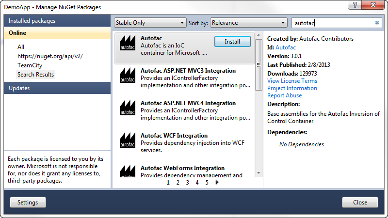
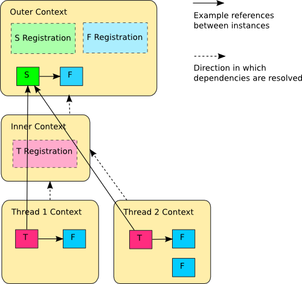

Welcome to Autofac’s documentation!¶
Autofac is an addictive IoC container for .NET. It manages the dependencies between classes so that applications stay easy to change as they grow in size and complexity. This is achieved by treating regular .NET classes as components.
Getting Started¶
The basic pattern for integrating Autofac into your application is:
- Structure your app with inversion of control (IoC) in mind.
- Add Autofac references.
- At application startup…
- Create a ContainerBuilder.
- Register components.
- Build the container and store it for later use.
- During application execution…
- Create a lifetime scope from the container.
- Use the lifetime scope to resolve instances of the components.
This getting started guide walks you through these steps for a simple console application. Once you have the basics down, you can check out the rest of the wiki for more advanced usage and integration information for WCF, ASP.NET, and other application types.
Structuring the Application¶
The idea behind inversion of control is that, rather than tie the classes in your application together and let classes “new up” their dependencies, you switch it around so dependencies are instead passed in during class construction. Martin Fowler has an excellent article explaining dependency injection/inversion of control if you want more on that.
For our sample app, we’ll define a class that writes the current date out. However, we don’t want it tied to the Console because we want to be able to test the class later or use it in a place where the console isn’t available.
We’ll also go as far as allowing the mechanism writing the date to be abstracted, so if we want to, later, swap in a version that writes tomorrow’s date, it’ll be a snap.
We’ll do something like this:
using System;
namespace DemoApp
{
// This interface helps decouple the concept of
// "writing output" from the Console class. We
// don't really "care" how the Write operation
// happens, just that we can write.
public interface IOutput
{
void Write(string content);
}
// This implementation of the IOutput interface
// is actually how we write to the Console. Technically
// we could also implement IOutput to write to Debug
// or Trace... or anywhere else.
public class ConsoleOutput : IOutput
{
public void Write(string content)
{
Console.WriteLine(content);
}
}
// This interface decouples the notion of writing
// a date from the actual mechanism that performs
// the writing. Like with IOutput, the process
// is abstracted behind an interface.
public interface IDateWriter
{
void WriteDate();
}
// This TodayWriter is where it all comes together.
// Notice it takes a constructor parameter of type
// IOutput - that lets the writer write to anywhere
// based on the implementation. Further, it implements
// WriteDate such that today's date is written out;
// you could have one that writes in a different format
// or a different date.
public class TodayWriter : IDateWriter
{
private IOutput _output;
public TodayWriter(IOutput output)
{
this._output = output;
}
public void WriteDate()
{
this._output.Write(DateTime.Today.ToShortDateString());
}
}
}
Now that we have a reasonably structured (if contrived) set of dependencies, let’s get Autofac in the mix!
Add Autofac References¶
The first step is to add Autofac references to your project. For this example, we’re only using core Autofac. Other application types may use additional Autofac integration libraries..
The easiest way to do this is through NuGet. The “Autofac” package has all the core functionality you’ll need.
Application Startup¶
At application startup, you need to create a ContainerBuilder and register your components with it. A component is an expression, .NET type, or other bit of code that exposes one or more services and can take in other dependencies.
In simple terms, think about a .NET type that implements an interface, like this:
public class SomeType : IService
{
}
You could address that type in one of two ways:
- As the type itself,
SomeType - As the interface, an
IService
In this case, the component is SomeType and the services it exposes are SomeType and IService.
In Autofac, you’d register that with a ContainerBuilder something like this:
// Create your builder.
var builder = new ContainerBuilder();
// Usually you're only interested in exposing the type
// via its interface:
builder.RegisterType<SomeType>().As<IService>();
// However, if you want BOTH services (not as common)
// you can say so:
builder.RegisterType<SomeType>().AsSelf().As<IService>();
For our sample app, we need to register all of our components (classes) and expose their services (interfaces) so things can get wired up nicely.
We also need to store the container so it can be used to resolve types later.
using System;
using Autofac;
namespace DemoApp
{
public class Program
{
private static IContainer Container { get; set; }
static void Main(string[] args)
{
var builder = new ContainerBuilder();
builder.RegisterType<ConsoleOutput>().As<IOutput>();
builder.RegisterType<TodayWriter>().As<IDateWriter>();
Container = builder.Build();
// The WriteDate method is where we'll make use
// of our dependency injection. We'll define that
// in a bit.
WriteDate();
}
}
}
Now we have a container with all of the components registered and they’re exposing the proper services. Let’s make use of it.
Application Execution¶
During application execution, you’ll need to make use of the components you registered. You do this by resolving them from a lifetime scope.
The container itself is a lifetime scope, and you can technically just resolve things right from the container. It is not recommended to resolve from the container directly, however.
When you resolve a component, depending on the instance scope you define, a new instance of the object gets created. (Resolving a component is roughly equivalent to calling “new” to instantiate a class. That’s really, really oversimplifying it, but from an analogy perspective it’s fine.) Some components may need to be disposed (like they implement IDisposable) - Autofac can handle disposing those components for you when the lifetime scope is disposed.
However, the container lives for the lifetime of your application. If you resolve a lot of stuff directly from the container, you may end up with a lot of things hanging around waiting to be disposed. That’s not good (and you may see a “memory leak” doing that).
Instead, create a child lifetime scope from the container and resolve from that. When you’re done resolving components, dispose of the child scope and everything gets cleaned up for you.
(When you’re working with the Autofac integration libraries, this child scope creation is largely done for you so you don’t have to think about it.)
For our sample app, we’ll implement the “WriteDate” method to get the writer from a scope and dispose of the scope when we’re done.
namespace DemoApp
{
public class Program
{
private static IContainer Container { get; set; }
static void Main(string[] args)
{
// ...the stuff you saw earlier...
}
public static void WriteDate()
{
// Create the scope, resolve your IDateWriter,
// use it, then dispose of the scope.
using (var scope = Container.BeginLifetimeScope())
{
var writer = scope.Resolve<IDateWriter>();
writer.WriteDate();
}
}
}
}
Now when you run your program…
- The
WriteDatemethod creates a lifetime scope from which it can resolve dependencies. It does this to avoid any memory leaks - ifIDateWriteror its dependencies are disposable, they will be automatically disposed when the scope is disposed. - The
WriteDatemethod manually resolves anIDateWriterfrom the lifetime scope. (This is “service location.”) Internally…- Autofac sees that
IDateWritermaps toTodayWriterso starts creating aTodayWriter. - Autofac sees that the
TodayWriterneeds anIOutputin its constructor. (This is “constructor injection.”) - Autofac sees that
IOutputmaps toConsoleOutputso creates a newConsoleOutputinstance. - Autofac uses the new
ConsoleOutputinstance to finish constructing theTodayWriter. - Autofac returns the fully-constructed
TodayWriterforWriteDateto consume.
- Autofac sees that
- The call to
writer.WriteDate()goes to the brand newTodayWriter.WriteDate()since that’s what was resolved. - The Autofac lifetime scope is disposed. Any disposable items that were resolved from that lifetime scope are also disposed.
Later, if you want your application to write a different date, you could implement a different IDateWriter and then change the registration at app startup. You don’t have to change any other classes. Yay, inversion of control!
Note: generally speaking, service location is largely considered an anti-pattern (see article). That is, manually creating scopes everywhere and sprinkling use of the container through your code is not necessarily the best way to go. Using the Autofac integration libraries you usually won’t have to do what we did in the sample app above. Instead, things get resolved from a central, “top level” location in the application and manual resolution is rare. Of course, how you design your app is up to you.
Going Further¶
The sample app gives you an idea of how to use Autofac, but there’s a lot more you can do.
- Check out the list of integration libraries to see how to integrate Autofac with your application.
- Learn about the ways to register components that add flexibility.
- Learn about Autofac configuration options that allow you to better manage your component registrations.
Need Help?¶
- You can ask questions on StackOverflow.
- You can participate in the Autofac Google Group.
- There’s an introductory Autofac tutorial on CodeProject.
- We have advanced debugging tips if you want to dive deep.
Building from Source¶
The source code along with Visual Studio project files is available on GitHub. Build instructions and details on contributing can be found in the Contributor Guide.
What’s New¶
Release Notes¶
Release notes for Autofac and integration packages are all stored in the GitHub releases for the respective package.
- Core components
- Integration libraries
- Multitenancy
- Extended features
Upgrading from Autofac 3.x to 4.x¶
The Autofac 4.x release added .NET Core support to core Autofac as well as several of the integration packages.
Generally speaking, the public API held stable during the upgrade but internals changed because reflection and a few other things are done just slightly differently in .NET Core.
The following is a list of known differences between the 3.x and 4.x versions of Autofac including changes to integration/extras packages:
- The following NuGet packages were renamed:
- Autofac.Extras.Attributed => Autofac.Extras.AttributeMetadata
- Autofac.Extras.Multitenant => Autofac.Multitenant
- Autofac.Extras.Multitenant.Wcf => Autofac.Multitenant.Wcf
- Autofac.Extras.DynamicProxy2 => Autofac.Extras.DynamicProxy
- Minimum target frameworks for all packages has been increased to .NET 4.5 and the .NET 4.5 security model is being used (e.g., no more
AllowPartiallyTrustedCallersAttribute). - The Autofac.Configuration package now uses Microsoft.Extensions.Configuration formatted configuration files instead of the old XML format. You can read more about this on the configuration page.
- The following integration packages have been moved to maintenance mode (fixes only, no new features, no active work):
- Autofac.Extras.NHibernate
- Autofac.Extras.EnterpriseLibraryConfigurator
- Autofac.Integration.DomainServices
Registering Components¶
Registration Concepts¶
You register components with Autofac by creating a ContainerBuilder and informing the builder which components expose which services.
Components can be created via reflection (by registering a specific .NET type or open generic); by providing a ready-made instance (an instance of an object you created); or via lambda expression (an anonymous function that executes to instantiate your object). ContainerBuilder has a family of Register() methods that allow you to set these up.
Each component exposes one or more services that are wired up using the As() methods on ContainerBuilder.
// Create the builder with which components/services are registered.
var builder = new ContainerBuilder();
// Register types that expose interfaces...
builder.RegisterType<ConsoleLogger>().As<ILogger>();
// Register instances of objects you create...
var output = new StringWriter();
builder.RegisterInstance(output).As<TextWriter>();
// Register expressions that execute to create objects...
builder.Register(c => new ConfigReader("mysection")).As<IConfigReader>();
// Build the container to finalize registrations
// and prepare for object resolution.
var container = builder.Build();
// Now you can resolve services using Autofac. For example,
// this line will execute the lambda expression registered
// to the IConfigReader service.
using(var scope = container.BeginLifetimeScope())
{
var reader = scope.Resolve<IConfigReader>();
}
Reflection Components¶
Register by Type¶
Components generated by reflection are typically registered by type:
var builder = new ContainerBuilder();
builder.RegisterType<ConsoleLogger>();
builder.RegisterType(typeof(ConfigReader));
When using reflection-based components, Autofac automatically uses the constructor for your class with the most parameters that are able to be obtained from the container.
For example, say you have a class with three constructors like this:
public class MyComponent
{
public MyComponent() { /* ... */ }
public MyComponent(ILogger logger) { /* ... */ }
public MyComponent(ILogger logger, IConfigReader reader) { /* ... */ }
}
Now say you register components and services in your container like this:
var builder = new ContainerBuilder();
builder.RegisterType<MyComponent>();
builder.RegisterType<ConsoleLogger>().As<ILogger>();
var container = builder.Build();
using(var scope = container.BeginLifetimeScope())
{
var component = scope.Resolve<MyComponent>();
}
When you resolve your component, Autofac will see that you have an ILogger registered, but you don’t have an IConfigReader registered. In that case, the second constructor will be chosen since that’s the one with the most parameters that can be found in the container.
An important note on reflection-based components: Any component type you register via RegisterType must be a concrete type. While components can expose abstract classes or interfaces as services, you can’t register an abstract/interface component. It makes sense if you think about it: behind the scenes, Autofac is creating an instance of the thing you’re registering. You can’t “new up” an abstract class or an interface. You have to have an implementation, right?
Specifying a Constructor¶
You can manually choose a particular constructor to use and override the automatic choice by registering your component with the UsingConstructor method and a list of types representing the parameter types in the constructor:
builder.RegisterType<MyComponent>()
.UsingConstructor(typeof(ILogger), typeof(IConfigReader));
Note that you will still need to have the requisite parameters available at resolution time or there will be an error when you try to resolve the object. You can pass parameters at registration time or you can pass them at resolve time.
Instance Components¶
In some cases, you may want to pre-generate an instance of an object and add it to the container for use by registered components. You can do this using the RegisterInstance method:
var output = new StringWriter();
builder.RegisterInstance(output).As<TextWriter>();
Something to consider when you do this is that Autofac automatically handles disposal of registered components and you may want to control the lifetime yourself rather than having Autofac call Dispose on your object for you. In that case, you need to register the instance with the ExternallyOwned method:
var output = new StringWriter();
builder.RegisterInstance(output)
.As<TextWriter>()
.ExternallyOwned();
Registering provided instances is also handy when integrating Autofac into an existing application where a singleton instance already exists and needs to be used by components in the container. Rather than tying those components directly to the singleton, it can be registered with the container as an instance:
builder.RegisterInstance(MySingleton.Instance).ExternallyOwned();
This ensures that the static singleton can eventually be eliminated and replaced with a container-managed one.
The default service exposed by an instance is the concrete type of the instance. See “Services vs. Components,” below.
Lambda Expression Components¶
Reflection is a pretty good default choice for component creation. Things get messy, though, when component creation logic goes beyond a simple constructor call.
Autofac can accept a delegate or lambda expression to be used as a component creator:
builder.Register(c => new A(c.Resolve<B>()));
The parameter c provided to the expression is the component context (an IComponentContext object) in which the component is being created. You can use this to resolve other values from the container to assist in creating your component. It is important to use this rather than a closure to access the container so that deterministic disposal and nested containers can be supported correctly.
Additional dependencies can be satisfied using this context parameter - in the example, A requires a constructor parameter of type B that may have additional dependencies.
The default service provided by an expression-created component is the inferred return type of the expression.
Below are some examples of requirements met poorly by reflective component creation but nicely addressed by lambda expressions.
Complex Parameters¶
Constructor parameters can’t always be declared with simple constant values. Rather than puzzling over how to construct a value of a certain type using an XML configuration syntax, use code:
builder.Register(c => new UserSession(DateTime.Now.AddMinutes(25)));
(Of course, session expiry is probably something you’d want to specify in a configuration file - but you get the gist ;))
Property Injection¶
While Autofac offers a more first-class approach to property injection, you can use expressions and property initializers to populate properties as well:
builder.Register(c => new A(){ MyB = c.ResolveOptional<B>() });
The ResolveOptional method will try to resolve the value but won’t throw an exception if the service isn’t registered. (You will still get an exception if the service is registered but can’t properly be resolved.) This is one of the options for resolving a service.
Property injection is not recommended in the majority of cases. Alternatives like the Null Object pattern, overloaded constructors or constructor parameter default values make it possible to create cleaner, “immutable” components with optional dependencies using constructor injection.
Selection of an Implementation by Parameter Value¶
One of the great benefits of isolating component creation is that the concrete type can be varied. This is often done at runtime, not just configuration time:
builder.Register<CreditCard>(
(c, p) =>
{
var accountId = p.Named<string>("accountId");
if (accountId.StartsWith("9"))
{
return new GoldCard(accountId);
}
else
{
return new StandardCard(accountId);
}
});
In this example, CreditCard is implemented by two classes, GoldCard and StandardCard - which class is instantiated depends on the account ID provided at runtime.
Parameters are provided to the creation function through an optional second parameter named p in this example.
Using this registration would look like:
var card = container.Resolve<CreditCard>(new NamedParameter("accountId", "12345"));
A cleaner, type-safe syntax can be achieved if a delegate to create CreditCard instances is declared and a delegate factory is used.
Open Generic Components¶
Autofac supports open generic types. Use the RegisterGeneric() builder method:
builder.RegisterGeneric(typeof(NHibernateRepository<>))
.As(typeof(IRepository<>))
.InstancePerLifetimeScope();
When a matching service type is requested from the container, Autofac will map this to an equivalent closed version of the implementation type:
// Autofac will return an NHibernateRepository<Task>
var tasks = container.Resolve<IRepository<Task>>();
Registration of a specialized service type (e.g. IRepository<Person>) will override the open generic version.
Services vs. Components¶
When you register components, you have to tell Autofac which services that component exposes. By default, most registrations will just expose themselves as the type registered:
// This exposes the service "CallLogger"
builder.RegisterType<CallLogger>();
Components can only be resolved by the services they expose. In this simple example it means:
// This will work because the component
// exposes the type by default:
scope.Resolve<CallLogger>();
// This will NOT work because we didn't
// tell the registration to also expose
// the ILogger interface on CallLogger:
scope.Resolve<ILogger>();
You can expose a component with any number of services you like:
builder.RegisterType<CallLogger>()
.As<ILogger>()
.As<ICallInterceptor>();
Once you expose a service, you can resolve the component based on that service. Note, however, that once you expose a component as a specific service, the default service (the component type) is overridden:
// These will both work because we exposed
// the appropriate services in the registration:
scope.Resolve<ILogger>();
scope.Resolve<ICallInterceptor>();
// This WON'T WORK anymore because we specified
// service overrides on the component:
scope.Resolve<CallLogger>();
If you want to expose a component as a set of services as well as using the default service, use the AsSelf method:
builder.RegisterType<CallLogger>()
.AsSelf()
.As<ILogger>()
.As<ICallInterceptor>();
Now all of these will work:
// These will all work because we exposed
// the appropriate services in the registration:
scope.Resolve<ILogger>();
scope.Resolve<ICallInterceptor>();
scope.Resolve<CallLogger>();
Default Registrations¶
If more than one component exposes the same service, Autofac will use the last registered component as the default provider of that service:
builder.RegisterType<ConsoleLogger>().As<ILogger>();
builder.RegisterType<FileLogger>().As<ILogger>();
In this scenario, FileLogger will be the default for ILogger because it was the last one registered.
To override this behavior, use the PreserveExistingDefaults() modifier:
builder.RegisterType<ConsoleLogger>().As<ILogger>();
builder.RegisterType<FileLogger>().As<ILogger>().PreserveExistingDefaults();
In this scenario, ConsoleLogger will be the default for ILogger because the later registration for FileLogger used PreserveExistingDefaults().
Conditional Registration¶
Note
Conditional registration was introduced in Autofac 4.4.0
In most cases, overriding registrations as noted in the section above, “Default Registrations,” is enough to get the right component resolved at runtime. Ensuring things get registered in the right order; using PreserveExistingDefaults(); and taking advantage of lambda/delegate registrations for more complex conditions and behavior can get you pretty far.
There can be a few scenarios where this may not be the way you want to go:
- You don’t want the component present in the system if something else is handling the functionality. For example, if you resolve an
IEnumerable<T>of a service, all of the registered components implementing that service will be returned, whether or not you’ve usedPreserveExistingDefaults(). Usually this is fine, but there are some edge cases where you may not want that. - You only want to register the component if some other component isn’t registered; or only if some other component is registered. You can’t resolve things out of a container that you’re building, and you shouldn’t update a container that’s already built. Being able to conditionally register a component based on other registrations can be helpful.
There are two registration extensions that can help in these cases:
OnlyIf()- Provide a lambda that uses anIComponentRegistryBuilderto determine if a registration should happen.IfNotRegistered()- Shortcut to stop a registration from happening if some other service is already registered.
These extensions run at the time of ContainerBuilder.Build() and will execute in the order of the actual component registrations. Here are some examples showing how they work:
var builder = new ContainerBuilder();
// Only ServiceA will be registered.
// Note the IfNotRegistered takes the SERVICE TYPE to
// check for (the As<T>), NOT the COMPONENT TYPE
// (the RegisterType<T>).
builder.RegisterType<ServiceA>()
.As<IService>();
builder.RegisterType<ServiceB>()
.As<IService>()
.IfNotRegistered(typeof(IService));
// HandlerA WILL be registered - it's running
// BEFORE HandlerB has a chance to be registered
// so the IfNotRegistered check won't find it.
//
// HandlerC will NOT be registered because it
// runs AFTER HandlerB. Note it can check for
// the type "HandlerB" because HandlerB registered
// AsSelf() not just As<IHandler>(). Again,
// IfNotRegistered can only check for "As"
// types.
builder.RegisterType<HandlerA>()
.AsSelf()
.As<IHandler>()
.IfNotRegistered(typeof(HandlerB));
builder.RegisterType<HandlerB>()
.AsSelf()
.As<IHandler>();
builder.RegisterType<HandlerC>()
.AsSelf()
.As<IHandler>()
.IfNotRegistered(typeof(HandlerB));
// Manager will be registered because both an IService
// and HandlerB are registered. The OnlyIf predicate
// can allow a lot more flexibility.
builder.RegisterType<Manager>()
.As<IManager>()
.OnlyIf(reg =>
reg.IsRegistered(new TypedService(typeof(IService))) &&
reg.IsRegistered(new TypedService(typeof(HandlerB))));
// This is when the conditionals actually run. Again,
// they run in the order the registrations were added
// to the ContainerBuilder.
var container = builder.Build();
Configuration of Registrations¶
You can use XML or programmatic configuration (“modules”) to provide groups of registrations together or change registrations at runtime. You can also use use Autofac modules for some dynamic registration generation or conditional registration logic.
Dynamically-Provided Registrations¶
Autofac modules are the simplest way to introduce dynamic registration logic or simple cross-cutting features. For example, you can use a module to dynamically attach a log4net logger instance to a service being resolved.
If you find that you need even more dynamic behavior, such as adding support for a new implicit relationship type, you might want to check out the registration sources section in the advanced concepts area.
Passing Parameters to Register¶
When you register components you have the ability to provide a set of parameters that can be used during the resolution of services based on that component. (If you’d rather provide the parameters at resolution time, you can do that instead.)
Available Parameter Types¶
Autofac offers several different parameter matching strategies:
NamedParameter- match target parameters by nameTypedParameter- match target parameters by type (exact type match required)ResolvedParameter- flexible parameter matching
NamedParameter and TypedParameter can supply constant values only.
ResolvedParameter can be used as a way to supply values dynamically retrieved from the container, e.g. by resolving a service by name.
Parameters with Reflection Components¶
When you register a reflection-based component, the constructor of the type may require a parameter that can’t be resolved from the container. You can use a parameter on the registration to provide that value.
Say you have a configuration reader that needs a configuration section name passed in:
public class ConfigReader : IConfigReader
{
public ConfigReader(string configSectionName)
{
// Store config section name
}
// ...read configuration based on the section name.
}
You could use a lambda expression component for that:
builder.Register(c => new ConfigReader("sectionName")).As<IConfigReader>();
Or you could pass a parameter to a reflection component registration:
// Using a NAMED parameter:
builder.RegisterType<ConfigReader>()
.As<IConfigReader>()
.WithParameter("configSectionName", "sectionName");
// Using a TYPED parameter:
builder.RegisterType<ConfigReader>()
.As<IConfigReader>()
.WithParameter(new TypedParameter(typeof(string), "sectionName"));
// Using a RESOLVED parameter:
builder.RegisterType<ConfigReader>()
.As<IConfigReader>()
.WithParameter(
new ResolvedParameter(
(pi, ctx) => pi.ParameterType == typeof(string) && pi.Name == "configSectionName",
(pi, ctx) => "sectionName"));
Parameters with Lambda Expression Components¶
With lambda expression component registrations, rather than passing the parameter value at registration time you enable the ability to pass the value at service resolution time. (Read more about resolving with parameters.)
In the component registration expression, you can make use of the incoming parameters by changing the delegate signature you use for registration. Instead of just taking in an IComponentContext parameter, take in an IComponentContext and an IEnumerable<Parameter>:
// Use TWO parameters to the registration delegate:
// c = The current IComponentContext to dynamically resolve dependencies
// p = An IEnumerable<Parameter> with the incoming parameter set
builder.Register((c, p) =>
new ConfigReader(p.Named<string>("configSectionName")))
.As<IConfigReader>();
When resolving with parameters, your lambda will use the parameters passed in:
var reader = scope.Resolve<IConfigReader>(new NamedParameter("configSectionName", "sectionName"));
Property and Method Injection¶
While constructor parameter injection is the preferred method of passing values to a component being constructed, you can also use property or method injection to provide values.
Property injection uses writeable properties rather than constructor parameters to perform injection. Method injection sets dependencies by calling a method.
Property Injection¶
If the component is a lambda expression component, use an object initializer:
builder.Register(c => new A { B = c.Resolve<B>() });
To support circular dependencies, use an activated event handler:
builder.Register(c => new A()).OnActivated(e => e.Instance.B = e.Context.Resolve<B>());
If the component is a reflection component, use the PropertiesAutowired() modifier to inject properties:
builder.RegisterType<A>().PropertiesAutowired();
If you have one specific property and value to wire up, you can use the WithProperty() modifier:
builder.RegisterType<A>().WithProperty("PropertyName", propertyValue);
Method Injection¶
The simplest way to call a method to set a value on a component is to use a lambda expression component and handle the method call right in the activator:
builder.Register(c => {
var result = new MyObjectType();
var dep = c.Resolve<TheDependency>();
result.SetTheDependency(dep);
return result;
});
If you can’t use a registration lambda, you can add an activating event handler:
builder
.Register<MyObjectType>()
.OnActivating(e => {
var dep = e.Context.Resolve<TheDependency>();
e.Instance.SetTheDependency(dep);
});
Assembly Scanning¶
Autofac can use conventions to find and register components in assemblies. You can scan and register individual types or you can scan specifically for Autofac modules.
Scanning for Types¶
Otherwise known as convention-driven registration or scanning, Autofac can register a set of types from an assembly according to user-specified rules:
var dataAccess = Assembly.GetExecutingAssembly();
builder.RegisterAssemblyTypes(dataAccess)
.Where(t => t.Name.EndsWith("Repository"))
.AsImplementedInterfaces();
Each RegisterAssemblyTypes() call will apply one set of rules only - multiple invocations of RegisterAssemblyTypes() are necessary if there are multiple different sets of components to register.
Filtering Types¶
RegisterAssemblyTypes() accepts a parameter array of one or more assemblies. By default, all concrete classes in the assembly will be registered. This includes internal and nested private classes. You can filter the set of types to register using some provided LINQ-style predicates.
In 4.8.0 a PublicOnly() extension was added to make data encapsulation easier. If you only want your public classes registered, use PublicOnly():
builder.RegisterAssemblyTypes(asm)
.PublicOnly();
To apply custom filtering to the types that are registered, use the Where() predicate:
builder.RegisterAssemblyTypes(asm)
.Where(t => t.Name.EndsWith("Repository"));
To exclude types from scanning, use the Except() predicate:
builder.RegisterAssemblyTypes(asm)
.Except<MyUnwantedType>();
The Except() predicate also allows you to customize the registration for the specific excluded type:
builder.RegisterAssemblyTypes(asm)
.Except<MyCustomisedType>(ct =>
ct.As<ISpecial>().SingleInstance());
Multiple filters can be used, in which case they will be applied with logical AND.
builder.RegisterAssemblyTypes(asm)
.PublicOnly()
.Where(t => t.Name.EndsWith("Repository"))
.Except<MyUnwantedRepository>();
Specifying Services¶
The registration syntax for RegisterAssemblyTypes() is a superset of the registration syntax for single types, so methods like As() all work with assemblies as well:
builder.RegisterAssemblyTypes(asm)
.Where(t => t.Name.EndsWith("Repository"))
.As<IRepository>();
Additional overloads to As() and Named() accept lambda expressions that determine, for a type, which services it will provide:
builder.RegisterAssemblyTypes(asm)
.As(t => t.GetInterfaces()[0]);
As with normal component registrations, multiple calls to As() are added together.
A number of additional registration methods have been added to make it easier to build up common conventions:
| Method | Description | Example |
|---|---|---|
AsImplementedInterfaces() |
Register the type as providing
all of its public interfaces as
services (excluding IDisposable). |
builder.RegisterAssemblyTypes(asm)
.Where(t => t.Name.EndsWith("Repository"))
.AsImplementedInterfaces();
|
AsClosedTypesOf(open) |
Register types that are assignable to a closed instance of the open generic type. | builder.RegisterAssemblyTypes(asm)
.AsClosedTypesOf(typeof(IRepository<>));
|
AsSelf() |
The default: register types as themselves - useful when also overriding the default with another service specification. | builder.RegisterAssemblyTypes(asm)
.AsImplementedInterfaces()
.AsSelf();
|
Scanning for Modules¶
Module scanning is performed with the RegisterAssemblyModules() registration method, which does exactly what its name suggests. It scans through the provided assemblies for Autofac modules, creates instances of the modules, and then registers them with the current container builder.
For example, say the two simple module classes below live in the same assembly and each register a single component:
public class AModule : Module
{
protected override void Load(ContainerBuilder builder)
{
builder.Register(c => new AComponent()).As<AComponent>();
}
}
public class BModule : Module
{
protected override void Load(ContainerBuilder builder)
{
builder.Register(c => new BComponent()).As<BComponent>();
}
}
The overload of RegisterAssemblyModules() that does not accept a type parameter will register all classes implementing IModule found in the provided list of assemblies. In the example below both modules get registered:
var assembly = typeof(AComponent).Assembly;
var builder = new ContainerBuilder();
// Registers both modules
builder.RegisterAssemblyModules(assembly);
The overload of RegisterAssemblyModules() with the generic type parameter allows you to specify a base type that the modules must derive from. In the example below only one module is registered because the scanning is restricted:
var assembly = typeof(AComponent).Assembly;
var builder = new ContainerBuilder();
// Registers AModule but not BModule
builder.RegisterAssemblyModules<AModule>(assembly);
The overload of RegisterAssemblyModules() with a Type object parameter works like the generic type parameter overload but allows you to specify a type that might be determined at runtime. In the example below only one module is registered because the scanning is restricted:
var assembly = typeof(AComponent).Assembly;
var builder = new ContainerBuilder();
// Registers AModule but not BModule
builder.RegisterAssemblyModules(typeof(AModule), assembly);
IIS Hosted Web Applications¶
When using assembly scanning with IIS applications, you can run into a little trouble depending on how you do the assembly location. (This is one of our FAQs)
When hosting applications in IIS all assemblies are loaded into the AppDomain when the application first starts, but when the AppDomain is recycled by IIS the assemblies are then only loaded on demand.
To avoid this issue use the GetReferencedAssemblies() method on System.Web.Compilation.BuildManager to get a list of the referenced assemblies instead:
var assemblies = BuildManager.GetReferencedAssemblies().Cast<Assembly>();
That will force the referenced assemblies to be loaded into the AppDomain immediately making them available for module scanning.
Resolving Services¶
After you have your components registered with appropriate services exposed, you can resolve services from the built container and child lifetime scopes. You do this using the Resolve() method:
var builder = new ContainerBuilder();
builder.RegisterType<MyComponent>().As<IService>();
var container = builder.Build();
using(var scope = container.BeginLifetimeScope())
{
var service = scope.Resolve<IService>();
}
You will notice the example resolves the service from a lifetime scope rather than the container directly - you should, too.
While it is possible to resolve components right from the root container, doing this through your application in some cases may result in a memory leak. It is recommended you always resolve components from a lifetime scope where possible to make sure service instances are properly disposed and garbage collected. You can read more about this in the section on controlling scope and lifetime.
When resolving a service, Autofac will automatically chain down the entire dependency hierarchy of the service and resolve any dependencies required to fully construct the service. If you have circular dependencies that are improperly handled or if there are missing required dependencies, you will get a DependencyResolutionException.
If you have a service that may or may not be registered, you can attempt conditional resolution of the service using ResolveOptional() or TryResolve():
// If IService is registered, it will be resolved; if
// it isn't registered, the return value will be null.
var service = scope.ResolveOptional<IService>();
// If IProvider is registered, the provider variable
// will hold the value; otherwise you can take some
// other action.
IProvider provider = null;
if(scope.TryResolve<IProvider>(out provider))
{
// Do something with the resolved provider value.
}
Both ResolveOptional() and TryResolve() revolve around the conditional nature of a specific service being registered. If the service is registered, resolution will be attempted. If resolution fails (e.g., due to lack of a dependency being registered), you will still get a DependencyResolutionException. If you need conditional resolution around a service where the condition is based on whether or not the service can successfully resolve, wrap the Resolve() call with a try/catch block.
Additional topics for resolving services:
Passing Parameters to Resolve¶
When it’s time to resolve services, you may find that you need to pass parameters to the resolution. (If you know the values at registration time, you can provide them in the registration instead.)
The Resolve() methods accept the same parameter types available at registration time using a variable-length argument list. Alternatively, delegate factories and the Func<T> implicit relationship type also allow ways to pass parameters during resolution.
Available Parameter Types¶
Autofac offers several different parameter matching strategies:
NamedParameter- match target parameters by nameTypedParameter- match target parameters by type (exact type match required)ResolvedParameter- flexible parameter matching
NamedParameter and TypedParameter can supply constant values only.
ResolvedParameter can be used as a way to supply values dynamically retrieved from the container, e.g. by resolving a service by name.
Parameters with Reflection Components¶
When you resolve a reflection-based component, the constructor of the type may require a parameter that you need to specify based on a runtime value, something that isn’t available at registration time. You can use a parameter in the Resolve() method call to provide that value.
Say you have a configuration reader that needs a configuration section name passed in:
public class ConfigReader : IConfigReader
{
public ConfigReader(string configSectionName)
{
// Store config section name
}
// ...read configuration based on the section name.
}
You could pass a parameter to the Resolve() call like this:
var reader = scope.Resolve<ConfigReader>(new NamedParameter("configSectionName", "sectionName"));
As with registration-time parameters, the NamedParameter in the example will map to the corresponding named constructor parameter, assuming the ConfigReader component was registered using reflection.
If you have more than one parameter, just pass them all in via the Resolve() method:
var service = scope.Resolve<AnotherService>(
new NamedParameter("id", "service-identifier"),
new TypedParameter(typeof(Guid), Guid.NewGuid()),
new ResolvedParameter(
(pi, ctx) => pi.ParameterType == typeof(ILog) && pi.Name == "logger",
(pi, ctx) => LogManager.GetLogger("service")));
Parameters with Lambda Expression Components¶
With lambda expression component registrations, you need to add the parameter handling inside your lambda expression so when the Resolve() call passes them in, you can take advantage of them.
In the component registration expression, you can make use of the incoming parameters by changing the delegate signature you use for registration. Instead of just taking in an IComponentContext parameter, take in an IComponentContext and an IEnumerable<Parameter>:
// Use TWO parameters to the registration delegate:
// c = The current IComponentContext to dynamically resolve dependencies
// p = An IEnumerable<Parameter> with the incoming parameter set
builder.Register((c, p) =>
new ConfigReader(p.Named<string>("configSectionName")))
.As<IConfigReader>();
Now when you resolve the IConfigReader, your lambda will use the parameters passed in:
var reader = scope.Resolve<IConfigReader>(new NamedParameter("configSectionName", "sectionName"));
Passing Parameters Without Explicitly Calling Resolve¶
Autofac supports two features that allow you to automatically generate service “factories” that can take strongly-typed parameter lists that will be used during resolution. This is a slightly cleaner way to create component instances that require parameters.
- Delegate Factories allow you to define factory delegate methods.
- The
Func<T>implicit relationship type can provide an automatically-generated factory function.
Implicit Relationship Types¶
Autofac supports automatically resolving particular types implicitly to support special relationships between components and services. To take advantage of these relationships, simply register your components as normal, but change the constructor parameter in the consuming component or the type being resolved in the Resolve() call so it takes in the specified relationship type.
For example, when Autofac is injecting a constructor parameter of type IEnumerable<ITask> it will not look for a component that supplies IEnumerable<ITask>. Instead, the container will find all implementations of ITask and inject all of them.
(Don’t worry - there are examples below showing the usage of the various types and what they mean.)
Note: To override this default behavior it is still possible to register explicit implementations of these types.
[Content on this document based on Nick Blumhardt’s blog article The Relationship Zoo.]
Supported Relationship Types¶
The table below summarizes each of the supported relationship types in Autofac and shows the .NET type you can use to consume them. Each relationship type has a more detailed description and use case after that.
| Relationship | Type | Meaning |
|---|---|---|
| A needs B | B |
Direct Dependency |
| A needs B at some point in the future | Lazy<B> |
Delayed Instantiation |
| A needs B until some point in the future | Owned<B> |
Controlled Lifetime |
| A needs to create instances of B | Func<B> |
Dynamic Instantiation |
| A provides parameters of types X and Y to B | Func<X,Y,B> |
Parameterized Instantiation |
| A needs all the kinds of B | IEnumerable<B>, IList<B>, ICollection<B> |
Enumeration |
| A needs to know X about B | Meta<B> and Meta<B,X> |
Metadata Interrogation |
| A needs to choose B based on X | IIndex<X,B> |
Keyed Service Lookup |
Relationship Type Details
Direct Dependency (B)¶
A direct dependency relationship is the most basic relationship supported - component A needs service B. This is handled automatically through standard constructor and property injection:
public class A
{
public A(B dependency) { ... }
}
Register the A and B components, then resolve:
var builder = new ContainerBuilder();
builder.RegisterType<A>();
builder.RegisterType<B>();
var container = builder.Build();
using(var scope = container.BeginLifetimeScope())
{
// B is automatically injected into A.
var a = scope.Resolve<A>();
}
Delayed Instantiation (Lazy<B>)¶
A lazy dependency is not instantiated until its first use. This appears where the dependency is infrequently used, or expensive to construct. To take advantage of this, use a Lazy<B> in the constructor of A:
public class A
{
Lazy<B> _b;
public A(Lazy<B> b) { _b = b }
public void M()
{
// The component implementing B is created the
// first time M() is called
_b.Value.DoSomething();
}
}
If you have a lazy dependency for which you also need metadata, you can use Lazy<B,M> instead of the longer Meta<Lazy<B>, M>.
Controlled Lifetime (Owned<B>)¶
An owned dependency can be released by the owner when it is no longer required. Owned dependencies usually correspond to some unit of work performed by the dependent component.
This type of relationship is interesting particularly when working with components that implement IDisposable. Autofac automatically disposes of disposable components at the end of a lifetime scope, but that may mean a component is held onto for too long; or you may just want to take control of disposing the object yourself. In this case, you’d use an owned dependency.
public class A
{
Owned<B> _b;
public A(Owned<B> b) { _b = b; }
public void M()
{
// _b is used for some task
_b.Value.DoSomething();
// Here _b is no longer needed, so
// it is released
_b.Dispose();
}
}
Internally, Autofac creates a tiny lifetime scope in which the B service is resolved, and when you call Dispose() on it, the lifetime scope is disposed. What that means is that disposing of B will also dispose of its dependencies unless those dependencies are shared (e.g., singletons).
This also means that if you have InstancePerLifetimeScope() registrations and you resolve one as Owned<B> then you may not get the same instance as being used elsewhere in the same lifetime scope. This example shows the gotcha:
var builder = new ContainerBuilder();
builder.RegisterType<A>().InstancePerLifetimeScope();
builder.RegisterType<B>().InstancePerLifetimeScope();
var container = builder.Build();
using(var scope = container.BeginLifetimeScope())
{
// Here we resolve a B that is InstancePerLifetimeScope();
var b1 = scope.Resolve<B>();
b1.DoSomething();
// This will be the same as b1 from above.
var b2 = scope.Resolve<B>();
b2.DoSomething();
// The B used in A will NOT be the same as the others.
var a = scope.Resolve<A>();
a.M();
}
This is by design because you wouldn’t want one component to dispose the B out from under everything else. However, it may lead to some confusion if you’re not aware.
If you would rather control B disposal yourself all the time, register B as ExternallyOwned().
Dynamic Instantiation (Func<B>)¶
Using an auto-generated factory can let you resolve a new B programmatically within the control flow of your program, without requiring a direct dependency on the Autofac library. Use this relationship type if:
- You need to create more than one instance of a given service.
- You want to specifically control when the setup of the service occurs.
- You’re not sure if you’re going to need a service and want to make the decision at runtime.
This relationship is also useful in cases like WCF integration where you need to create a new service proxy after faulting the channel.
Func<B> behaves just like calling Resolve<B>(). That means it’s not limited to acting on parameterless constructors on objects - it will wire up constructor parameters, do property injection, and follow the whole lifecycle that Resolve<B>() does.
Further, lifetime scopes are respected. If you register an object as InstancePerDependency() and call the Func<B> multiple times, you’ll get a new instance each time; if you register an object as SingleInstance() and call the Func<B> to resolve the object more than once, you will get the same object instance every time.
An example of this relationship looks like:
public class B
{
public B() {}
public void DoSomething() {}
}
public class A
{
Func<B> _newB;
public A(Func<B> b) { _newB = b; }
public void M()
{
var b = _newB();
b.DoSomething();
}
}
Parameterized Instantiation (Func<X, Y, B>)¶
You can also use an auto-generated factory to provide parameters when creating an new instance of the object, where the constructor of the object calls for some additional parameters. While the Func<B> relationship is similar to Resolve<B>(), the Func<X, Y, B> relationship is like calling Resolve<B>(TypedParameter.From<X>(x), TypedParameter.From<Y>(y)) - a resolve operation that has typed parameters. This is an alternative to passing parameters during registration or passing during manual resolution:
public class B
{
public B(string someString, int id) {}
public void DoSomething() {}
}
public class A
{
Func<int, string, B> _newB;
public A(Func<int, string, B> b) { _newB = b }
public void M()
{
var b = _newB(42, "http://hell.owor.ld");
b.DoSomething();
}
}
Note that since we’re resolving the instance rather than directly calling the constructor we don’t need to declare the parameters in the same order as they appear in the constructor definition, nor do we need to provide all the parameters listed in the constructor. If some of the constructor’s parameters can be resolved by the lifetime scope, then those parameters can be omitted from the Func<X, Y, B> signature being declared. You only need to list the types that the scope can’t resolve.
Alternatively, you can use this approach to override a constructor parameter that would otherwise have been resolved from the container, with a concrete instance already in hand.
Example:
//Suppose that P, Q & R are all registered with the Autofac Container.
public class B
{
public B(int id, P peaDependency, Q queueDependency, R ourDependency) {}
public void DoSomething() {}
}
public class A
{
Func<int, P, B> _newB;
public A(Func<int, P, B> bFactory) { _newB = bFactory }
public void M(P existingPea)
{
// The Q and R will be resolved by Autofac, but P will be existingPea instead.
var b = _newB(42, existingPea);
b.DoSomething();
}
}
Internally, Autofac determines what values to use for the constructor args solely based on the type and behaves as though we’ve temporarily defined the input values for resolution. A consequence of this is that auto-generated function factories cannot have duplicate types in the input parameter list. See below for further notes on this.
Lifetime scopes are respected using this relationship type, just as they are when using delegate factories. If you register an object as InstancePerDependency() and call the Func<X, Y, B> multiple times, you’ll get a new instance each time. However, if you register an object as SingleInstance() and call the Func<X, Y, B> to resolve the object more than once, you will get the same object instance every time regardless of the different parameters you pass in. Just passing different parameters will not break the respect for the lifetime scope.
As noted above, Func<X, Y, B> treats arguments as TypedParameter so you can’t have duplicate types in the parameter list. For example, say you have a type like this:
public class DuplicateTypes
{
public DuplicateTypes(int a, int b, string c)
{
// ...
}
}
You might want to register that type and have an auto-generated function factory for it. You will be able to resolve the function, but you won’t be able to execute it.
var func = scope.Resolve<Func<int, int, string, DuplicateTypes>>();
// Throws a DependencyResolutionException:
var obj = func(1, 2, "three");
In a loosely coupled scenario where the parameters are matched on type, you shouldn’t really know about the order of the parameters for a specific object’s constructor. If you need to do something like this, you should use a custom delegate type instead:
public delegate DuplicateTypes FactoryDelegate(int a, int b, string c);
Then register that delegate using RegisterGeneratedFactory():
builder.RegisterType<DuplicateTypes>();
builder.RegisterGeneratedFactory<FactoryDelegate>(new TypedService(typeof(DuplicateTypes)));
Now the function will work:
var func = scope.Resolve<FactoryDelegate>();
var obj = func(1, 2, "three");
Another option you have is to use a delegate factory, which you can read about in the advanced topics section.
Should you decide to use the built-in auto-generated factory behavior (Func<X, Y, B>) and only resolve a factory with one of each type, it will work but you’ll get the same input for all constructor parameters of the same type.
var func = container.Resolve<Func<int, string, DuplicateTypes>>();
// This works and is the same as calling
// new DuplicateTypes(1, 1, "three")
var obj = func(1, "three");
You can read more about delegate factories and the RegisterGeneratedFactory() method in the advanced topics section.
Enumeration (IEnumerable<B>, IList<B>, ICollection<B>)¶
Dependencies of an enumerable type provide multiple implementations of the same service (interface). This is helpful in cases like message handlers, where a message comes in and more than one handler is registered to process the message.
Let’s say you have a dependency interface defined like this:
public interface IMessageHandler
{
void HandleMessage(Message m);
}
Further, you have a consumer of dependencies like that where you need to have more than one registered and the consumer needs all of the registered dependencies:
public class MessageProcessor
{
private IEnumerable<IMessageHandler> _handlers;
public MessageProcessor(IEnumerable<IMessageHandler> handlers)
{
this._handlers = handlers;
}
public void ProcessMessage(Message m)
{
foreach(var handler in this._handlers)
{
handler.HandleMessage(m);
}
}
}
You can easily accomplish this using the implicit enumerable relationship type. Just register all of the dependencies and the consumer, and when you resolve the consumer the set of all matching dependencies will be resolved as an enumeration.
var builder = new ContainerBuilder();
builder.RegisterType<FirstHandler>().As<IMessageHandler>();
builder.RegisterType<SecondHandler>().As<IMessageHandler>();
builder.RegisterType<ThirdHandler>().As<IMessageHandler>();
builder.RegisterType<MessageProcessor>();
var container = builder.Build();
using(var scope = container.BeginLifetimeScope())
{
// When processor is resolved, it'll have all of the
// registered handlers passed in to the constructor.
var processor = scope.Resolve<MessageProcessor>();
processor.ProcessMessage(m);
}
The enumerable support will return an empty set if no matching items are registered in the container. That is, using the above example, if you don’t register any IMessageHandler implementations, this will break:
// This throws an exception - none are registered!
scope.Resolve<IMessageHandler>();
However, this works:
// This returns an empty list, NOT an exception:
scope.Resolve<IEnumerable<IMessageHandler>>();
This can create a bit of a “gotcha” where you might think you’ll get a null value if you inject something using this relationship. Instead, you’ll get an empty list.
Metadata Interrogation (Meta<B>, Meta<B, X>)¶
The Autofac metadata feature lets you associate arbitrary data with services that you can use to make decisions when resolving. If you want to make those decisions in the consuming component, use the Meta<B> relationship, which will provide you with a string/object dictionary of all the object metadata:
public class A
{
Meta<B> _b;
public A(Meta<B> b) { _b = b; }
public void M()
{
if (_b.Metadata["SomeValue"] == "yes")
{
_b.Value.DoSomething();
}
}
}
You can use strongly-typed metadata as well, by specifying the metadata type in the Meta<B, X> relationship:
public class A
{
Meta<B, BMetadata> _b;
public A(Meta<B, BMetadata> b) { _b = b; }
public void M()
{
if (_b.Metadata.SomeValue == "yes")
{
_b.Value.DoSomething();
}
}
}
If you have a lazy dependency for which you also need metadata, you can use Lazy<B,M> instead of the longer Meta<Lazy<B>, M>.
Keyed Service Lookup (IIndex<X, B>)¶
In the case where you have many of a particular item (like the IEnumerable<B> relationship) but you want to pick one based on service key, you can use the IIndex<X, B> relationship. First, register your services with keys:
var builder = new ContainerBuilder();
builder.RegisterType<DerivedB>().Keyed<B>("first");
builder.RegisterType<AnotherDerivedB>().Keyed<B>("second");
builder.RegisterType<A>();
var container = builder.Build();
Then consume the IIndex<X, B> to get a dictionary of keyed services:
public class A
{
IIndex<string, B> _b;
public A(IIndex<string, B> b) { _b = b; }
public void M()
{
var b = this._b["first"];
b.DoSomething();
}
}
Composing Relationship Types¶
Relationship types can be composed, so:
IEnumerable<Func<Owned<ITask>>>
Is interpreted correctly to mean:
- All implementations, of
- Factories, that return
- Lifetime-controlled
ITaskservices
Relationship Types and Container Independence¶
The custom relationship types in Autofac based on standard .NET types don’t force you to bind your application more tightly to Autofac. They give you a programming model for container configuration that is consistent with the way you write other components (vs. having to know a lot of specific container extension points and APIs that also potentially centralize your configuration).
For example, you can still create a custom ITaskFactory in your core model, but provide an AutofacTaskFactory implementation based on Func<Owned<ITask>> if that is desirable.
Note that some relationships are based on types that are in Autofac (e.g., IIndex<X, B>). Using those relationship types do tie you to at least having a reference to Autofac, even if you choose to use a different IoC container for the actual resolution of services.
You may also be interested in checking out the list of advanced topics to learn about named and keyed services, working with component metadata, and other service resolution related topics.
Controlling Scope and Lifetime¶
A great place to start learning about Autofac scope and lifetime is in Nick Blumhardt’s Autofac lifetime primer. There’s a lot to digest, though, and a lot of intermixed concepts there, so we’ll try to complement that article here.
You may recall from the registration topic that you add components to the container that implement services. You then end up resolving services and using those service instances to do your work.
The lifetime of a service is how long the service instance will live in your application - from the original instantiation to disposal. For example, if you “new up” an object that implements IDisposable and then later call Dispose() on it, the lifetime of that object is from the time you instantiated it all the way through disposal (or garbage collection if you didn’t proactively dispose it).
The scope of a service is the area in the application where that service can be shared with other components that consume it. For example, in your application you may have a global static singleton - the “scope” of that global object instance would be the whole application. On the other hand, you might create a local variable in a for loop that makes use of the global singleton - the local variable has a much smaller scope than the global.
The concept of a lifetime scope in Autofac combines these two notions. Effectively, a lifetime scope equates with a unit of work in your application. A unit of work might begin a lifetime scope at the start, then services required for that unit of work get resolved from a lifetime scope. As you resolve services, Autofac tracks disposable (IDisposable) components that are resolved. At the end of the unit of work, you dispose of the associated lifetime scope and Autofac will automatically clean up/dispose of the resolved services.
The two important things lifetime scopes control are sharing and disposal.
- Lifetime scopes are nestable and they control how components are shared. For example, a “singleton” service might be resolved from a root lifetime scope while individual units of work may require their own instances of other services. You can determine how a component is shared by setting its instance scope at registration.
- Lifetime scopes track disposable objects and dispose of them when the lifetime scope is disposed. For example, if you have a component that implements
IDisposableand you resolve it from a lifetime scope, the scope will hold onto it and dispose of it for you so your service consumers don’t have to know about the underlying implementation. You have the ability to control this behavior or add new disposal behavior if you choose.
As you work in your application, it’s good to remember these concepts so you make the most efficient use of your resources.
It is important to always resolve services from a lifetime scope and not the root container. Due to the disposal tracking nature of lifetime scopes, if you resolve a lot of disposable components from the container (the “root lifetime scope”), you may inadvertently cause yourself a memory leak. The root container will hold references to those disposable components for as long as it lives (usually the lifetime of the application) so it can dispose of them. You can change disposal behavior if you choose, but it’s a good practice to only resolve from a scope. If Autofac detects usage of a singleton or shared component, it will automatically place it in the appropriate tracking scope.
Let’s look at a web application as a more concrete example to illustrate lifetime scope usage. Say you have the following scenario:
- You have a global singleton logging service.
- Two simultaneous requests come in to the web application.
- Each request is a logical “unit of work” and each requires its own order processing service.
- Each order processing service needs to log information to the logging service.
In this scenario, you’d have a root lifetime scope that contains the singleton logging service and you’d have one child lifetime scope per request, each with its own order processing service:
+---------------------------------------------------+
| Autofac Container |
| Root Lifetime Scope |
| |
| Logging Service |
| (shared across all requests) |
| |
| +----------------------+ +----------------------+ |
| | First Request Scope | | Second Request Scope | |
| | | | | |
| | Order Processor | | Order Processor | |
| +----------------------+ +----------------------+ |
+---------------------------------------------------+
When each request ends, the request lifetime scope ends and the respective order processor gets disposed. The logging service, as a singleton, stays alive for sharing by future requests.
You can dive deeper on lifetime scopes in Nick Blumhardt’s Autofac lifetime primer.
Additional lifetime scope topics to explore:
Working with Lifetime Scopes¶
Creating a New Lifetime Scope¶
You can create a lifetime scope by calling the BeginLifetimeScope() method on any existing lifetime scope, starting with the root container. Lifetime scopes are disposable and they track component disposal, so make sure you always call “Dispose()”” or wrap them in “using” statements.
using(var scope = container.BeginLifetimeScope())
{
// Resolve services from a scope that is a child
// of the root container.
var service = scope.Resolve<IService>();
// You can also create nested scopes...
using(var unitOfWorkScope = scope.BeginLifetimeScope())
{
var anotherService = unitOfWorkScope.Resolve<IOther>();
}
}
Tagging a Lifetime Scope¶
There are some cases where you want to share services across units of work but you don’t want those services to be shared globally like singletons. A common example is “per-request” lifetimes in web applications. (You can read more about per-request scoping in the “Instance Scope” topic.) In this case, you’d want to tag your lifetime scope and register services as InstancePerMatchingLifetimeScope().
For example, say you have a component that sends emails. A logical transaction in your system may need to send more than one email, so you can share that component across individual pieces of the logical transaction. However, you don’t want the email component to be a global singleton. Your setup might look something like this:
// Register your transaction-level shared component
// as InstancePerMatchingLifetimeScope and give it
// a "known tag" that you'll use when starting new
// transactions.
var builder = new ContainerBuilder();
builder.RegisterType<EmailSender>()
.As<IEmailSender>()
.InstancePerMatchingLifetimeScope("transaction");
// Both the order processor and the receipt manager
// need to send email notifications.
builder.RegisterType<OrderProcessor>()
.As<IOrderProcessor>();
builder.RegisterType<ReceiptManager>()
.As<IReceiptManager>();
var container = builder.Build();
// Create transaction scopes with a tag.
using(var transactionScope = container.BeginLifetimeScope("transaction"))
{
using(var orderScope = transactionScope.BeginLifetimeScope())
{
// This would resolve an IEmailSender to use, but the
// IEmailSender would "live" in the parent transaction
// scope and be shared across any children of the
// transaction scope because of that tag.
var op = orderScope.Resolve<IOrderProcessor>();
op.ProcessOrder();
}
using(var receiptScope = transactionScope.BeginLifetimeScope())
{
// This would also resolve an IEmailSender to use, but it
// would find the existing IEmailSender in the parent
// scope and use that. It'd be the same instance used
// by the order processor.
var rm = receiptScope.Resolve<IReceiptManager>();
rm.SendReceipt();
}
}
Again, you can read more about tagged scopes and per-request scoping in the “Instance Scope” topic.
Adding Registrations to a Lifetime Scope¶
Autofac allows you to add registrations “on the fly” as you create lifetime scopes. This can help you when you need to do a sort of “spot weld” limited registration override or if you generally just need some additional stuff in a scope that you don’t want to register globally. You do this by passing a lambda to BeginLifetimeScope() that takes a ContainerBuilder and adds registrations.
using(var scope = container.BeginLifetimeScope(
builder =>
{
builder.RegisterType<Override>().As<IService>();
builder.RegisterModule<MyModule>();
}))
{
// The additional registrations will be available
// only in this lifetime scope.
}
Instance Scope¶
Instance scope determines how an instance is shared between requests for the same service. Note that you should be familiar with the concept of lifetime scopes to better understand what’s happening here.
When a request is made for a service, Autofac can return a single instance (single instance scope), a new instance (per dependency scope), or a single instance within some kind of context, e.g. a thread or an HTTP request (per lifetime scope).
This applies to instances returned from an explicit Resolve() call as well as instances created internally by the container to satisfy the dependencies of another component.
Note
Choosing the right lifetime scope will help you avoid captive dependencies and other pitfalls where a component lives too long or not long enough. It is up to the developer to make the correct choice for each of their application components.
Instance Per Dependency¶
Also called ‘transient’ or ‘factory’ in other containers. Using per-dependency scope, a unique instance will be returned from each request for a service.
This is the default if no other option is specified.
var builder = new ContainerBuilder();
// This...
builder.RegisterType<Worker>();
// ...is the same as this:
builder.RegisterType<Worker>().InstancePerDependency();
When you resolve a component that is instance per dependency, you get a new one each time.
using(var scope = container.BeginLifetimeScope())
{
for(var i = 0; i < 100; i++)
{
// Every one of the 100 Worker instances
// resolved in this loop will be brand new.
var w = scope.Resolve<Worker>();
w.DoWork();
}
}
Single Instance¶
This is also known as ‘singleton.’ Using single instance scope, one instance is returned from all requests in the root and all nested scopes.
var builder = new ContainerBuilder();
builder.RegisterType<Worker>().SingleInstance();
When you resolve a single instance component, you always get the same instance no matter where you request it.
// It's generally not good to resolve things from the
// container directly, but for singleton demo purposes
// we do...
var root = container.Resolve<Worker>();
// We can resolve the worker from any level of nested
// lifetime scope, any number of times.
using(var scope1 = container.BeginLifetimeScope())
{
for(var i = 0; i < 100; i++)
{
var w1 = scope1.Resolve<Worker>();
using(var scope2 = scope1.BeginLifetimeScope())
{
var w2 = scope2.Resolve<Worker>();
// root, w1, and w2 are always literally the
// same object instance. It doesn't matter
// which lifetime scope it's resolved from
// or how many times.
}
}
}
Instance Per Lifetime Scope¶
This scope applies to nested lifetimes. A component with per-lifetime scope will have at most a single instance per nested lifetime scope.
This is useful for objects specific to a single unit of work that may need to nest additional logical units of work. Each nested lifetime scope will get a new instance of the registered dependency.
var builder = new ContainerBuilder();
builder.RegisterType<Worker>().InstancePerLifetimeScope();
When you resolve the instance per lifetime scope component, you get a single instance per nested scope (e.g., per unit of work).
using(var scope1 = container.BeginLifetimeScope())
{
for(var i = 0; i < 100; i++)
{
// Every time you resolve this from within this
// scope you'll get the same instance.
var w1 = scope1.Resolve<Worker>();
}
}
using(var scope2 = container.BeginLifetimeScope())
{
for(var i = 0; i < 100; i++)
{
// Every time you resolve this from within this
// scope you'll get the same instance, but this
// instance is DIFFERENT than the one that was
// used in the above scope. New scope = new instance.
var w2 = scope2.Resolve<Worker>();
}
}
Instance Per Matching Lifetime Scope¶
This is similar to the ‘instance per lifetime scope’ concept above, but allows more precise control over instance sharing.
When you create a nested lifetime scope, you have the ability to “tag” or “name” the scope. A component with per-matching-lifetime scope will have at most a single instance per nested lifetime scope that matches a given name. This allows you to create a sort of “scoped singleton” where other nested lifetime scopes can share an instance of a component without declaring a global shared instance.
This is useful for objects specific to a single unit of work, e.g. an HTTP request, as a nested lifetime can be created per unit of work. If a nested lifetime is created per HTTP request, then any component with per-lifetime scope will have an instance per HTTP request. (More on per-request lifetime scope below.)
In most applications, only one level of container nesting will be sufficient for representing the scope of units of work. If more levels of nesting are required (e.g. something like global->request->transaction) components can be configured to be shared at a particular level in the hierarchy using tags.
var builder = new ContainerBuilder();
builder.RegisterType<Worker>().InstancePerMatchingLifetimeScope("myrequest");
The supplied tag value is associated with a lifetime scope when you start it. You will get an exception if you try to resolve a per-matching-lifetime-scope component when there’s no correctly named lifetime scope.
// Create the lifetime scope using the tag.
using(var scope1 = container.BeginLifetimeScope("myrequest"))
{
for(var i = 0; i < 100; i++)
{
var w1 = scope1.Resolve<Worker>();
using(var scope2 = scope1.BeginLifetimeScope())
{
var w2 = scope2.Resolve<Worker>();
// w1 and w2 are always the same object
// instance because the component is per-matching-lifetime-scope,
// so it's effectively a singleton within the
// named scope.
}
}
}
// Create another lifetime scope using the tag.
using(var scope3 = container.BeginLifetimeScope("myrequest"))
{
for(var i = 0; i < 100; i++)
{
// w3 will be DIFFERENT than the worker resolved in the
// earlier tagged lifetime scope.
var w3 = scope3.Resolve<Worker>();
using(var scope4 = scope3.BeginLifetimeScope())
{
var w4 = scope4.Resolve<Worker>();
// w3 and w4 are always the same object because
// they're in the same tagged scope, but they are
// NOT the same as the earlier workers (w1, w2).
}
}
}
// You can't resolve a per-matching-lifetime-scope component
// if there's no matching scope.
using(var noTagScope = container.BeginLifetimeScope())
{
// This throws an exception because this scope doesn't
// have the expected tag and neither does any parent scope!
var fail = noTagScope.Resolve<Worker>();
}
Instance Per Request¶
Some application types naturally lend themselves to “request” type semantics, for example ASP.NET web forms and MVC applications. In these application types, it’s helpful to have the ability to have a sort of “singleton per request.”
Instance per request builds on top of instance per matching lifetime scope by providing a well-known lifetime scope tag, a registration convenience method, and integration for common application types. Behind the scenes, though, it’s still just instance per matching lifetime scope.
What this means is that if you try to resolve components that are registered as instance-per-request but there’s no current request… you’re going to get an exception.
There is a detailed FAQ outlining how to work with per-request lifetimes.
var builder = new ContainerBuilder();
builder.RegisterType<Worker>().InstancePerRequest();
ASP.NET Core uses Instance Per Lifetime Scope rather than Instance Per Request. See the ASP.NET Core integration doc for more.
Instance Per Owned¶
The Owned<T> implicit relationship type creates new nested lifetime scopes. It is possible to scope dependencies to the owned instance using the instance-per-owned registrations.
var builder = new ContainerBuilder();
builder.RegisterType<MessageHandler>();
builder.RegisterType<ServiceForHandler>().InstancePerOwned<MessageHandler>();
In this example the ServiceForHandler service will be scoped to the lifetime of the owned MessageHandler instance.
using(var scope = container.BeginLifetimeScope())
{
// The message handler itself as well as the
// resolved dependent ServiceForHandler service
// is in a tiny child lifetime scope under
// "scope." Note that resolving an Owned<T>
// means YOU are responsible for disposal.
var h1 = scope.Resolve<Owned<MessageHandler>>();
h1.Dispose();
}
Thread Scope¶
Autofac can enforce that objects bound to one thread will not satisfy the dependencies of a component bound to another thread. While there is not a convenience method for this, you can do it using lifetime scopes.
var builder = new ContainerBuilder();
builder.RegisterType<MyThreadScopedComponent>()
.InstancePerLifetimeScope();
var container = builder.Build();
Then, each thread gets its own lifetime scope:
void ThreadStart()
{
using (var threadLifetime = container.BeginLifetimeScope())
{
var thisThreadsInstance = threadLifetime.Resolve<MyThreadScopedComponent>();
}
}
IMPORTANT: Given the multithreaded scenario, you must be very careful that the parent scope doesn’t get disposed out from under the spawned thread. You can get into a bad situation where components can’t be resolved if you spawn the thread and then dispose the parent scope.
Each thread executing through ThreadStart() will then get its own instance of MyThreadScopedComponent - which is essentially a “singleton” in the lifetime scope. Because scoped instances are never provided to outer scopes, it is easier to keep thread components separated.
You can inject a parent lifetime scope into the code that spawns the thread by taking an ILifetimeScope parameter. Autofac knows to automatically inject the current lifetime scope and you can create a nested scope from that.
public class ThreadCreator
{
private ILifetimeScope _parentScope;
public ThreadCreator(ILifetimeScope parentScope)
{
this._parentScope = parentScope;
}
public void ThreadStart()
{
using (var threadLifetime = this._parentScope.BeginLifetimeScope())
{
var thisThreadsInstance = threadLifetime.Resolve<MyThreadScopedComponent>();
}
}
}
If you would like to enforce this even more heavily, use instance per matching lifetime scope (see above) to associate the thread-scoped components with the inner lifetime (they’ll still have dependencies from the factory/singleton components in the outer container injected.) The result of this approach looks something like:
The ‘contexts’ in the diagram are the containers created with BeginLifetimeScope().
Captive Dependencies¶
A “captive dependency” occurs when a component intended to live for a short amount of time gets held by a component that lives for a long time. This blog article from Mark Seemann does a good job of explaining the concept.
Autofac does not necessarily prevent you from creating captive dependencies. You may find times when you get a resolution exception because of the way a captive is set up, but you won’t always. Stopping captive dependencies is the responsibility of the developer.
General Rule¶
The general rule to avoid captive dependencies:
The lifetime of the consuming component should be less than or equal to the lifetime of the service being consumed.
Basically, don’t let a singleton take an instance-per-request dependency because it’ll be held too long.
Simple Example¶
Say you have a web application that uses some information from the inbound request to determine the right database to which a connection should be made. You might have the following components:
- A repository that takes in the current request and a database connection factory.
- The current request like an
HttpContextthat could be used to help decide the business logic. - The database connection factory that takes some sort of parameter and returns the right database connection.
In this example, consider the lifetime scope that you’d want to use for each component. The current request context is an obvious one - you want instance-per-request. What about the others?
For the repository, say you choose “singleton.” A singleton gets created one time and cached for the life of the application. If you choose “singleton,” the request context will be passed in and held for the life of the application - even after that current request is over, the stale request context will be held. The repository is long-lived, but holds on to a shorter-life component. That’s a captive dependency.
However, say you make the repository “instance-per-request” - now it lives as long as the current request and no longer. That’s exactly as long as the request context it needs, so now it’s not a captive. Both the repository and the request context will be released at the same time (at the end of the request) and everything will be fine.
Taking it a step further, say you make the repository “instance-per-dependency” so you get a new one every time. This is still OK because it is intended to live for a shorter time than the current request. It won’t hold onto the request for too long, so there’s no captive.
The database connection factory goes through a similar thought process, but may have some different considerations. Maybe the factory is expensive to instantiate or needs to maintain some internal state to work correctly. You may not want it to be “instance-per-request” or “instance-per-dependency.” You may actually need it to be a singleton.
It’s OK for shorter-lived dependencies to take on longer-lived dependencies. If your repository is “instance-per-request” or “instance-per-dependency” you’ll still be good. The database connection factory intentionally lives longer.
Code Example¶
Here’s a unit test that shows what it looks like to forcibly create a captive dependency. In this example, a “rule manager” is used to deal with a set of “rules” that get used through an application.
public class RuleManager
{
public RuleManager(IEnumerable<IRule> rules)
{
this.Rules = rules;
}
public IEnumerable<IRule> Rules { get; private set; }
}
public interface IRule { }
public class SingletonRule : IRule { }
public class InstancePerDependencyRule : IRule { }
[Fact]
public void CaptiveDependency()
{
var builder = new ContainerBuilder();
// The rule manager is a single-instance component. It
// will only ever be instantiated one time and the cached
// instance will be used thereafter. It will be always be resolved
// from the root lifetime scope (the container) because
// it needs to be shared.
builder.RegisterType<RuleManager>()
.SingleInstance();
// This rule is registered instance-per-dependency. A new
// instance will be created every time it's requested.
builder.RegisterType<InstancePerDependencyRule>()
.As<IRule>();
// This rule is registered as a singleton. Like the rule manager
// it will only ever be resolved one time and will be resolved
// from the root lifetime scope.
builder.RegisterType<SingletonRule>()
.As<IRule>()
.SingleInstance();
using (var container = builder.Build())
using (var scope = container.BeginLifetimeScope("request"))
{
// The manager will be a singleton. It will contain
// a reference to the singleton SingletonRule, which is
// fine. However, it will also hold onto an InstancePerDependencyRule
// which may not be OK. The InstancePerDependencyRule that it
// holds will live for the lifetime of the container inside the
// RuleManager and will last until the container is disposed.
var manager = scope.Resolve<RuleManager>();
}
}
Note the example above doesn’t directly show it, but if you were to dynamically add registrations for rules in the container.BeginLifetimeScope() call, those dynamic registrations would not be included in the resolved RuleManager. The RuleManager, being a singleton, gets resolved from the root container where the dynamically added registrations don’t exist.
Another code example shows how you may get an exception when creating a captive dependency that ties incorrectly to a child lifetime scope.
public class RuleManager
{
public RuleManager(IEnumerable<IRule> rules)
{
this.Rules = rules;
}
public IEnumerable<IRule> Rules { get; private set; }
}
public interface IRule { }
public class SingletonRule : IRule
{
public SingletonRule(InstancePerRequestDependency dep) { }
}
public class InstancePerRequestDependency : IRule { }
[Fact]
public void CaptiveDependency()
{
var builder = new ContainerBuilder();
// Again, the rule manager is a single-instance component,
// resolved from the root lifetime and cached thereafter.
builder.RegisterType<RuleManager>()
.SingleInstance();
// This rule is registered as a singleton. Like the rule manager
// it will only ever be resolved one time and will be resolved
// from the root lifetime scope.
builder.RegisterType<SingletonRule>()
.As<IRule>()
.SingleInstance();
// This rule is registered on a per-request basis. It only exists
// during the request.
builder.RegisterType<InstancePerRequestDependency>()
.As<IRule>()
.InstancePerMatchingLifetimeScope("request");
using (var container = builder.Build())
using (var scope = container.BeginLifetimeScope("request"))
{
// PROBLEM: When the SingletonRule is resolved as part of the dependency
// chain for the rule manager, the InstancePerRequestDependency in
// the rule constructor will fail to be resolved because the rule
// is coming from the root lifetime scope but the InstancePerRequestDependency
// doesn't exist there.
Assert.Throws<DependencyResolutionException>(() => scope.Resolve<RuleManager>());
}
}
Exception to the Rule¶
Given the developer of the application is ultimately responsible for determining whether captives are OK or not, the developer may determine that it’s acceptable for a singleton, for example, to take an “instance-per-dependency” service.
For example, maybe you have a caching class that is intentionally set up to cache things for only the lifetime of the consuming component. If the consumer is a singleton, the cache can be used to store things for the whole app lifetime; if the consumer is “instance-per-request” then it only stores data for a single web request. In a case like that, you may end up with a longer-lived component taking a dependency on a shorter-lived component intentionally.
This is acceptable as long as the application developer understands the consequences of setting things up with such lifetimes. Which is to say, if you’re going to do it, do it intentionally rather than accidentally.
Disposal¶
Resources obtained within a unit of work - database connections, transactions, authenticated sessions, file handles etc. - should be disposed of when that work is complete. .NET provides the IDisposable interface to aid in this more deterministic notion of disposal.
Some IoC containers need to be told explicitly to dispose of a particular instance, through a method like ReleaseInstance(). This makes it very difficult to guarantee that the correct disposal semantics are used.
- Switching implementations from a non-disposable to a disposable component can mean modifying client code.
- Client code that may have ignored disposal when using shared instances will almost certainly fail to clean up when switched to non-shared instances.
Autofac solves these problems using lifetime scopes as a way of disposing of all of the components created during a unit of work.
using (var scope = container.BeginLifetimeScope())
{
scope.Resolve<DisposableComponent>().DoSomething();
// Components for scope disposed here, at the
// end of the 'using' statement when the scope
// itself is disposed.
}
A lifetime scope is created when a unit of work begins, and when that unit of work is complete the nested container can dispose all of the instances within it that are out of scope.
Registering Components¶
Autofac can automatically dispose of some components, but you have the ability to manually specify a disposal mechanism, too.
Components must be registered as InstancePerDependency() (the default) or some variation of InstancePerLifetimeScope() (e.g., InstancePerMatchingLifetimeScope() or InstancePerRequest()).
If you have singleton components (registered as SingleInstance()) they will live for the life of the container. Since container lifetimes are usually the application lifetime, it means the component won’t be disposed until the end of the application.
Automatic Disposal¶
To take advantage of automatic deterministic disposal, your component must implement IDisposable.
You can then register your component as needed and at the end of each lifetime scope in which the component
is resolved, the Dispose() method on the component will be called.
var builder = new ContainerBuilder();
builder.RegisterType<SomeDisposableComponent>();
var container = builder.Build();
// Create nested lifetime scopes, resolve
// the component, and dispose of the scopes.
// Your component will be disposed with the scope.
Asynchronous Disposal Support¶
If your components’ disposal behaviour requires some I/O activity, such as flushing a buffer to a file, or sending a packet over the network to close a connection, then you may want to consider implementing the new .NET IAsyncDisposable interface.
In Autofac 5.0, support was added for the IAsyncDisposable interface, so lifetime scopes can now be disposed of
asynchronously:
class MyComponent : IDisposable, IAsyncDisposable
{
INetworkResource myResource;
public void Dispose()
{
myResource.Close();
}
public async ValueTask DisposeAsync()
{
await myResource.CloseAsync();
}
}
// ...
await using (var scope = container.BeginLifetimeScope())
{
var service = scope.Resolve<MyComponent>():
// DisposeAsync will be called on MyComponent
// when the using block exits.
}
When a lifetime scope is disposed of asynchronously, any registered components that implement IAsyncDisposable
in addition to IDisposable will have their DisposeAsync() method invoked, instead of the Dispose() method.
If a component only implements the synchronous Dispose() method,
then it will still be invoked when the lifetime scope is disposed asynchronously.
When using Autofac with the ASP.NET Core Integration, all per-request lifetime scopes are disposed of asynchronously.
Important
While you do not have to implement IDisposable if you implement IAsyncDisposable, we strongly
recommend you do so.
If your component only implements IAsyncDisposable, but someone disposes of the scope synchronously,
then Autofac will throw an exception, because it does not know how to dispose of your component.
Specified Disposal¶
If your component doesn’t implement IDisposable but still requires some cleanup at the end of a lifetime scope, you can use the OnRelease lifetime event.
var builder = new ContainerBuilder();
builder.RegisterType<SomeComponent>()
.OnRelease(instance => instance.CleanUp());
var container = builder.Build();
// Create nested lifetime scopes, resolve
// the component, and dispose of the scopes.
// Your component's "CleanUp()" method will be
// called when the scope is disposed.
Note that OnRelease() overrides the default handling of IDisposable.Dispose(). If your component both implements IDisposable and requires some other cleanup method, you will either need to manually call Dispose() in OnRelease() or you will need to update your class so the cleanup method gets called from inside Dispose().
Disabling Disposal¶
Components are owned by the container by default and will be disposed by it when appropriate. To disable this, register a component as having external ownership:
builder.RegisterType<SomeComponent>().ExternallyOwned();
The container will never call Dispose() or DisposeAsync() on an object registered with external ownership.
It is up to you to dispose of components registered in this fashion.
Another alternative for disabling disposal is to use the implicit relationship Owned<T> and owned instances. In this case, rather than putting a dependency T in your consuming code, you put a dependency on Owned<T>. Your consuming code will then be responsible for disposal.
public class Consumer
{
private Owned<DisposableComponent> _service;
public Consumer(Owned<DisposableComponent> service)
{
_service = service;
}
public void DoWork()
{
// _service is used for some task
_service.Value.DoSomething();
// Here _service is no longer needed, so
// it is released
_service.Dispose();
}
}
You can read more about Owned<T> in the owned instances topic.
Resolve Components from Lifetime Scopes¶
Lifetime scopes are created by calling BeginLifetimeScope(). The simplest way is in a using block. Use the lifetime scopes to resolve your components and then dispose of the scope when the unit of work is complete.
using (var lifetime = container.BeginLifetimeScope())
{
var component = lifetime.Resolve<SomeComponent>();
// component, and any of its disposable dependencies, will
// be disposed of when the using block completes
}
Note that with Autofac integration libraries standard unit-of-work lifetime scopes will be created and disposed for you automatically. For example, in Autofac’s ASP.NET MVC integration, a lifetime scope will be created for you at the beginning of a web request and all components will generally be resolved from there. At the end of the web request, the scope will automatically be disposed - no additional scope creation is required on your part. If you are using one of the integration libraries, you should be aware of what automatically-created scopes are available for you.
Child Scopes are NOT Automatically Disposed¶
While lifetime scopes themselves implement IDisposable, the lifetime scopes that you create are not automatically disposed for you. If you create a lifetime scope, you are responsible for calling Dispose() on it to clean it up and trigger the automatic disposal of components. This is done easily with a using statement, but if you create a scope without a using, don’t forget to dispose of it when you’re done with it.
It’s important to distinguish between scopes you create and scopes the integration libraries create for you. You don’t have to worry about managing integration scopes (like the ASP.NET request scope) - those will be done for you. However, if you manually create your own scope, you will be responsible for cleaning it up.
Provided Instances¶
If you provide an instance registration to Autofac, Autofac will assume ownership of that instance and will handle its disposal.
// If you do this, Autofac will dispose of the StringWriter
// instance when the container is disposed.
var output = new StringWriter();
builder.RegisterInstance(output)
.As<TextWriter>();
If you want to take control of the disposal of the instance yourself, you need to register the instance as ExternallyOwned().
// Using ExternallyOwned means you will be responsible for
// disposing the StringWriter instead of Autofac.
var output = new StringWriter();
builder.RegisterInstance(output)
.As<TextWriter>()
.ExternallyOwned();
Advanced Hierarchies¶
The simplest and most advisable resource management scenario, demonstrated above, is two-tiered: there is a single ‘root’ container and a lifetime scope is created from this for each unit of work. It is possible to create more complex hierarchies of containers and components, however, using tagged lifetime scopes.
Lifetime Events¶
Autofac exposes events that can be hooked at various stages in instance lifecycle. These are subscribed to during component registration (or alternatively by attaching to the IComponentRegistration interface.
OnPreparing¶
The OnPreparing event is raised when a new instance of a component is required,
before OnActivating is invoked.
This event can be used to specify a custom set of parameter information that Autofac will consider when it creates a new instance of the component.
The primary use case of this event is to mock or interecept the services that Autofac would normally
pass as parameters to component activation, by setting the Parameters property of the provided
PreparingEventArgs argument with any custom parameters.
Tip
Before you use this event to set parameters, consider whether it may be more appropriate to define these at registration time, using parameter registration.
OnActivating¶
The OnActivating event is raised before a component is used. Here you can:
- Switch the instance for another or wrap it in a proxy
- Do property injection or method injection
- Perform other initialization tasks
In some cases, such as with RegisterType<T>(), the concrete type registered is used for type resolution and used by ActivatingEventArgs. For example, the following will fail with a class cast exception:
builder.RegisterType<TConcrete>() // FAILS: will throw at cast of TInterfaceSubclass
.As<TInterface>() // to type TConcrete
.OnActivating(e => e.ReplaceInstance(new TInterfaceSubclass()));
A simple workaround is to do the registration in two steps:
builder.RegisterType<TConcrete>().AsSelf();
builder.Register<TInterface>(c => c.Resolve<TConcrete>())
.OnActivating(e => e.ReplaceInstance(new TInterfaceSubclass()));
OnActivated¶
The OnActivated event is raised once a component is fully constructed. Here you can perform application-level tasks that depend on the component being fully constructed - these should be rare.
OnRelease¶
The OnRelease event replaces the standard cleanup behavior for a component. The standard cleanup behavior of components that implement IDisposable and that are not marked as ExternallyOwned() is to call the Dispose() method. The standard cleanup behavior for components that do not implement IDisposable or are marked as externally owned is a no-op - to do nothing. OnRelease overrides this behavior with the provided implementation.
Running Code at Startup¶
Autofac provides the ability for components to be notified or automatically activated when the container is built.
There are three automatic activation mechanisms available: - Startable components - Auto-activated components - Container build callbacks
In all cases, at the time the container is built, the component will be activated.
Use startup code sparingly. You can get yourself into some traps by overusing it. See the “Tips” section for more.
Startable Components¶
A startable component is one that is activated by the container when the container is initially built and has a specific method called to bootstrap an action on the component.
The key is to implement the Autofac.IStartable interface. When the container is built, the component will be activated and the IStartable.Start() method will be called.
This only happens once, for a single instance of each component, the first time the container is built. Resolving startable components by hand won’t result in their Start() method being called. It isn’t recommended that startable components are registered as anything other than SingleInstance().
Components that need to have something like a Start() method called each time they are activated should use a lifetime event like OnActivated instead.
To create a startable component, implement Autofac.IStartable:
public class StartupMessageWriter : IStartable
{
public void Start()
{
Console.WriteLine("App is starting up!");
}
}
Then register your component and be sure to specify it as IStartable or the action won’t be called:
var builder = new ContainerBuilder();
builder
.RegisterType<StartupMessageWriter>()
.As<IStartable>()
.SingleInstance();
When the container is built, the type will be activated and the IStartable.Start() method will be called. In this example, a message will be written to the console.
The order in which components are started is not defined, however, as of Autofac 4.7.0 when a component implementing IStartable depends on another component that is IStartable, the Start() method is guaranteed to have been called on the dependency before the dependent component is activated:
static void Main(string[] args)
{
var builder = new ContainerBuilder();
builder.RegisterType<Startable1>().AsSelf().As<IStartable>().SingleInstance();
builder.RegisterType<Startable2>().As<IStartable>().SingleInstance();
builder.Build();
}
class Startable1 : IStartable
{
public Startable1()
{
Console.WriteLine("Startable1 activated");
}
public void Start()
{
Console.WriteLine("Startable1 started");
}
}
class Startable2 : IStartable
{
public Startable2(Startable1 startable1)
{
Console.WriteLine("Startable2 activated");
}
public void Start()
{
Console.WriteLine("Startable2 started");
}
}
Will output the following:
Startable1 activated
Startable1 started
Startable2 activated
Startable2 started
Auto-Activated Components¶
An auto-activated component is a component that simply needs to be activated one time when the container is built. This is a “warm start” style of behavior where no method on the component is called and no interface needs to be implemented - a single instance of the component will be resolved with no reference to the instance held.
To register an auto-activated component, use the AutoActivate() registration extension.
var builder = new ContainerBuilder();
builder
.RegisterType<TypeRequiringWarmStart>()
.AsSelf()
.AutoActivate();
Note: If you omit the AsSelf() or As<T>() service registration calls when you register an AutoActivate() component, the component will only be registered to auto-activate and won’t necessarily be resolvable “as itself” after container build.
Container Build Callbacks¶
You can register any arbitrary action to happen at container build time by registering a build callback. A build callback is an Action<IContainer> and will get the built container prior to that container being returned from ContainerBuilder.Build. Build callbacks execute in the order they are registered:
var builder = new ContainerBuilder();
builder
.RegisterBuildCallback(c => c.Resolve<DbContext>());
// The callback will run after the container is built
// but before it's returned.
var container = builder.Build();
You can use build callbacks as another way to automatically start/warm up an object on container build. Do that by using them in conjunction with the lifetime event OnActivated and SingleInstance registrations.
A long/contrived example in unit test form:
public class TestClass
{
// Create a dependency chain like
// ==> 2 ==+
// 4 =+ ==> 1
// ==> 3 ==+
// 4 needs 2 and 3
// 2 needs 1
// 3 needs 1
// Dependencies should start up in the order
// 1, 2, 3, 4
// or
// 1, 3, 2, 4
private class Dependency1
{
public Dependency1(ITestOutputHelper output)
{
output.WriteLine("Dependency1.ctor");
}
}
private class Dependency2
{
private ITestOutputHelper output;
public Dependency2(ITestOutputHelper output, Dependency1 dependency)
{
this.output = output;
output.WriteLine("Dependency2.ctor");
}
public void Initialize()
{
this.output.WriteLine("Dependency2.Initialize");
}
}
private class Dependency3
{
private ITestOutputHelper output;
public Dependency3(ITestOutputHelper output, Dependency1 dependency)
{
this.output = output;
output.WriteLine("Dependency3.ctor");
}
public void Initialize()
{
this.output.WriteLine("Dependency3.Initialize");
}
}
private class Dependency4
{
private ITestOutputHelper output;
public Dependency4(ITestOutputHelper output, Dependency2 dependency2, Dependency3 dependency3)
{
this.output = output;
output.WriteLine("Dependency4.ctor");
}
public void Initialize()
{
this.output.WriteLine("Dependency4.Initialize");
}
}
// Xunit passes this to the ctor of the test class
// so we can capture console output.
private ITestOutputHelper _output;
public TestClass(ITestOutputHelper output)
{
this._output = output;
}
[Fact]
public void OnActivatedDependencyChain()
{
var builder = new ContainerBuilder();
builder.RegisterInstance(this._output).As<ITestOutputHelper>();
builder.RegisterType<Dependency1>().SingleInstance();
// The OnActivated replaces the need for IStartable. When an instance
// is activated/created, it'll run the Initialize method as specified. Using
// SingleInstance means that only happens once.
builder.RegisterType<Dependency2>().SingleInstance().OnActivated(args => args.Instance.Initialize());
builder.RegisterType<Dependency3>().SingleInstance().OnActivated(args => args.Instance.Initialize());
builder.RegisterType<Dependency4>().SingleInstance().OnActivated(args => args.Instance.Initialize());
// Notice these aren't in dependency order.
builder.RegisterBuildCallback(c => c.Resolve<Dependency4>());
builder.RegisterBuildCallback(c => c.Resolve<Dependency2>());
builder.RegisterBuildCallback(c => c.Resolve<Dependency1>());
builder.RegisterBuildCallback(c => c.Resolve<Dependency3>());
// This will run the build callbacks.
var container = builder.Build();
// These effectively do NOTHING. OnActivated won't be called again
// because they're SingleInstance.
container.Resolve<Dependency1>();
container.Resolve<Dependency2>();
container.Resolve<Dependency3>();
container.Resolve<Dependency4>();
}
}
This sample unit test will generate this output:
Dependency1.ctor
Dependency2.ctor
Dependency3.ctor
Dependency4.ctor
Dependency2.Initialize
Dependency3.Initialize
Dependency4.Initialize
You’ll see from the output that the callbacks and OnActivated methods executed in dependency order. If you must have the activations and the startups all happen in dependency order (not just the activations/resolutions), this is the workaround.
Note if you don’t use SingleInstance then OnActivated will be called for every new instance of the dependency. Since “warm start” objects are usually singletons and are expensive to create, this is generally what you want anyway.
Tips¶
Order: In general, startup logic happens in the order IStartable.Start(), AutoActivate, build callbacks. That said, it is not guaranteed. For example, as noted in the IStartable docs above, things will happen in dependency order rather than registration order. Further, Autofac reserves the right to change this order (e.g., refactor the calls to IStartable.Start() and AutoActivate into build callbacks). If you need to control the specific order in which initialization logic runs, it’s better to write your own initialization logic where you can control the order.
Avoid creating lifetime scopes during IStartable.Start or AutoActivate: If your startup logic includes the creation of a lifetime scope from which components will be resolved, this scope won’t have all the startables executed yet. By creating the scope, you’re forcing a race condition. This sort of logic would be better to execute in custom logic after the container is built rather than as part of an IStartable.
Avoid overusing startup logic: The ability to run startup logic on container build may feel like it’s also a good fit for orchestrating general application startup logic. Given the ordering and other challenges you may run into, it is recommended you keep application startup logic separate from dependency startup logic.
Consider OnActivated and SingleInstance for lazy initialization: Instead of using build callbacks or startup logic, consider using the lifetime event OnActivated with a SingleInstance registration so the initialization can happen on an object but not be tied to the order of container build.
Configuration¶
JSON/XML Configuration¶
Most IoC containers provide a programmatic interface as well as JSON/XML file-based configuration support, and Autofac is no exception.
Autofac encourages programmatic configuration through the ContainerBuilder class. Using the programmatic interface is central to the design of the container. JSON or XML is recommended when concrete classes cannot be chosen or configured at compile-time.
Before diving too deeply into JSON/XML configuration, be sure to read Modules - this explains how to handle more complex scenarios than the basic JSON/XML component registration will allow. Configuration in JSON/XML is not a feature-for-feature replacement for programmatic configuration, so complex scenarios may require a combination of JSON/XML and modules.
Configuring With Microsoft Configuration (4.0+)¶
Note
Microsoft Configuration applies to the 4.0+ version of Autofac.Configuration. It does not work with previous versions of the configuration package.
With the release of Microsoft.Extensions.Configuration, and Autofac.Configuration 4.0.0, Autofac takes advantage of the more flexible configuration model not previously available when limited to application configuration files. If you were using the app.config or web.config based configuration available before, you will need to migrate your configuration to the new format and update the way you set configuration with your application container.
Quick Start¶
The basic steps to getting configuration set up with your application are:
- Set up your configuration in JSON or XML files that can be read by
Microsoft.Extensions.Configuration.- JSON configuration uses
Microsoft.Extensions.Configuration.Json - XML configuration uses
Microsoft.Extensions.Configuration.Xml
- JSON configuration uses
- Build the configuration using the
Microsoft.Extensions.Configuration.ConfigurationBuilder. - Create a new
Autofac.Configuration.ConfigurationModuleand pass the builtMicrosoft.Extensions.Configuration.IConfigurationinto it. - Register the
Autofac.Configuration.ConfigurationModulewith your container.
A configuration file with some simple registrations looks like this:
{
"defaultAssembly": "Autofac.Example.Calculator",
"components": [{
"type": "Autofac.Example.Calculator.Addition.Add, Autofac.Example.Calculator.Addition",
"services": [{
"type": "Autofac.Example.Calculator.Api.IOperation"
}],
"injectProperties": true
}, {
"type": "Autofac.Example.Calculator.Division.Divide, Autofac.Example.Calculator.Division",
"services": [{
"type": "Autofac.Example.Calculator.Api.IOperation"
}],
"parameters": {
"places": 4
}
}]
}
JSON is cleaner and easier to read, but if you prefer XML, the same configuration looks like this:
<?xml version="1.0" encoding="utf-8" ?>
<autofac defaultAssembly="Autofac.Example.Calculator">
<components name="0">
<type>Autofac.Example.Calculator.Addition.Add, Autofac.Example.Calculator.Addition</type>
<services name="0" type="Autofac.Example.Calculator.Api.IOperation" />
<injectProperties>true</injectProperties>
</components>
<components name="1">
<type>Autofac.Example.Calculator.Division.Divide, Autofac.Example.Calculator.Division</type>
<services name="0" type="Autofac.Example.Calculator.Api.IOperation" />
<injectProperties>true</injectProperties>
<parameters>
<places>4</places>
</parameters>
</components>
</autofac>
Note the ordinal “naming” of components and services in XML - this is due to the way Microsoft.Extensions.Configuration handles ordinal collections (arrays).
Build up your configuration and register it with the Autofac ContainerBuilder like this:
// Add the configuration to the ConfigurationBuilder.
var config = new ConfigurationBuilder();
// config.AddJsonFile comes from Microsoft.Extensions.Configuration.Json
// config.AddXmlFile comes from Microsoft.Extensions.Configuration.Xml
config.AddJsonFile("autofac.json");
// Register the ConfigurationModule with Autofac.
var module = new ConfigurationModule(config.Build());
var builder = new ContainerBuilder();
builder.RegisterModule(module);
Default Assembly¶
You can specify a “default assembly” option in the configuration to help write types in a shorter fashion. If you don’t specify an assembly-qualified type name in a type or interface reference, it will be assumed to be in the default assembly.
{
"defaultAssembly": "Autofac.Example.Calculator"
}
Components¶
Components are the most common thing that you’ll register. You can specify several things on each component from lifetime scope to parameters.
Components are added to a top-level components element in configuration. Inside that is an array of the components you want to register.
This example shows one component that has all of the options on it, just for syntax illustration purposes. You wouldn’t actually use every one of these in every component registration.
{
"components": [{
"type": "Autofac.Example.Calculator.Addition.Add, Autofac.Example.Calculator.Addition",
"services": [{
"type": "Autofac.Example.Calculator.Api.IOperation"
}, {
"type": "Autofac.Example.Calculator.Api.IAddOperation",
"key": "add"
}],
"autoActivate": true,
"injectProperties": true,
"instanceScope": "per-dependency",
"metadata": [{
"key": "answer",
"value": 42,
"type": "System.Int32, mscorlib"
}],
"ownership": "external",
"parameters": {
"places": 4
},
"properties": {
"DictionaryProp": {
"key": "value"
},
"ListProp": [1, 2, 3, 4, 5]
}
}]
}
| Element Name | Description | Valid Values |
|---|---|---|
type |
The only required thing. The concrete class of the component (assembly-qualified if in an assembly other than the default). | Any .NET type name that can be created through reflection. |
services |
An array of services exposed by the component. Each service must have a type and may optionally specify a key. |
Any .NET type name that can be created through reflection. |
autoActivate |
A Boolean indicating if the component should auto-activate. | true, false |
injectProperties |
A Boolean indicating whether property (setter) injection for the component should be enabled. | true, false |
instanceScope |
Instance scope for the component. | singleinstance, perlifetimescope, perdependency, perrequest |
metadata |
An array of metadata values to associate with the component. Each item specifies the name, type, and value. |
Any metadata values. |
ownership |
Allows you to control whether the lifetime scope disposes the component or your code does. | lifetimescope, external |
parameters |
A name/value dictionary where the name of each element is the name of a constructor parameter and the value is the value to inject. | Any parameter in the constructor of the component type. |
properties |
A name/value dictionary where the name of each element is the name of a property and the value is the value to inject. | Any settable property on the component type. |
Note that both parameters and properties support dictionary and enumerable values. You can see an example of how to specify those in the JSON structure, above.
Modules¶
When using modules with Autofac, you can register those modules along with components when using configuration.
Modules are added to a top-level modules element in configuration. Inside that is an array of the modules you want to register.
This example shows one module that has all of the options on it, just for syntax illustration purposes. You wouldn’t actually use every one of these in every module registration.
{
"modules": [{
"type": "Autofac.Example.Calculator.OperationModule, Autofac.Example.Calculator",
"parameters": {
"places": 4
},
"properties": {
"DictionaryProp": {
"key": "value"
},
"ListProp": [1, 2, 3, 4, 5]
}
}]
}
| Element Name | Description | Valid Values |
|---|---|---|
type |
The only required thing. The concrete class of the module (assembly-qualified if in an assembly other than the default). | Any .NET type name that derives from Autofac.Module that can be created through reflection. |
parameters |
A name/value dictionary where the name of each element is the name of a constructor parameter and the value is the value to inject. | Any parameter in the constructor of the module type. |
properties |
A name/value dictionary where the name of each element is the name of a property and the value is the value to inject. | Any settable property on the module type. |
Note that both parameters and properties support dictionary and enumerable values. You can see an example of how to specify those in the JSON structure, above.
You are allowed to register the same module multiple times using different parameter/property sets if you so choose.
Type Names¶
In all cases where you see a type name (component type, service types, module type) it is expected to be the standard, assembly qualified type name that you would normally be able to pass to Type.GetType(string typename). If the type is in the defaultAssembly you can leave the assembly name off, but it doens’t hurt to put it there regardless.
Assembly qualified type names have the full type with namespace, a comma, and the name of the assembly, like Autofac.Example.Calculator.OperationModule, Autofac.Example.Calculator. In that case, Autofac.Example.Calculator.OperationModule is the type and it’s in the Autofac.Example.Calculator assembly.
Generics are a little more complicated. Configuration does not support open generics so you have to specify the fully qualified name of each of the generic parameters, too.
For example, say you have a repository IRepository<T> in a ConfigWithGenericsDemo assembly. Let’s also say you have a class StringRepository that implements IRepository<string>. To register that in configuration, it would look like this:
{
"components": [{
"type": "ConfigWithGenericsDemo.StringRepository, ConfigWithGenericsDemo",
"services": [{
"type": "ConfigWithGenericsDemo.IRepository`1[[System.String, mscorlib]], ConfigWithGenericsDemo"
}]
}]
}
If you’re having a difficult time figuring out what your type name is, you can always do something like this in code:
// Write the type name to the Debug output window and
// copy/paste it out of there into your config.
System.Diagnostics.Debug.WriteLine(typeof(IRepository<string>).AssemblyQualifiedName);
Differences from Legacy Configuration¶
When migrating from the legacy (pre 4.0 version) app.config based format to the new format, there are some key changes to be aware of:
- There is no ConfigurationSettingsReader.
Microsoft.Extensions.Configurationhas entirely replaced the old XML format configuration. The legacy configuration documentation does not apply to the 4.0+ series of configuration package. - Multiple configuration files handled differently. The legacy configuration had a
fileselement that would automatically pull several files together at once for configuration. Use theMicrosoft.Extensions.Configuration.ConfigurationBuilderto accomplish this now. - AutoActivate is supported. You can specify components should auto-activate now, a feature previously unavailable in configuration.
- XML uses element children rather than attributes. This helps keep the XML and JSON parsing the same when using
Microsoft.Extensions.Configurationso you can combine XML and JSON configuration sources correctly. - Using XML requires you to name components and services with numbers.
Microsoft.Extensions.Configurationrequires every configuration item to have a name and a value. The way it supports ordinal collections (arrays) is that it implicitly gives unnamed elements in a collection names with numbers (“0”, “1”, and so on). You can see an example of this in the quick start, above. If you don’t go with JSON, you need to watch for this requirement fromMicrosoft.Extensions.Configurationor you won’t get what you expect. - Per-request lifetime scope is supported. Previously you couldn’t configure elements to have per-request lifetime scope. Now you can.
- Dashes in names/values are gone. Names of XML elements used to include dashes like
inject-properties- to work with the JSON configuration format, these are now camel-case, likeinjectProperties. - Services get specified in a child element. The legacy configuration allowed a service to be declared right at the top of the component. The new system requires all services be in the
servicescollection.
Additional Tips¶
The new Microsoft.Extensions.Configuration mechanism adds a lot of flexibility. Things you may want to take advantage of:
- Environment variable support. You can use
Microsoft.Extensions.Configuration.EnvironmentVariablesto enable configuration changes based on the environment. A quick way to debug, patch, or fix something without touching code might be to switch an Autofac registration based on environment. - Easy configuration merging. The
ConfigurationBuilderallows you to create configuration from a lot of sources and merge them into one. If you have a lot of configuration, consider scanning for your configuration files and building the configuration dynamically rather than hardcoding paths. - Custom configuration sources. You can implement
Microsoft.Extensions.Configuration.ConfigurationProvideryourself backed by more than just files. If you want to centralize configuration, consider a database or REST API backed configuration source.
Configuring With Application Configuration (Legacy Pre-4.0)¶
Note
Legacy application configuration as described below applies to the 3.x and earlier versions of Autofac.Configuration. It does not work with the 4.0+ version of the package.
Prior to the release of Microsoft.Extensions.Configuration and the updated configuration model, Autofac tied into standard .NET application configuration files. (app.config / web.config). In the 3.x series of the Autofac.Configuration package, this was the way to configure things.
Setup¶
Using the legacy configuration mechanism, you need to declare a section handler somewhere near the top of your config file:
<?xml version="1.0" encoding="utf-8" ?>
<configuration>
<configSections>
<section name="autofac" type="Autofac.Configuration.SectionHandler, Autofac.Configuration"/>
</configSections>
Then, provide a section describing your components:
<autofac defaultAssembly="Autofac.Example.Calculator.Api">
<components>
<component
type="Autofac.Example.Calculator.Addition.Add, Autofac.Example.Calculator.Addition"
service="Autofac.Example.Calculator.Api.IOperation" />
<component
type="Autofac.Example.Calculator.Division.Divide, Autofac.Example.Calculator.Division"
service="Autofac.Example.Calculator.Api.IOperation" >
<parameters>
<parameter name="places" value="4" />
</parameters>
</component>
The defaultAssembly attribute is optional, allowing namespace-qualified rather than fully-qualified type names to be used. This can save some clutter and typing, especially if you use one configuration file per assembly (see Additional Config Files below.)
Components¶
Components are the most common thing that you’ll register. You can specify several things on each component from lifetime scope to parameters.
Component Attributes¶
The following can be used as attributes on the component element (defaults are the same as for the programmatic API):
| Attribute Name | Description | Valid Values |
|---|---|---|
type |
The only required attribute. The concrete class of the component (assembly-qualified if in an assembly other than the default.) | Any .NET type name that can be created through reflection. |
service |
A service exposed by the component. For more than one service, use the nested services element. |
As for type. |
instance-scope |
Instance scope - see Instance Scope. | per-dependency, single-instance or per-lifetime-scope |
instance-ownership |
Container’s ownership over the instances - see the InstanceOwnership enumeration. |
lifetime-scope or external |
name |
A string name for the component. | Any non-empty string value. |
inject-properties |
Enable property (setter) injection for the component. | yes, no. |
Component Child Elements¶
| Element | Description |
|---|---|
services |
A list of service elements, whose element content contains the names of types exposed as services by the component (see the service attribute.) |
parameters |
A list of explicit constructor parameters to set on the instances (see example above.) |
properties |
A list of explicit property values to set (syntax as for parameters.) |
metadata |
A list of item nodes with name, value and type attributes. |
There are some features missing from the XML configuration syntax that are available through the programmatic API - for example registration of generics. Using modules is recommended in these cases.
Modules¶
Configuring the container using components is very fine-grained and can get verbose quickly. Autofac has support for packaging components into Modules in order to encapsulate implementation while providing flexible configuration.
Modules are registered by type:
<modules>
<module type="MyModule" />
You can add nested parameters and properties to a module registration in the same manner as for components above.
Additional Config Files¶
You can include additional config files using:
<files>
<file name="Controllers.config" section="controllers" />
Configuring the Container¶
First, you must reference Autofac.Configuration.dll in from your project.
To configure the container use a ConfigurationSettingsReader initialised with the name you gave to your XML configuration section:
var builder = new ContainerBuilder();
builder.RegisterModule(new ConfigurationSettingsReader("mycomponents"));
// Register other components and call Build() to create the container.
The container settings reader will override default components already registered; you can write your application so that it will run with sensible defaults and then override only those component registrations necessary for a particular deployment.
Multiple Files or Sections¶
You can use multiple settings readers in the same container, to read different sections or even different config files if the filename is supplied to the ConfigurationSettingsReader constructor.
Modules¶
Introduction¶
IoC uses components as the basic building blocks of an application. Providing access to the constructor parameters and properties of components is very commonly used as a means to achieve deployment-time configuration.
This is generally a dubious practice for the following reasons:
- Constructors can change: Changes to the constructor signature or properties of a component can break deployed
App.configfiles - these problems can appear very late in the development process.- JSON/XML gets hard to maintain: Configuration files for large numbers of components can become unwieldy to maintain.
- “Code” starts showing up in configuration: Exposing the properties and constructor parameters of classes is an unpleasant breach of the ‘encapsulation’ of the application’s internals - these details don’t belong in configuration files.
This is where modules can help.
A module is a small class that can be used to bundle up a set of related components behind a ‘facade’ to simplify configuration and deployment. The module exposes a deliberate, restricted set of configuration parameters that can vary independently of the components used to implement the module.
The components within a module still make use dependencies at the component/service level to access components from other modules.
Modules do not, themselves, go through dependency injection. They are used to configure the container, they are not actually registered and resolved like other components. If your module takes a constructor parameter, for example, you need to pass that in yourself. It won’t come from the container.
Advantages of Modules¶
Decreased Configuration Complexity¶
When configuring an application by IoC it is often necessary to set the parameters spread between multiple components. Modules group related configuration items into one place to reduce the burden of looking up the correct component for a setting.
The implementer of a module determines how the module’s configuration parameters map to the properties and constructor parameters of the components inside.
Configuration Parameters are Explicit¶
Configuring an application directly through its components creates a large surface area that will need to be considered when upgrading the application. When it is possible to set potentially any property of any class through a configuration file that will differ at every site, refactoring is no longer safe.
Creating modules limits the configuration parameters that a user can configure, and makes it explicit to the maintenance programmer which parameters these are.
You can also avoid a trade-off between what makes a good program element and what makes a good configuration parameter.
Abstraction from the Internal Application Architecture¶
Configuring an application through its components means that the configuration needs to differ depending on things like, for example, the use of an enum vs. creation of strategy classes. Using modules hides these details of the application’s structure, keeping configuration succinct.
Better Type Safety¶
A small reduction in type safety will always exist when the classes making up the application can vary based on deployment. Registering large numbers of components through XML configuration, however, exacerbates this problem.
Modules are constructed programmatically, so all of the component registration logic within them can be checked at compile time.
Dynamic Configuration¶
Configuring components within modules is dynamic: the behaviour of a module can vary based on the runtime environment. This is hard, if not impossible, with purely component-based configuration.
Advanced Extensions¶
Modules can be used for more than just simple type registrations - you can also attach to component resolution events and extend how parameters are resolved or perform other extensions. The log4net integration module example shows one such module.
Example¶
In Autofac, modules implement the Autofac.Core.IModule interface. Generally they will derive from the Autofac.Module abstract class.
This module provides the IVehicle service:
public class CarTransportModule : Module
{
public bool ObeySpeedLimit { get; set; }
protected override void Load(ContainerBuilder builder)
{
builder.Register(c => new Car(c.Resolve<IDriver>())).As<IVehicle>();
if (ObeySpeedLimit)
builder.Register(c => new SaneDriver()).As<IDriver>();
else
builder.Register(c => new CrazyDriver()).As<IDriver>();
}
}
Encapsulated Configuration¶
Our CarTransportModule provides the ObeySpeedLimit configuration parameter without exposing the fact that this is implemented by choosing between a sane or a crazy driver. Clients using the module can use it by declaring their intentions:
builder.RegisterModule(new CarTransportModule() {
ObeySpeedLimit = true
});
or in Microsoft.Extensions.Configuration configuration format:
{
"modules": [{
"type": "MyNamespace.CarTransportModule, MyAssembly",
"properties": {
"ObeySpeedLimit": true
}
}]
}
This is valuable because the implementation of the module can vary without a flow on effect. That’s the idea of encapsulation, after all.
Flexibility to Override¶
Although clients of the CarTransportModule are probably primarily concerned with the IVehicle service, the module registers its IDriver dependency with the container as well. This ensures that the configuration is still able to be overridden at deployment time in the same way as if the components that make up the module had been registered independently.
It is a ‘best practice’ when using Autofac to add any XML configuration after programmatic configuration, e.g.:
builder.RegisterModule(new CarTransportModule());
builder.RegisterModule(new ConfigurationSettingsReader());
In this way, ‘emergency’ overrides can be made in a configuration file:
{
"components": [{
"type": "MyNamespace.LearnerDriver, MyAssembly",
"services": [{
"type": "MyNamespace.IDriver, MyAssembly"
}]
}]
}
So, modules increase encapsulation but don’t preclude you from tinkering with their innards if you have to.
Adapting to the Deployment Environment¶
Modules can be dynamic - that is, they can configure themselves to their execution environment.
When a module is loaded, it can do nifty things like check the environment:
protected override void Load(ContainerBuilder builder)
{
if (Environment.OSVersion.Platform == PlatformID.Unix)
RegisterUnixPathFormatter(builder);
else
RegisterWindowsPathFormatter(builder);
}
Common Use Cases for Modules¶
- Configure related services that provide a subsystem, e.g. data access with NHibernate
- Package optional application features as ‘plug-ins’
- Provide pre-built packages for integration with a system, e.g. an accounting system
- Register a number of similar services that are often used together, e.g. a set of file format converters
- New or customised mechanisms for configuring the container, e.g. JSON/XML configuration is implemented using a module; configuration using attributes could be added this way
Application Integration¶
ASP.NET¶
Autofac offers integration into several ASP.NET application types. The integration libraries provide features like easy connection of your Autofac container to the application lifecycle as well as support for things like per-request component lifetime.
These pages explain ASP.NET classic integration. If you are using ASP.NET Core, see the ASP.NET Core integration page.
OWIN¶
OWIN (Open Web Interface for .NET) is a simpler model for composing web-based applications without tying the application to the web server. To do this, a concept of “middleware” is used to create a pipeline through which requests travel.
Due to the differences in the way OWIN handles the application pipeline (detecting when a request starts/ends, etc.) integrating Autofac into an OWIN application is slightly different than the way it gets integrated into more “standard” ASP.NET apps. You can read about OWIN and how it works on this overview.
The important thing to remember is that order of OWIN middleware registration matters. Middleware gets processed in order of registration, like a chain, so you need to register foundational things (like Autofac middleware) first.
Quick Start¶
To take advantage of Autofac in your OWIN pipeline:
- Reference the
Autofac.Owinpackage from NuGet. - Build your Autofac container.
- Register the Autofac middleware with OWIN and pass it the container.
public class Startup
{
public void Configuration(IAppBuilder app)
{
var builder = new ContainerBuilder();
// Register dependencies, then...
var container = builder.Build();
// Register the Autofac middleware FIRST. This also adds
// Autofac-injected middleware registered with the container.
app.UseAutofacMiddleware(container);
// ...then register your other middleware not registered
// with Autofac.
}
}
Check out the individual ASP.NET integration library pages for specific details on different app types and how they handle OWIN support.
Dependency Injection in Middleware¶
Normally when you register OWIN middleware with your application, you use the extension methods that come with the middleware. For example Web API has the app.UseWebApi(config); extension. Middleware registered in this fashion is statically defined and will not have dependencies injected.
For custom middleware, you can allow Autofac to inject dependencies into the middleware by registering it with your application container rather than registering it with a static extension.
var builder = new ContainerBuilder();
builder.RegisterType<MyCustomMiddleware>();
//...
var container = builder.Build();
// This will add the Autofac middleware as well as the middleware
// registered in the container.
app.UseAutofacMiddleware(container);
When you call app.UseAutofacMiddleware(container); the Autofac middleware itself will be added to the pipeline, after which any Microsoft.Owin.OwinMiddleware classes registered with the container will also be added to the pipeline.
Middleware registered in this way will be resolved from the request lifetime scope for each request passing through the OWIN pipeline.
Controlling Middleware Order¶
For a simple scenario, app.UseAutofacMiddleware(container); will handle both adding an Autofac lifetime to the OWIN request scope as well as adding middleware that is registered with Autofac into the pipeline.
If you want more control over when DI-enabled middleware is added to the pipeline, you can use the UseAutofacLifetimeScopeInjector and UseMiddlewareFromContainer extensions.
var builder = new ContainerBuilder();
builder.RegisterType<MyCustomMiddleware>();
//...
var container = builder.Build();
// This adds ONLY the Autofac lifetime scope to the pipeline.
app.UseAutofacLifetimeScopeInjector(container);
// Now you can add middleware from the container into the pipeline
// wherever you like. For example, this adds custom DI-enabled middleware
// AFTER the Web API middleware/handling.
app.UseWebApi(config);
app.UseMiddlewareFromContainer<MyCustomMiddleware>();
Example¶
There is an example project showing Web API in conjunction with OWIN self hosting in the Autofac examples repository.
MVC¶
Autofac is always kept up to date to support the latest version of ASP.NET MVC, so documentation is also kept up with the latest. Generally speaking, the integration remains fairly consistent across versions.
MVC integration requires the Autofac.Mvc5 NuGet package.
MVC integration provides dependency injection integration for controllers, model binders, action filters, and views. It also adds per-request lifetime support.
This page explains ASP.NET classic MVC integration. If you are using ASP.NET Core, see the ASP.NET Core integration page.
- Quick Start
- Register Controllers
- Set the Dependency Resolver
- Register Model Binders
- Register Web Abstractions
- Enable Property Injection for View Pages
- Enable Property Injection for Action Filters
- Enable Injection of Action Parameters
- OWIN Integration
- Using “Plugin” Assemblies
- Using the Current Autofac DependencyResolver
- Glimpse Integration
- Unit Testing
- Example
Quick Start¶
To get Autofac integrated with MVC you need to reference the MVC integration NuGet package, register your controllers, and set the dependency resolver. You can optionally enable other features as well.
protected void Application_Start()
{
var builder = new ContainerBuilder();
// Register your MVC controllers. (MvcApplication is the name of
// the class in Global.asax.)
builder.RegisterControllers(typeof(MvcApplication).Assembly);
// OPTIONAL: Register model binders that require DI.
builder.RegisterModelBinders(typeof(MvcApplication).Assembly);
builder.RegisterModelBinderProvider();
// OPTIONAL: Register web abstractions like HttpContextBase.
builder.RegisterModule<AutofacWebTypesModule>();
// OPTIONAL: Enable property injection in view pages.
builder.RegisterSource(new ViewRegistrationSource());
// OPTIONAL: Enable property injection into action filters.
builder.RegisterFilterProvider();
// OPTIONAL: Enable action method parameter injection (RARE).
builder.InjectActionInvoker();
// Set the dependency resolver to be Autofac.
var container = builder.Build();
DependencyResolver.SetResolver(new AutofacDependencyResolver(container));
}
The sections below go into further detail about what each of these features do and how to use them.
Register Controllers¶
At application startup, while building your Autofac container, you should register your MVC controllers and their dependencies. This typically happens in an OWIN startup class or in the Application_Start method in Global.asax.
var builder = new ContainerBuilder();
// You can register controllers all at once using assembly scanning...
builder.RegisterControllers(typeof(MvcApplication).Assembly);
// ...or you can register individual controlllers manually.
builder.RegisterType<HomeController>().InstancePerRequest();
Note that ASP.NET MVC requests controllers by their concrete types, so registering them As<IController>() is incorrect. Also, if you register controllers manually and choose to specify lifetimes, you must register them as InstancePerDependency() or InstancePerRequest() - ASP.NET MVC will throw an exception if you try to reuse a controller instance for multiple requests.
Set the Dependency Resolver¶
After building your container pass it into a new instance of the AutofacDependencyResolver class. Use the static DependencyResolver.SetResolver method to let ASP.NET MVC know that it should locate services using the AutofacDependencyResolver. This is Autofac’s implementation of the IDependencyResolver interface.
var container = builder.Build();
DependencyResolver.SetResolver(new AutofacDependencyResolver(container));
Register Model Binders¶
An optional step you can take is to enable dependency injection for model binders. Similar to controllers, model binders (classes that implement IModelBinder) can be registered in the container at application startup. You can do this with the RegisterModelBinders() method. You must also remember to register the AutofacModelBinderProvider using the RegisterModelBinderProvider() extension method. This is Autofac’s implementation of the IModelBinderProvider interface.
builder.RegisterModelBinders(Assembly.GetExecutingAssembly());
builder.RegisterModelBinderProvider();
Because the RegisterModelBinders() extension method uses assembly scanning to add the model binders you need to specify what type(s) the model binders (IModelBinder implementations) are to be registered for.
This is done by using the Autofac.Integration.Mvc.ModelBinderTypeAttribute, like so:
[ModelBinderType(typeof(string))]
public class StringBinder : IModelBinder
{
public override object BindModel(ControllerContext controllerContext, ModelBindingContext bindingContext)
{
// Implementation here
}
}
Multiple instances of the ModelBinderTypeAttribute can be added to a class if it is to be registered for multiple types.
Register Web Abstractions¶
The MVC integration includes an Autofac module that will add HTTP request lifetime scoped registrations for the web abstraction classes. This will allow you to put the web abstraction as a dependency in your class and get the correct value injected at runtime.
The following abstract classes are included:
HttpContextBaseHttpRequestBaseHttpResponseBaseHttpServerUtilityBaseHttpSessionStateBaseHttpApplicationStateBaseHttpBrowserCapabilitiesBaseHttpFileCollectionBaseRequestContextHttpCachePolicyBaseVirtualPathProviderUrlHelper
To use these abstractions add the AutofacWebTypesModule to the container using the standard RegisterModule() method.
builder.RegisterModule<AutofacWebTypesModule>();
Enable Property Injection for View Pages¶
You can make property injection available to your MVC views by adding the ViewRegistrationSource to your ContainerBuilder before building the application container.
builder.RegisterSource(new ViewRegistrationSource());
Your view page must inherit from one of the base classes that MVC supports for creating views. When using the Razor view engine this will be the WebViewPage class.
public abstract class CustomViewPage : WebViewPage
{
public IDependency Dependency { get; set; }
}
The ViewPage, ViewMasterPage and ViewUserControl classes are supported when using the web forms view engine.
public abstract class CustomViewPage : ViewPage
{
public IDependency Dependency { get; set; }
}
Ensure that your actual view page inherits from your custom base class. This can be achieved using the @inherits directive inside your .cshtml file for the Razor view engine:
@inherits Example.Views.Shared.CustomViewPage
When using the web forms view engine you set the Inherits attribute on the @ Page directive inside your .aspx file instead.
<%@ Page Language="C#" MasterPageFile="~/Views/Shared/Site.Master" Inherits="Example.Views.Shared.CustomViewPage"%>
Due to an issue with ASP.NET MVC internals, dependency injection is not available for Razor layout pages. Razor views will work, but layout pages won’t. See issue #349 for more information.
Enable Property Injection for Action Filters¶
To make use of property injection for your filter attributes call the RegisterFilterProvider() method on the ContainerBuilder before building your container and providing it to the AutofacDependencyResolver.
builder.RegisterFilterProvider();
This allows you to add properties to your filter attributes and any matching dependencies that are registered in the container will be injected into the properties.
For example, the action filter below will have the ILogger instance injected from the container (assuming you register an ILogger. Note that the attribute itself does not need to be registered in the container.
public class CustomActionFilter : ActionFilterAttribute
{
public ILogger Logger { get; set; }
public override void OnActionExecuting(ActionExecutingContext filterContext)
{
Logger.Log("OnActionExecuting");
}
}
The same simple approach applies to the other filter attribute types such as authorization attributes.
public class CustomAuthorizeAttribute : AuthorizeAttribute
{
public ILogger Logger { get; set; }
protected override bool AuthorizeCore(HttpContextBase httpContext)
{
Logger.Log("AuthorizeCore");
return true;
}
}
After applying the attributes to your actions as usual your work is done.
[CustomActionFilter]
[CustomAuthorizeAttribute]
public ActionResult Index()
{
}
Enable Injection of Action Parameters¶
While not common, some folks want to have Autofac populate parameters in action methods when they’re called. It is recommended you use constructor injection on your controller rather than action method injection but you can enable action method injection if you desire:
// The Autofac ExtensibleActionInvoker attempts to resolve parameters
// from the request lifetime scope IF the model binder can't bind
// to the parameter.
builder.RegisterType<ExtensibleActionInvoker>().As<IActionInvoker>();
builder.InjectActionInvoker();
Note you can use the InjectActionInvoker() mechanism with your own custom invoker, too.
builder.RegisterType<MyCustomActionInvoker>().As<IActionInvoker>();
builder.InjectActionInvoker();
OWIN Integration¶
If you are using MVC as part of an OWIN application, you need to:
- Do all the stuff for standard MVC integration - register controllers, set the dependency resolver, etc.
- Set up your app with the base Autofac OWIN integration.
- Add a reference to the Autofac.Mvc5.Owin NuGet package.
- In your application startup class, register the Autofac MVC middleware after registering the base Autofac middleware.
public class Startup
{
public void Configuration(IAppBuilder app)
{
var builder = new ContainerBuilder();
// STANDARD MVC SETUP:
// Register your MVC controllers.
builder.RegisterControllers(typeof(MvcApplication).Assembly);
// Run other optional steps, like registering model binders,
// web abstractions, etc., then set the dependency resolver
// to be Autofac.
var container = builder.Build();
DependencyResolver.SetResolver(new AutofacDependencyResolver(container));
// OWIN MVC SETUP:
// Register the Autofac middleware FIRST, then the Autofac MVC middleware.
app.UseAutofacMiddleware(container);
app.UseAutofacMvc();
}
}
Minor gotcha: MVC doesn’t run 100% in the OWIN pipeline. It still needs HttpContext.Current and some other non-OWIN things. At application startup, when MVC registers routes, it instantiates an IControllerFactory that ends up creating two request lifetime scopes. It only happens during app startup at route registration time, not once requests start getting handled, but it’s something to be aware of. This is an artifact of the two pipelines being mangled together. We looked into ways to try working around it but were unable to do so in a clean fashion.
Using “Plugin” Assemblies¶
If you have controllers in a “plugin assembly” that isn’t referenced by the main application you’ll need to register your controller plugin assembly with the ASP.NET BuildManager.
You can do this through configuration or programmatically.
If you choose configuration, you need to add your plugin assembly to the /configuration/system.web/compilation/assemblies list. If your plugin assembly isn’t in the bin folder, you also need to update the /configuration/runtime/assemblyBinding/probing path.
<?xml version="1.0" encoding="utf-8"?>
<configuration>
<runtime>
<assemblyBinding xmlns="urn:schemas-microsoft-com:asm.v1">
<!--
If you put your plugin in a folder that isn't bin, add it to the probing path
-->
<probing privatePath="bin;bin\plugins" />
</assemblyBinding>
</runtime>
<system.web>
<compilation>
<assemblies>
<add assembly="The.Name.Of.Your.Plugin.Assembly.Here" />
</assemblies>
</compilation>
</system.web>
</configuration>
If you choose programmatic registration, you need to do it during pre-application-start before the ASP.NET BuildManager kicks in.
Create an initializer class to do the assembly scanning/loading and registration with the BuildManager:
using System.IO;
using System.Reflection;
using System.Web.Compilation;
namespace MyNamespace
{
public static class Initializer
{
public static void Initialize()
{
var pluginFolder = new DirectoryInfo(HostingEnvironment.MapPath("~/plugins"));
var pluginAssemblies = pluginFolder.GetFiles("*.dll", SearchOption.AllDirectories);
foreach (var pluginAssemblyFile in pluginAssemblyFiles)
{
var asm = Assembly.LoadFrom(pluginAssemblyFile.FullName);
BuildManager.AddReferencedAssembly(asm);
}
}
}
}
Then be sure to register your pre-application-start code with an assembly attribute:
[assembly: PreApplicationStartMethod(typeof(Initializer), "Initialize")]
Using the Current Autofac DependencyResolver¶
Once you set the MVC DependencyResolver to an AutofacDependencyResolver, you can use AutofacDependencyResolver.Current as a shortcut to getting the current dependency resolver and casting it to an AutofacDependencyResolver.
Unfortunately, there are some gotchas around the use of AutofacDependencyResolver.Current that can result in things not working quite right. Usually these issues arise by using a product like Glimpse or Castle DynamicProxy that “wrap” or “decorate” the dependency resolver to add functionality. If the current dependency resolver is decorated or otherwise wrapped/proxied, you can’t cast it to AutofacDependencyResolver and there’s no single way to “unwrap it” or get to the actual resolver.
Prior to version 3.3.3 of the Autofac MVC integration, we tracked the current dependency resolver by dynamically adding it to the request lifetime scope. This got us around issues where we couldn’t unwrap the AutofacDependencyResolver from a proxy… but it meant that AutofacDependencyResolver.Current would only work during a request lifetime - you couldn’t use it in background tasks or at application startup.
Starting with version 3.3.3, the logic for locating AutofacDependencyResolver.Current changed to first attempt to cast the current dependency resolver; then to specifically look for signs it was wrapped using Castle DynamicProxy and unwrap it via reflection. Failing that… we can’t find the current AutofacDependencyResolver so we throw an InvalidOperationException with a message like:
The dependency resolver is of type ‘Some.Other.DependencyResolver’ but was expected to be of type ‘Autofac.Integration.Mvc.AutofacDependencyResolver’. It also does not appear to be wrapped using DynamicProxy from the Castle Project. This issue could be the result of a change in the DynamicProxy implementation or the use of a different proxy library to wrap the dependency resolver.
The typical place where this is seen is when using the action filter provider via ContainerBuilder.RegisterFilterProvider(). The filter provider needs to access the Autofac dependency resolver and uses AutofacDependencyResolver.Current to do it.
If you see this, it means you’re decorating the resolver in a way that can’t be unwrapped and functions that rely on AutofacDependencyResolver.Current will fail. The current solution is to not decorate the dependency resolver.
Glimpse Integration¶
Integration of an MVC application with Glimpse when using Autofac is pretty much the same as with any other integration. However, if you use action method parameter injection (e.g., with builder.InjectActionInvoker()) then Glimpse execution inspection will fail.
You can work around this by adding the following to your Glimpse configuration:
<glimpse defaultRuntimePolicy="On" endpointBaseUri="~/Glimpse.axd">
<inspectors>
<ignoredTypes>
<add type="Glimpse.Mvc.Inspector.ExecutionInspector, Glimpse.Mvc"/>
</ignoredTypes>
</inspectors>
<tabs>
<ignoredTypes>
<add type="Glimpse.Mvc.Tab.Execution, Glimpse.Mvc"/>
</ignoredTypes>
</tabs>
</glimpse>
Again, you only need to do this if you’re using the action parameter injection. This is one of the many reasons it’s recommended to use controller constructor injection instead of action method parameter injection.
For more info on why this is (including links to the associated info from Glimpse), check out this issue.
Unit Testing¶
When unit testing an ASP.NET MVC app that uses Autofac where you have InstancePerRequest components registered, you’ll get an exception when you try to resolve those components because there’s no HTTP request lifetime during a unit test.
The per-request lifetime scope topic outlines strategies for testing and troubleshooting per-request-scope components.
Example¶
There is an example project showing ASP.NET MVC integration in the Autofac examples repository.
Web API¶
Web API 2 integration requires the Autofac.WebApi2 NuGet package.
Web API integration requires the Autofac.WebApi NuGet package.
Web API integration provides dependency injection integration for controllers, model binders, and action filters. It also adds per-request lifetime support.
This page explains ASP.NET classic Web API integration. If you are using ASP.NET Core, see the ASP.NET Core integration page.
- Quick Start
- Get the HttpConfiguration
- Register Controllers
- Set the Dependency Resolver
- Provide Filters via Dependency Injection
- Provide Model Binders via Dependency Injection
- Per-Controller-Type Services
- Batching
- OWIN Integration
- Unit Testing
- Example
Quick Start¶
To get Autofac integrated with Web API you need to reference the Web API integration NuGet package, register your controllers, and set the dependency resolver. You can optionally enable other features as well.
protected void Application_Start()
{
var builder = new ContainerBuilder();
// Get your HttpConfiguration.
var config = GlobalConfiguration.Configuration;
// Register your Web API controllers.
builder.RegisterApiControllers(Assembly.GetExecutingAssembly());
// OPTIONAL: Register the Autofac filter provider.
builder.RegisterWebApiFilterProvider(config);
// OPTIONAL: Register the Autofac model binder provider.
builder.RegisterWebApiModelBinderProvider();
// Set the dependency resolver to be Autofac.
var container = builder.Build();
config.DependencyResolver = new AutofacWebApiDependencyResolver(container);
}
The sections below go into further detail about what each of these features do and how to use them.
Get the HttpConfiguration¶
In Web API, setting up the application requires you to update properties and set values on an HttpConfiguration object. Depending on how you’re hosting your application, where you get this configuration may be different. Through the documentation, we’ll refer to “your HttpConfiguration” and you’ll need to make a choice of how to get it.
For standard IIS hosting, the HttpConfiguration is GlobalConfiguration.Configuration.
var builder = new ContainerBuilder();
var config = GlobalConfiguration.Configuration;
builder.RegisterApiControllers(Assembly.GetExecutingAssembly());
var container = builder.Build();
config.DependencyResolver = new AutofacWebApiDependencyResolver(container);
For self hosting, the HttpConfiguration is your HttpSelfHostConfiguration instance.
var builder = new ContainerBuilder();
var config = new HttpSelfHostConfiguration("http://localhost:8080");
builder.RegisterApiControllers(Assembly.GetExecutingAssembly());
var container = builder.Build();
config.DependencyResolver = new AutofacWebApiDependencyResolver(container);
For OWIN integration, the HttpConfiguration is the one you create in your app startup class and pass to the Web API middleware.
var builder = new ContainerBuilder();
var config = new HttpConfiguration();
builder.RegisterApiControllers(Assembly.GetExecutingAssembly());
var container = builder.Build();
config.DependencyResolver = new AutofacWebApiDependencyResolver(container);
Register Controllers¶
At application startup, while building your Autofac container, you should register your Web API controllers and their dependencies. This typically happens in an OWIN startup class or in the Application_Start method in Global.asax.
By default types that implement IHttpController and have a name with the suffix Controller will be registered.
var builder = new ContainerBuilder();
// You can register controllers all at once using assembly scanning...
builder.RegisterApiControllers(Assembly.GetExecutingAssembly());
// ...or you can register individual controllers manually.
builder.RegisterType<ValuesController>().InstancePerRequest();
If your controllers do not follow the standard naming convention you may choose to provide a custom suffix using an overload of the RegisterApiControllers method.
// You can also use assembly scanning to register controllers with a custom suffix.
builder.RegisterApiControllers("MyCustomSuffix", Assembly.GetExecutingAssembly());
Set the Dependency Resolver¶
After building your container pass it into a new instance of the AutofacWebApiDependencyResolver class. Attach the new resolver to your HttpConfiguration.DependencyResolver to let Web API know that it should locate services using the AutofacWebApiDependencyResolver. This is Autofac’s implementation of the IDependencyResolver interface.
var container = builder.Build();
config.DependencyResolver = new AutofacWebApiDependencyResolver(container);
Provide Filters via Dependency Injection¶
Because attributes are created via the reflection API you don’t get to call the constructor yourself.
That leaves you with no other option except for property injection when working with attributes.
The Autofac integration with Web API provides a mechanism that allows you to create classes that
implement the filter interfaces
(IAutofacActionFilter, IAutofacContinuationActionFilter, IAutofacAuthorizationFilter and IAutofacExceptionFilter)
and wire them up to the desired controller or action method using the registration syntax on the container builder.
Register the Filter Provider¶
You need to register the Autofac filter provider implementation because it does the work of wiring up the filter
based on the registration. This is done by calling the RegisterWebApiFilterProvider method on the container
builder and providing an HttpConfiguration instance.
var builder = new ContainerBuilder();
builder.RegisterWebApiFilterProvider(config);
Implement the Filter Interface¶
Instead of deriving from one of the existing Web API filter attributes your class implements the appropriate filter interface defined in the integration.
The IAutofacActionFilter interface lets you define a filter that gets invoked before and after
the execution of your action, in a similar way as if you derived from ActionFilterAttribute.
The filter below is an action filter and
implements IAutofacActionFilter instead of System.Web.Http.Filters.IActionFilter.
public class LoggingActionFilter : IAutofacActionFilter
{
readonly ILogger _logger;
public LoggingActionFilter(ILogger logger)
{
_logger = logger;
}
public Task OnActionExecutingAsync(HttpActionContext actionContext, CancellationToken cancellationToken)
{
_logger.Write(actionContext.ActionDescriptor.ActionName);
return Task.FromResult(0);
}
public Task OnActionExecutedAsync(HttpActionExecutedContext actionExecutedContext, CancellationToken cancellationToken)
{
_logger.Write(actionExecutedContext.ActionContext.ActionDescriptor.ActionName);
return Task.FromResult(0);
}
}
Note in the sample there’s no actual async code that runs so it returns Task.FromResult(0), which is a common way to return an “empty task.”
If your filter does require async code, you can return a real Task object or use async/await code just like any other asynchronous method.
In addition to the regular IAutofacActionFilter in the example above, there is also an IAutofacContinuationActionFilter. This interface
also functions as an Action Filter, but rather than having an OnActionExecutingAsync and OnActionExecutedAsync method, it follows the continuation
style with a single ExecuteActionFilterAsync method that takes a callback to run the next filter in the chain.
You may want to use IAutofacContinuationActionFilter instead of IAutofacActionFilter if you want to wrap the entire request in a using block,
such as when you want to allocate a TransactionScope to the request, like so:
public class TransactionScopeFilter : IAutofacContinuationActionFilter
{
public async Task<HttpResponseMessage> ExecuteActionFilterAsync(
HttpActionContext actionContext,
CancellationToken cancellationToken,
Func<Task<HttpResponseMessage>> next)
{
using (new TransactionScope(TransactionScopeAsyncFlowOption.Enabled))
{
return await next();
}
}
}
Note
The regular IAutofacActionFilter runs inside a continuation filter, so async context is also preserved there between
OnActionExecutingAsync, the action method itself, and the OnActionExecutedAsync of the filter.
Register the Filter¶
For the filter to execute you need to register it with the container and inform it which controller (or controllers), and optionally action, should be targeted.
This is done using ContainerBuilder extension methods, which exist for each of the filter types:
- ActionFilter
- ActionFilterOverride
- AuthenticationFilter
- AuthenticationFilterOverride
- AuthorizationFilter
- AuthorizationFilterOverrideW
- ExceptionFilter
- ExceptionFilterOverride
For each of the filter types, there are a couple of registration methods:
AsWebApi{FilterType}ForAllControllers- Register this filter to run for all action methods on all controllers, in the same way as registering a global Web API filter.
AsWebApi{FilterType}For<TController>()Register the filter for the specified controller, in the same way that placing an attribute based filter at the controller level would.
Specifying a base controller class will cause this filter to be applied to all controllers that derive from it.
This method takes an optional lambda expression that indicates a specific method on the controller the filter should be applied to, as if you were applying a filter attribute to a specific action.
In the example below an Action filter is being applied to the
Getaction method on theValuesController.var builder = new ContainerBuilder(); builder.Register(c => new LoggingActionFilter(c.Resolve<ILogger>())) .AsWebApiActionFilterFor<ValuesController>(c => c.Get(default(int))) .InstancePerRequest();
When applying the filter to an action method that requires a parameter use the
defaultkeyword with the data type of the parameter as a placeholder in your lambda expression. For example, theGetaction method in the example above required anintparameter and useddefault(int)as a strongly-typed placeholder in the lambda expression.AsWebApi{FilterType}Where()The
*Wheremethods allow you to specify a predicate that can make more advanced custom decisions about which actions and/or controllers to attach to.In the example below an Exception filter is being applied to all POST methods:
var builder = new ContainerBuilder(); builder.Register(c => new LoggingExceptionFilter(c.Resolve<ILogger>())) .AsWebApiExceptionFilterWhere(action => action.SupportedHttpMethods.Contains(HttpMethod.Post)) .InstancePerRequest();
There is also a version of the predicate that receives an
ILifetimeScopethat you can use to consume services inside your predicate:var builder = new ContainerBuilder(); builder.Register(c => new LoggingExceptionFilter(c.Resolve<ILogger>())) .AsWebApiExceptionFilterWhere((scope, action) => scope.Resolve<IFilterConfig>().ShouldFilter(action)) .InstancePerRequest();
Note
Filter predicates are invoked once for each action/filter combination; they are not invoked on every request.
You can apply as many filters as you want. Registering a filter of one type does not remove or replace previously registered filters.
You can chain your filter registrations together to attach a filter against multiple controllers, like so:
builder.Register(c => new LoggingActionFilter(c.Resolve<ILogger>()))
.AsWebApiActionFilterFor<LoginController>()
.AsWebApiActionFilterFor<ValuesController>(c => c.Get(default(int)))
.AsWebApiActionFilterFor<ValuesController>(c => c.Post(default(string)))
.InstancePerRequest();
Filter Overrides¶
When registering filters, there are basic registration methods like AsWebApiActionFilterFor<TController>() and override registration methods
like AsWebApiActionFilterOverrideFor<TController>().
The point of the override methods is to provide a way to ensure certain filters execute first. You can have as many overrides as you want - these aren’t replacement filters, just filters that run first.
Filters will run in the order:
- Controller-scoped overrides
- Action-scoped overrides
- Controller scoped filters
- Action scoped filters
Setting the Response in an Autofac Action Filter¶
In the same way as with standard Web API filters, you are able to set the HttpResponseMessage in the
OnActionExecutingAsync method of an action filter.
class RequestRejectionFilter : IAutofacActionFilter
{
public Task OnActionExecutingAsync(HttpActionContext actionContext, CancellationToken cancellationToken)
{
// Request is not valid for some reason.
actionContext.Response = actionContext.Request.CreateErrorResponse(HttpStatusCode.BadRequest, "Request not valid");
return Task.FromResult(0);
}
public void Task OnActionExecutedAsync(HttpActionExecutedContext actionExecutedContext, CancellationToken cancellationToken)
{
}
}
To match the standard Web API behaviour, if you set the Response property, then no subsequent action filters will be
invoked. However, any action filters already invoked will have OnActionExecutedAsync called with the appropriate response populated.
Standard Web API Filter Attributes are Singletons¶
You may notice that if you use the standard Web API filters that you can’t use InstancePerRequest dependencies.
Unlike the filter provider in MVC, the one in Web API does not allow you to specify that the filter instances should not be cached. This means that all filter attributes in Web API are effectively singleton instances that exist for the entire lifetime of the application.
If you are trying to get per-request dependencies in a filter, you’ll find that will only work if you use the Autofac filter interfaces. Using the standard Web API filters, the dependencies will be injected once - the first time the filter is resolved - and never again.
The singleton nature of the existing Web API filter attributes is why we need our own filter interfaces.
If you are unable to use the Autofac interfaces and you need per-request or instance-per-dependency services in your filters, you must use service location.
Luckily, Web API makes getting the current request scope very easy - it comes right along with the HttpRequestMessage.
Here’s an example of a filter that uses service location with the Web API IDependencyScope to get per-request dependencies:
public class ServiceCallActionFilterAttribute : ActionFilterAttribute
{
public override void OnActionExecuting(HttpActionContext actionContext)
{
// Get the request lifetime scope so you can resolve services.
var requestScope = actionContext.Request.GetDependencyScope();
// Resolve the service you want to use.
var service = requestScope.GetService(typeof(IMyService)) as IMyService;
// Do the rest of the work in the filter.
service.DoWork();
}
}
Instance Filters Don’t Get Injected¶
When setting up filters, you may want to manually add filters to a collection like this:
config.Filters.Add(new MyActionFilter());
Autofac will not inject properties on filters registered this way. This is somewhat similar to when you use RegisterInstance
to put a pre-constructed instance of an object into Autofac - Autofac won’t inject or modify pre-constructed instances.
This same holds true for filter instances that are pre-constructed and added to a filter collection.
As with attribute filters (as noted above), you can work around this by using service location rather than property injection.
Provide Model Binders via Dependency Injection¶
The Autofac integration with Web API provides the ability to resolve your model binders using dependency injection and associate binders with types using a fluent interface.
Register the Binder Provider¶
You need to register the Autofac model binder provider so it can resolve any registered IModelBinder implementations when needed. This is done by calling the RegisterWebApiModelBinderProvider method on the container builder.
var builder = new ContainerBuilder();
builder.RegisterWebApiModelBinderProvider();
Register Model Binders¶
Once you’ve implemented System.Web.Http.ModelBinding.IModelBinder to handle binding concerns, register it with Autofac and let Autofac know which types should be bound using that binder.
builder
.RegisterType<AutomobileBinder>()
.AsModelBinderForTypes(typeof(CarModel), typeof(TruckModel));
Mark Parameters With ModelBinderAttribute¶
Even if you have your model binder registered, you still need to mark your parameters with the [ModelBinder] attribute so Web API knows to use a model binder instead of a media type formatter to bind your model. You don’t have to specify the model binder type anymore, but you do have to mark the parameter with the attribute. This is also mentioned in the Web API documentation.
public HttpResponseMessage Post([ModelBinder] CarModel car) { ... }
Per-Controller-Type Services¶
Web API has an interesting feature that allows you to configure the set of Web API services (those such as IActionValueBinder) that should be used per-controller-type by adding an attribute that implements the IControllerConfiguration interface to your controller.
Through the Services property on the HttpControllerSettings parameter passed to the IControllerConfiguration.Initialize method you can override the global set of services. This attribute-based approach seems to encourage you to directly instantiate service instances and then override the ones registered globally. Autofac allows these per-controller-type services to be configured through the container instead of being buried away in an attribute without dependency injection support.
Add the Controller Configuration Attribute¶
There is no escaping adding an attribute to the controller that the configuration should be applied to because that is the extension point defined by Web API. The Autofac integration includes an AutofacControllerConfigurationAttribute that you can apply to your Web API controllers to indicate that they require per-controller-type configuration.
The point to remember here is that the actual configuration of what services should be applied will be done when you build your container and there is no need to implement any of that in an actual attribute. In this case, the attribute can be considered as purely a marker that indicates that the container will define the configuration information and provide the service instances.
[AutofacControllerConfiguration]
public class ValuesController : ApiController
{
// Implementation...
}
Supported Services¶
The supported services can be divided into single-style or multiple-style services. For example, you can only have one IHttpActionInvoker but you can have multiple ModelBinderProvider services.
You can use dependency injection for the following single-style services:
IHttpActionInvokerHttpActionSelectorActionValueBinderIBodyModelValidatorIContentNegotiatorIHttpControllerActivatorModelMetadataProvider
The following multiple style services are supported:
ModelBinderProviderModelValidatorProviderValueProviderFactoryMediaTypeFormatter
In the list of the multiple-style services above the MediaTypeFormatter is actually the odd one out. Technically, it isn’t actually a service and is added to the MediaTypeFormatterCollection on the HttpControllerSettings instance and not the ControllerServices container. We figured that there was no reason to exclude MediaTypeFormatter instances from dependency injection support and made sure that they could be resolved from the container per-controller type, too.
Service Registration¶
Here is an example of registering a custom IHttpActionSelector implementation as InstancePerApiControllerType() for the ValuesController. When applied to a controller type all derived controllers will also receive the same configuration; the AutofacControllerConfigurationAttribute is inherited by derived controller types and the same behavior applies to the registrations in the container. When you register a single-style service it will always replace the default service configured at the global level.
builder.Register(c => new CustomActionSelector())
.As<IHttpActionSelector>()
.InstancePerApiControllerType(typeof(ValuesController));
Clearing Existing Services¶
By default, multiple-style services are appended to the existing set of services configured at the global level. When registering multiple-style services with the container you can choose to clear the existing set of services so that only the ones you have registered as InstancePerApiControllerType() will be used. This is done by setting the clearExistingServices parameter to true on the InstancePerApiControllerType() method. Existing services of that type will be removed if any of the registrations for the multiple-style service indicate that they want that to happen.
builder.Register(c => new CustomModelBinderProvider())
.As<ModelBinderProvider>()
.InstancePerApiControllerType(
typeof(ValuesController),
clearExistingServices: true);
Per-Controller-Type Service Limitations¶
If you are using per-controller-type services, it is not possible to take dependencies on other services that are registered as InstancePerRequest(). The problem is that Web API is caching these services and is not requesting them from the container each time a controller of that type is created. It is most likely not possible for Web API to easily add that support that without introducing the notion of a key (for the controller type) into the DI integration, which would mean that all containers would need to support keyed services.
Batching¶
If you choose to use the Web API batching functionality, be aware that the initial multipart request to the batch endpoint is where Web API creates the request lifetime scope. The child requests that are part of the batch all take place in-memory and will share that same request lifetime scope - you won’t get a different scope for each child request in the batch.
This is due to the way the batch handling is designed within Web API and copies properties from the parent request to the child request. One of the properties that is intentionally copied by the ASP.NET Web API framework from parent to children is the request lifetime scope. There is no workaround for this and is outside the control of Autofac.
OWIN Integration¶
If you are using Web API as part of an OWIN application, you need to:
- Do all the stuff for standard Web API integration - register controllers, set the dependency resolver, etc.
- Set up your app with the base Autofac OWIN integration.
- Add a reference to the Autofac.WebApi2.Owin NuGet package.
- In your application startup class, register the Autofac Web API middleware after registering the base Autofac middleware.
public class Startup
{
public void Configuration(IAppBuilder app)
{
var builder = new ContainerBuilder();
// STANDARD WEB API SETUP:
// Get your HttpConfiguration. In OWIN, you'll create one
// rather than using GlobalConfiguration.
var config = new HttpConfiguration();
// Register your Web API controllers.
builder.RegisterApiControllers(Assembly.GetExecutingAssembly());
// Run other optional steps, like registering filters,
// per-controller-type services, etc., then set the dependency resolver
// to be Autofac.
var container = builder.Build();
config.DependencyResolver = new AutofacWebApiDependencyResolver(container);
// OWIN WEB API SETUP:
// Register the Autofac middleware FIRST, then the Autofac Web API middleware,
// and finally the standard Web API middleware.
app.UseAutofacMiddleware(container);
app.UseAutofacWebApi(config);
app.UseWebApi(config);
}
}
A common error in OWIN integration is use of the GlobalConfiguration.Configuration. In OWIN you create the configuration from scratch. You should not reference GlobalConfiguration.Configuration anywhere when using the OWIN integration.
Unit Testing¶
When unit testing an ASP.NET Web API app that uses Autofac where you have InstancePerRequest components registered, you’ll get an exception when you try to resolve those components because there’s no HTTP request lifetime during a unit test.
The per-request lifetime scope topic outlines strategies for testing and troubleshooting per-request-scope components.
Example¶
There is an example project showing Web API in conjunction with OWIN self hosting in the Autofac examples repository.
SignalR¶
SignalR integration requires the Autofac.SignalR NuGet package.
SignalR integration provides dependency injection integration for SignalR hubs. Due to SignalR internals, there is no support in SignalR for per-request lifetime dependencies.
Along with this documentation that’s Autofac specific, you may also be interested in the Microsoft documentation on SignalR and dependency injection.
Quick Start¶
To get Autofac integrated with SignalR you need to reference the SignalR integration NuGet package, register your hubs, and set the dependency resolver.
protected void Application_Start()
{
var builder = new ContainerBuilder();
// Register your SignalR hubs.
builder.RegisterHubs(Assembly.GetExecutingAssembly());
// Set the dependency resolver to be Autofac.
var container = builder.Build();
GlobalHost.DependencyResolver = new AutofacDependencyResolver(container);
}
The sections below go into further detail about what each of these features do and how to use them.
Register Hubs¶
At application startup, while building your Autofac container, you should register your SignalR hubs and their dependencies. This typically happens in an OWIN startup class or in the Application_Start method in Global.asax.
var builder = new ContainerBuilder();
// You can register hubs all at once using assembly scanning...
builder.RegisterHubs(Assembly.GetExecutingAssembly());
// ...or you can register individual hubs manually.
builder.RegisterType<ChatHub>().ExternallyOwned();
If you register individual hubs, make sure they are registered as ExternallyOwned(). This ensures SignalR is allowed to control disposal of the hubs rather than Autofac.
Set the Dependency Resolver¶
After building your container pass it into a new instance of the AutofacDependencyResolver class. Attach the new resolver to your GlobalHost.DependencyResolver (or HubConfiguration.Resolver if you’re using OWIN) to let SignalR know that it should locate services using the AutofacDependencyResolver. This is Autofac’s implementation of the IDependencyResolver interface.
var container = builder.Build();
GlobalHost.DependencyResolver = new AutofacDependencyResolver(container);
Managing Dependency Lifetimes¶
Given there is no support for per-request dependencies, all dependencies resolved for SignalR hubs come from the root container.
- If you have
IDisposablecomponents, they will live for the lifetime of the application because Autofac will hold them until the lifetime scope/container is disposed. You should register these asExternallyOwned(). - Any components registered as
InstancePerLifetimeScope()will effectively be singletons. Given there’s one root lifetime scope, you’ll only get the one instance.
To make managing your hub dependency lifetimes easier you can have the root lifetime scope injected into the constructor of your hub. Next, create a child lifetime scope that you can use for the duration of your hub invocation and resolve the required services. Finally, make sure you dispose the child lifetime when the hub is disposed by SignalR. (This is similar to service location, but it’s the only way to get a “per-hub” sort of scope. No, it’s not awesome.)
public class MyHub : Hub
{
private readonly ILifetimeScope _hubLifetimeScope;
private readonly ILogger _logger;
public MyHub(ILifetimeScope lifetimeScope)
{
// Create a lifetime scope for the hub.
_hubLifetimeScope = lifetimeScope.BeginLifetimeScope();
// Resolve dependencies from the hub lifetime scope.
_logger = _hubLifetimeScope.Resolve<ILogger>();
}
public void Send(string message)
{
// You can use your dependency field here!
_logger.Write("Received message: " + message);
Clients.All.addMessage(message);
}
protected override void Dispose(bool disposing)
{
// Dispose the hub lifetime scope when the hub is disposed.
if (disposing && _hubLifetimeScope != null)
{
_hubLifetimeScope.Dispose();
}
base.Dispose(disposing);
}
}
If this is a common pattern in your application, you might consider creating a base/abstract hub from which other hubs can derive to save all the copy/paste creation/disposal of scopes.
Injecting a lifetime scope into your hub does not give you per-request lifetime scopes. It just gives you a way to manage dependency lifetime in a more active way than resolving everything from the root container. Using InstancePerRequest, even with this workaround, will still fail. You may want to read the FAQ on per-request scope for more info.
OWIN Integration¶
If you are using SignalR as part of an OWIN application, you need to:
- Do all the stuff for standard SignalR integration - register controllers, set the dependency resolver, etc.
- Set up your app with the base Autofac OWIN integration.
public class Startup
{
public void Configuration(IAppBuilder app)
{
var builder = new ContainerBuilder();
// STANDARD SIGNALR SETUP:
// Get your HubConfiguration. In OWIN, you'll create one
// rather than using GlobalHost.
var config = new HubConfiguration();
// Register your SignalR hubs.
builder.RegisterHubs(Assembly.GetExecutingAssembly());
// Set the dependency resolver to be Autofac.
var container = builder.Build();
config.Resolver = new AutofacDependencyResolver(container);
// OWIN SIGNALR SETUP:
// Register the Autofac middleware FIRST, then the standard SignalR middleware.
app.UseAutofacMiddleware(container);
app.MapSignalR("/signalr", config);
// To add custom HubPipeline modules, you have to get the HubPipeline
// from the dependency resolver, for example:
var hubPipeline = config.Resolver.Resolve<IHubPipeline>();
hubPipeline.AddModule(new MyPipelineModule());
}
}
A common error in OWIN integration is use of the GlobalHost. In OWIN you create the configuration from scratch. You should not reference GlobalHost anywhere when using the OWIN integration. Microsoft has documentation about this and other IoC integration concerns here.
Web Forms¶
ASP.NET web forms integration requires the Autofac.Web NuGet package.
Web forms integration provides dependency injection integration for code-behind classes. It also adds per-request lifetime support.
This page explains ASP.NET classic web forms integration. If you are using ASP.NET Core, see the ASP.NET Core integration page.
Quick Start¶
To get Autofac integrated with web forms you need to reference the web forms integration NuGet package, add the modules to web.config, and implement IContainerProviderAccessor on your Global application class.
Add the modules to web.config:
<configuration>
<system.web>
<httpModules>
<!-- This section is used for IIS6 -->
<add
name="ContainerDisposal"
type="Autofac.Integration.Web.ContainerDisposalModule, Autofac.Integration.Web"/>
<add
name="PropertyInjection"
type="Autofac.Integration.Web.Forms.PropertyInjectionModule, Autofac.Integration.Web"/>
</httpModules>
</system.web>
<system.webServer>
<!-- This section is used for IIS7 -->
<modules>
<add
name="ContainerDisposal"
type="Autofac.Integration.Web.ContainerDisposalModule, Autofac.Integration.Web"
preCondition="managedHandler"/>
<add
name="PropertyInjection"
type="Autofac.Integration.Web.Forms.PropertyInjectionModule, Autofac.Integration.Web"
preCondition="managedHandler"/>
</modules>
</system.webServer>
</configuration>
Implement IContainerProviderAccessor:
public class Global : HttpApplication, IContainerProviderAccessor
{
// Provider that holds the application container.
static IContainerProvider _containerProvider;
// Instance property that will be used by Autofac HttpModules
// to resolve and inject dependencies.
public IContainerProvider ContainerProvider
{
get { return _containerProvider; }
}
protected void Application_Start(object sender, EventArgs e)
{
// Build up your application container and register your dependencies.
var builder = new ContainerBuilder();
builder.RegisterType<SomeDependency>();
// ... continue registering dependencies...
// Once you're done registering things, set the container
// provider up with your registrations.
_containerProvider = new ContainerProvider(builder.Build());
}
}
The sections below go into further detail about what each of these features do and how to use them.
Add Modules to Web.config¶
The way that Autofac manages component lifetimes and adds dependency injection into the ASP.NET pipeline is through the use of IHttpModule implementations. You need to configure these modules in web.config.
The following snippet config shows the modules configured.
<configuration>
<system.web>
<httpModules>
<!-- This section is used for IIS6 -->
<add
name="ContainerDisposal"
type="Autofac.Integration.Web.ContainerDisposalModule, Autofac.Integration.Web"/>
<add
name="PropertyInjection"
type="Autofac.Integration.Web.Forms.PropertyInjectionModule, Autofac.Integration.Web"/>
</httpModules>
</system.web>
<system.webServer>
<!-- This section is used for IIS7 -->
<modules>
<add
name="ContainerDisposal"
type="Autofac.Integration.Web.ContainerDisposalModule, Autofac.Integration.Web"
preCondition="managedHandler"/>
<add
name="PropertyInjection"
type="Autofac.Integration.Web.Forms.PropertyInjectionModule, Autofac.Integration.Web"
preCondition="managedHandler"/>
</modules>
</system.webServer>
</configuration>
Note that while there are two different sections the modules appear in - one each for IIS6 and IIS7 - it is recommended that you have both in place. The ASP.NET Developer Server uses the IIS6 settings even if your target deployment environment is IIS7. If you use IIS Express it will use the IIS7 settings.
The modules you see there do some interesting things:
- The ContainerDisposalModule lets Autofac dispose of any components created during request processing as soon as the request completes.
- The PropertyInjectionModule injects dependencies into pages before the page lifecycle executes. An alternative
UnsetPropertyInjectionModuleis also provided which will only set properties on web forms/controls that have null values. (Use only one or the other, but not both.)
Implement IContainerProviderAccessor in Global.asax¶
The dependency injection modules expect that the HttpApplication instance supports IContainerProviderAccessor. A complete global application class is shown below:
public class Global : HttpApplication, IContainerProviderAccessor
{
// Provider that holds the application container.
static IContainerProvider _containerProvider;
// Instance property that will be used by Autofac HttpModules
// to resolve and inject dependencies.
public IContainerProvider ContainerProvider
{
get { return _containerProvider; }
}
protected void Application_Start(object sender, EventArgs e)
{
// Build up your application container and register your dependencies.
var builder = new ContainerBuilder();
builder.RegisterType<SomeDependency>();
// ... continue registering dependencies...
// Once you're done registering things, set the container
// provider up with your registrations.
_containerProvider = new ContainerProvider(builder.Build());
}
}
Autofac.Integration.Web.IContainerProvider exposes two useful properties: ApplicationContainer and RequestLifetime.
ApplicationContaineris the root container that was built at application start-up.RequestLifetimeis a component lifetime scope based on the application container that will be disposed of at the end of the current web request. It can be used whenever manual dependency resolution/service lookup is required. The components that it contains (apart from any singletons) will be specific to the current request (this is where per-request lifetime dependencies are resolved).
Tips and Tricks¶
Structuring Pages and User Controls for DI¶
In order to inject dependencies into web forms pages (System.Web.UI.Page instances) or user controls (System.Web.UI.UserControl instances) you must expose their dependencies as public properties that allow setting. This enables the PropertyInjectionModule to populate those properties for you.
Be sure to register the dependencies you’ll need at application startup.
var builder = new ContainerBuilder();
builder.RegisterType<Component>().As<IService>().InstancePerRequest();
// ... continue registering dependencies and then build the
// container provider...
_containerProvider = new ContainerProvider(builder.Build());
Then in your page codebehind, create public get/set properties for the dependencies you’ll need:
// MyPage.aspx.cs
public partial class MyPage : Page
{
// This property will be set for you by the PropertyInjectionModule.
public IService MyService { get; set; }
protected void Page_Load(object sender, EventArgs e)
{
// Now you can use the property that was set for you.
label1.Text = this.MyService.GetMessage();
}
}
This same process of public property injection will work for user controls, too - just register the components at application startup and provide public get/set properties for the dependencies.
It is important to note in the case of user controls that properties will only be automatically injected if the control is created and added to the page’s Controls collection by the PreLoad step of the page request lifecycle. Controls created dynamically either in code or through templates like the Repeater will not be visible at this point and must have their properties manually injected.
Manual Property Injection¶
In some cases, like in programmatic creation of user controls or other objects, you may need to manually inject properties on an object. To do this, you need to:
- Get the current application instance.
- Cast it to
Autofac.Integration.Web.IContainerProviderAccessor. - Get the container provider from the application instance.
- Get the
RequestLifetimefrom theIContainerProviderand use theInjectProperties()method to inject the properties on the object.
In code, that looks like this:
var cpa = (IContainerProviderAccessor)HttpContext.Current.ApplicationInstance;
var cp = cpa.ContainerProvider;
cp.RequestLifetime.InjectProperties(objectToSet);
Note you need both the Autofac and Autofac.Integration.Web namespaces in there to make property injection work because InjectProperties() is an extension method in the Autofac namespace.
Explicit Injection via Attributes¶
When adding dependency injection to an existing application, it is sometimes desirable to distinguish between web forms pages that will have their dependencies injected and those that will not. The InjectPropertiesAttribute in Autofac.Integration.Web, coupled with the AttributedInjectionModule help to achieve this.
If you choose to use the AttributedInjectionModule, no dependencies will be automatically injected into public properties unless they’re marked with a special attribute.
First, remove the PropertyInjectionModule from your web.config file and replace it with the AttributedInjectionModule:
<configuration>
<system.web>
<httpModules>
<!-- This section is used for IIS6 -->
<add
name="ContainerDisposal"
type="Autofac.Integration.Web.ContainerDisposalModule, Autofac.Integration.Web"/>
<add
name="AttributedInjection"
type="Autofac.Integration.Web.Forms.AttributedInjectionModule, Autofac.Integration.Web"/>
</httpModules>
</system.web>
<system.webServer>
<!-- This section is used for IIS7 -->
<modules>
<add
name="ContainerDisposal"
type="Autofac.Integration.Web.ContainerDisposalModule, Autofac.Integration.Web"
preCondition="managedHandler"/>
<add
name="AttributedInjection"
type="Autofac.Integration.Web.Forms.AttributedInjectionModule, Autofac.Integration.Web"
preCondition="managedHandler"/>
</modules>
</system.webServer>
</configuration>
Once this is in place, pages and controls will not have their dependencies injected by default. Instead, they must be marked with the Autofac.Integration.Web.Forms.InjectPropertiesAttribute or Autofac.Integration.Web.Forms.InjectUnsetPropertiesAttribute. The difference:
InjectPropertiesAttributewill always set public properties on the page/control if there are associated components registered with Autofac.InjectUnsetPropertiesAttributewill only set the public properties on the page/control if they are null and the associated components are registered.
[InjectProperties]
public partial class MyPage : Page
{
// This property will be set for you by the AttributedInjectionModule.
public IService MyService { get; set; }
// ...use the property later as needed.
}
Dependency Injection via Base Page Class¶
If you would rather not automatically inject properties using a module (e.g., the AttributedInjectionModule or PropertyInjectionModule as mentioned earlier), you can integrate Autofac in a more manual manner by creating a base page class that does manual property injection during the PreInit phase of the page request lifecycle.
This option allows you to derive pages that require dependency injection from a common base page class. Doing this may be desirable if you have only a very few pages that require dependency injection and you don’t want the AttributedInjectionModule in the pipeline. (You still need the ContainerDisposalModule.) If you have more than a small few pages it may be beneficial to consider explicit injection via attributes.
protected void Page_PreInit(object sender, EventArgs e)
{
var cpa = (IContainerProviderAccessor)HttpContext.Current.ApplicationInstance;
var cp = cpa.ContainerProvider;
cp.RequestLifetime.InjectProperties(this);
}
Custom Dependency Injection Modules¶
If the provided Property, Unset Property, and Attributed dependency injection models are unsuitable, it is very easy to create a custom injection behavior. Simply subclass Autofac.Integration.Web.DependencyInjectionModule and use the result in Web.config.
There is one abstract member to implement:
protected abstract IInjectionBehaviour GetInjectionBehaviourForHandlerType(Type handlerType);
The returned IInjectionBehaviour can be one of the predefined NoInjection, PropertyInjection, or UnsetPropertyInjection properties; or a custom implementation of the IInjectionBehaviour interface.
Example¶
There is an example project showing ASP.NET web forms integration in the Autofac examples repository.
RIA / Domain Services¶
Domain Services integration requires the Autofac.Extras.DomainServices NuGet package.
Quick Start¶
To get Autofac integrated with RIA/domain services app you need to reference the Domain Services integration NuGet package, register services, and register the integration module.
public class Global : HttpApplication, IContainerProviderAccessor
{
// The IContainerProviderAccessor and IContainerProvider
// interfaces are part of the web integration and are used
// for registering/resolving dependencies on a per-request
// basis.
private static IContainerProvider _containerProvider;
public IContainerProvider ContainerProvider
{
get { return _containerProvider; }
}
protected void Application_Start(object sender, EventArgs e)
{
var builder = new ContainerBuilder();
// Register your domain services.
builder
.RegisterAssemblyTypes(Assembly.GetExecutingAssembly())
.AssignableTo<DomainService>();
// Add the RIA Services module so the "Initialize"
// method gets called on your resolved services.
builder.RegisterModule<AutofacDomainServiceModule>();
// Build the container and set the container provider
// as in standard web integration.
var container = builder.Build();
_containerProvider = new ContainerProvider(container);
// Replace the DomainService.Factory with
// AutofacDomainServiceFactory so things get resolved.
var factory = new AutofacDomainServiceFactory(_containerProvider);
DomainService.Factory = factory;
}
}
When you write your domain services, use constructor injection and other standard patterns just like any other Autofac/IoC usage.
Example¶
The Autofac examples repository (at tag 3.5.2) has a Domain Services project that is consumed by a Silverlight application.
.NET Core¶
.NET Core comes with a conforming container in the form of Microsoft.Extensions.DependencyInjection. The Autofac.Extensions.DependencyInjection package implements the abstractions for this to provide DI via Autofac.
The integration with ASP.NET Core is very similar to this since the whole framework has unified the abstraction around dependency injection. Our ASP.NET Core integration docs have more info on specific topics relating to ASP.NET Core (and generically hosted application) usage.
Quick Start¶
To take advantage of Autofac in your .NET Core application via the Microsoft.Extensions.DependencyInjection package:
- Reference the
Autofac.Extensions.DependencyInjectionpackage from NuGet. - During application startup (e.g., in the
ProgramorStartupclass)…- Register services in an
IServiceCollectionusing framework extensions. - Populate those registered services into Autofac.
- Add Autofac registrations and overrides.
- Build your container.
- Create an
AutofacServiceProviderusing the container.
- Register services in an
public class Program
{
public static void Main(string[] args)
{
// The Microsoft.Extensions.DependencyInjection.ServiceCollection
// has extension methods provided by other .NET Core libraries to
// regsiter services with DI.
var serviceCollection = new ServiceCollection();
// The Microsoft.Extensions.Logging package provides this one-liner
// to add logging services.
serviceCollection.AddLogging();
var containerBuilder = new ContainerBuilder();
// Once you've registered everything in the ServiceCollection, call
// Populate to bring those registrations into Autofac. This is
// just like a foreach over the list of things in the collection
// to add them to Autofac.
containerBuilder.Populate(serviceCollection);
// Make your Autofac registrations. Order is important!
// If you make them BEFORE you call Populate, then the
// registrations in the ServiceCollection will override Autofac
// registrations; if you make them AFTER Populate, the Autofac
// registrations will override. You can make registrations
// before or after Populate, however you choose.
containerBuilder.RegisterType<MessageHandler>().As<IHandler>();
// Creating a new AutofacServiceProvider makes the container
// available to your app using the Microsoft IServiceProvider
// interface so you can use those abstractions rather than
// binding directly to Autofac.
var container = containerBuilder.Build();
var serviceProvider = new AutofacServiceProvider(container);
}
}
You don’t have to use Microsoft.Extensions.DependencyInjection. If you aren’t writing a .NET Core app that requires it or if you’re not using any of the DI extensions provided by other libraries you can consume Autofac directly. You also may only need to do the Populate() call and not need the AutofacServiceProvider. Use the pieces that make sense for your app.
Using a Child Scope as a Root¶
In a complex application you may want to keep services registered using Populate() in a child lifetime scope. For example, an application that does some self-hosting of ASP.NET Core components may want to keep the MVC registrations and such isolated from the main container. The Populate() method offers an overload to allow you to specify a tagged child lifetime scope that should serve as the “container” for items.
Note
If you use this, you will not be able to use the ASP.NET Core support for IServiceProviderFactory{TContainerBuilder} (the ConfigureContainer support). This is because IServiceProviderFactory{TContainerBuilder} assumes it’s working at the root level.
public class Program
{
private const string RootLifetimeTag = "MyIsolatedRoot";
public static void Main(string[] args)
{
var serviceCollection = new ServiceCollection();
serviceCollection.AddLogging();
var containerBuilder = new ContainerBuilder();
containerBuilder.RegisterType<MessageHandler>().As<IHandler>();
var container = containerBuilder.Build();
using(var scope = container.BeginLifetimeScope(RootLifetimeTag, b =>
{
b.Populate(serviceCollection, RootLifetimeTag);
}))
{
// This service provider will have access to global singletons
// and registrations but the "singletons" for things registered
// in the service collection will be "rooted" under this
// child scope, unavailable to the rest of the application.
//
// Obviously it's not super helpful being in this using block,
// so likely you'll create the scope at app startup, keep it
// around during the app lifetime, and dispose of it manually
// yourself during app shutdown.
var serviceProvider = new AutofacServiceProvider(scope);
}
}
}
ASP.NET Core¶
ASP.NET Core (previously ASP.NET 5) changes the way dependency injection frameworks have previously integrated into ASP.NET execution. Previously, each functionality - MVC, Web API, etc. - had its own “dependency resolver” mechanism and just slightly different ways to hook in. ASP.NET Core introduces a conforming container mechanism via Microsoft.Extensions.DependencyInjection, including a unified notion of request lifetime scope, service registration, and so forth.
Further, as of ASP.NET Core 3.0, there’s a “generic app hosting” mechanism in play that can be used in non-ASP.NET Core apps.
This page explains ASP.NET Core and generic .NET Core hosting integration. If you are using ASP.NET classic, see the ASP.NET classic integration page.
If you’re using .NET Core without ASP.NET Core (and/or without the generic hosting), there’s a simpler example here showing that integration.
Quick Start¶
- Reference the
Autofac.Extensions.DependencyInjectionpackage from NuGet. - In your
Program.Mainmethod, attach the hosting mechanism to Autofac. (See the examples below.) - In the
ConfigureServicesmethod of yourStartupclass register things into theIServiceCollectionusing extension methods provided by other libraries. - In the
ConfigureContainermethod of yourStartupclass register things directly into an AutofacContainerBuilder.
The IServiceProvider will automatically be created for you, so there’s nothing you have to do but register things.
ASP.NET Core 1.1 - 2.2¶
This example shows ASP.NET Core 1.1 - 2.2 usage, where you call services.AddAutofac() on the WebHostBuilder. This is not for ASP.NET Core 3+ or the .NET Core 3+ generic hosting support - ASP.NET Core 3 requires you to specify a service provider factory directly rather than adding it to the service collection.
public class Program
{
public static void Main(string[] args)
{
// ASP.NET Core 1.1 - 2.2:
// The ConfigureServices call here allows for
// ConfigureContainer to be supported in Startup with
// a strongly-typed ContainerBuilder.
// AddAutofac() is a convenience method for
// services.AddSingleton<IServiceProviderFactory<ContainerBuilder>>(new AutofacServiceProviderFactory())
var host = new WebHostBuilder()
.UseKestrel()
.ConfigureServices(services => services.AddAutofac())
.UseContentRoot(Directory.GetCurrentDirectory())
.UseIISIntegration()
.UseStartup<Startup>()
.Build();
host.Run();
}
}
This example shows ASP.NET Core 1.1 - 2.2 usage, where you return an IServiceProvider from the ConfigureServices(IServiceCollection services) delegate. This is not for ASP.NET Core 3+ or the .NET Core 3+ generic hosting support - ASP.NET Core 3 has deprecated the ability to return a service provider from ConfigureServices.
public class Startup
{
public Startup(IHostingEnvironment env)
{
// In ASP.NET Core 3.0 env will be an IWebHostEnvironment , not IHostingEnvironment.
var builder = new ConfigurationBuilder()
.SetBasePath(env.ContentRootPath)
.AddJsonFile("appsettings.json", optional: true, reloadOnChange: true)
.AddJsonFile($"appsettings.{env.EnvironmentName}.json", optional: true)
.AddEnvironmentVariables();
this.Configuration = builder.Build();
}
public IConfigurationRoot Configuration { get; private set; }
public ILifetimeScope AutofacContainer { get; private set; }
// ConfigureServices is where you register dependencies and return an `IServiceProvider` implemented by `AutofacServiceProvider`.
// This is the old, not recommended way, and is NOT SUPPORTED in ASP.NET Core 3.0+.
public IServiceProvider ConfigureServices(IServiceCollection services)
{
// Add services to the collection
services.AddOptions();
// Create a container-builder and register dependencies
var builder = new ContainerBuilder();
// Populate the service-descriptors added to `IServiceCollection`
// BEFORE you add things to Autofac so that the Autofac
// registrations can override stuff in the `IServiceCollection`
// as needed
builder.Populate(services);
// Register your own things directly with Autofac
builder.RegisterModule(new MyApplicationModule());
AutofacContainer = builder.Build();
// this will be used as the service-provider for the application!
return new AutofacServiceProvider(AutofacContainer);
}
// Configure is where you add middleware.
// You can use IApplicationBuilder.ApplicationServices
// here if you need to resolve things from the container.
public void Configure(
IApplicationBuilder app,
ILoggerFactory loggerFactory)
{
loggerFactory.AddConsole(this.Configuration.GetSection("Logging"));
loggerFactory.AddDebug();
app.UseMvc();
}
}
ASP.NET Core 3.0+ and Generic Hosting¶
Hosting changed in ASP.NET Core 3.0 and requires a different integration. You can no longer return IServiceProvider from ConfigureServices, nor can you add your service provider factory to the service collection.
This is for ASP.NET Core 3+ and the .NET Core 3+ generic hosting support:
public class Program
{
public static void Main(string[] args)
{
// ASP.NET Core 3.0+:
// The UseServiceProviderFactory call attaches the
// Autofac provider to the generic hosting mechanism.
var host = Host.CreateDefaultBuilder(args)
.UseServiceProviderFactory(new AutofacServiceProviderFactory())
.ConfigureWebHostDefaults(webHostBuilder => {
webHostBuilder
.UseContentRoot(Directory.GetCurrentDirectory())
.UseIISIntegration()
.UseStartup<Startup>();
})
.Build();
host.Run();
}
}
Startup Class¶
In your Startup class (which is basically the same across all the versions of ASP.NET Core) you then use ConfigureContainer to access the Autofac container builder and register things directly with Autofac.
public class Startup
{
public Startup(IHostingEnvironment env)
{
// In ASP.NET Core 3.0 `env` will be an IWebHostEnvironment, not IHostingEnvironment.
var builder = new ConfigurationBuilder()
.SetBasePath(env.ContentRootPath)
.AddJsonFile("appsettings.json", optional: true, reloadOnChange: true)
.AddJsonFile($"appsettings.{env.EnvironmentName}.json", optional: true)
.AddEnvironmentVariables();
this.Configuration = builder.Build();
}
public IConfigurationRoot Configuration { get; private set; }
public ILifetimeScope AutofacContainer { get; private set; }
// ConfigureServices is where you register dependencies. This gets
// called by the runtime before the ConfigureContainer method, below.
public void ConfigureServices(IServiceCollection services)
{
// Add services to the collection. Don't build or return
// any IServiceProvider or the ConfigureContainer method
// won't get called. Don't create a ContainerBuilder
// for Autofac here, and don't call builder.Populate() - that
// happens in the AutofacServiceProviderFactory for you.
services.AddOptions();
}
// ConfigureContainer is where you can register things directly
// with Autofac. This runs after ConfigureServices so the things
// here will override registrations made in ConfigureServices.
// Don't build the container; that gets done for you by the factory.
public void ConfigureContainer(ContainerBuilder builder)
{
// Register your own things directly with Autofac here. Don't
// call builder.Populate(), that happens in AutofacServiceProviderFactory
// for you.
builder.RegisterModule(new MyApplicationModule());
}
// Configure is where you add middleware. This is called after
// ConfigureContainer. You can use IApplicationBuilder.ApplicationServices
// here if you need to resolve things from the container.
public void Configure(
IApplicationBuilder app,
ILoggerFactory loggerFactory)
{
// If, for some reason, you need a reference to the built container, you
// can use the convenience extension method GetAutofacRoot.
this.AutofacContainer = app.ApplicationServices.GetAutofacRoot();
loggerFactory.AddConsole(this.Configuration.GetSection("Logging"));
loggerFactory.AddDebug();
app.UseMvc();
}
}
Configuration Method Naming Conventions¶
The Configure, ConfigureServices, and ConfigureContainer methods all support environment-specific naming conventions based on the IHostingEnvironment.EnvironmentName in your app. By default, the names are Configure, ConfigureServices, and ConfigureContainer. If you want environment-specific setup you can put the environment name after the Configure part, like ConfigureDevelopment, ConfigureDevelopmentServices, and ConfigureDevelopmentContainer. If a method isn’t present with a name matching the environment it’ll fall back to the default.
This means you don’t necessarily have to use Autofac configuration to switch configuration between a development and production environment; you can set it up programmatically in Startup.
public class Startup
{
public Startup(IHostingEnvironment env)
{
// Do Startup-ish things like read configuration.
}
// This is the default if you don't have an environment specific method.
public void ConfigureServices(IServiceCollection services)
{
// Add things to the service collection.
}
// This only gets called if your environment is Development. The
// default ConfigureServices won't be automatically called if this
// one is called.
public void ConfigureDevelopmentServices(IServiceCollection services)
{
// Add things to the service collection that are only for the
// development environment.
}
// This is the default if you don't have an environment specific method.
public void ConfigureContainer(ContainerBuilder builder)
{
// Add things to the Autofac ContainerBuilder.
}
// This only gets called if your environment is Production. The
// default ConfigureContainer won't be automatically called if this
// one is called.
public void ConfigureProductionContainer(ContainerBuilder builder)
{
// Add things to the ContainerBuilder that are only for the
// production environment.
}
// This is the default if you don't have an environment specific method.
public void Configure(IApplicationBuilder app, ILoggerFactory loggerFactory)
{
// Set up the application.
}
// This only gets called if your environment is Staging. The
// default Configure won't be automatically called if this one is called.
public void ConfigureStaging(IApplicationBuilder app, ILoggerFactory loggerFactory)
{
// Set up the application for staging.
}
}
This is a feature of the application hosting in ASP.NET Core - it is not an Autofac behavior. The StartupLoader class in ASP.NET Core is what locates the methods to call during app startup. Check that class out if you want a more in-depth understanding of how this works.
Dependency Injection Hooks¶
Unlike ASP.NET classic integration, ASP.NET Core is designed specifically with dependency injection in mind. What that means is if you’re trying to figure out, say, how to inject services into MVC views that’s now controlled by (and documented by) ASP.NET Core - there’s not anything Autofac-specific you need to do other than set up your service provider as outlined above.
Here are some helpful links into the ASP.NET Core documentation with specific insight into DI integration:
- ASP.NET Core dependency injection fundamentals
- Controller injection
- The Subtle Perils of Controller Dependency Injection in ASP.NET Core MVC
- Filter injection
- View injection
- Authorization requirement handlers injection
- Middleware options injection
- Middleware ‘Invoke’ method injection
- Wiring up EF 6 with ASP.NET Core
Differences From ASP.NET Classic¶
If you’ve used Autofac’s other ASP.NET integration then you may be interested in the key differences as you migrate to using ASP.NET Core.
- Use InstancePerLifetimeScope instead of InstancePerRequest. In previous ASP.NET integration you could register a dependency as
InstancePerRequestwhich would ensure only one instance of the dependency would be created per HTTP request. This worked because Autofac was in charge of setting up the per-request lifetime scope. With the introduction ofMicrosoft.Extensions.DependencyInjection, the creation of per-request and other child lifetime scopes is now part of the conforming container provided by the framework, so all child lifetime scopes are treated equally - there’s no special “request level scope” anymore. Instead of registering your dependenciesInstancePerRequest, useInstancePerLifetimeScopeand you should get the same behavior. Note if you are creating your own lifetime scopes during web requests, you will get a new instance in these child scopes. - No more DependencyResolver. Other ASP.NET integration mechanisms required setting up a custom Autofac-based dependency resolver in various locations. With
Microsoft.Extensions.DependencyInjectionand theStartup.ConfigureServicesmethod, you now just return theIServiceProviderand “magic happens.” Within controllers, classes, etc. if you need to manually do service location, get anIServiceProvider. - No special middleware. The OWIN integration previously required registration of a special Autofac middleware to manage the request lifetime scope.
Microsoft.Extensions.DependencyInjectiondoes the heavy lifting now, so there’s no additional middleware to register. - No manual controller registration. You used to be required to register all of your controllers with Autofac so DI would work. The ASP.NET Core framework now automatically passes all controllers through service resolution so you don’t have to do that.
- No extensions for invoking middleware via dependency injection. The OWIN integration had extensions like
UseAutofacMiddleware()to allow DI into middleware. This happens automatically now through a combination of auto-injected constructor parameters and dynamically resolved parameters to the Invoke method of middleware. The ASP.NET Core framework takes care of it all. - MVC and Web API are one thing. There used to be different ways to hook into DI based on whether you were using MVC or Web API. These two things are combined in ASP.NET Core so there’s only one dependency resolver to set up, only one configuration to maintain.
- Controllers aren’t resolved from the container; just controller constructor parameters. That means controller lifecycles, property injection, and other things aren’t managed by Autofac - they’re managed by ASP.NET Core. You can change that using
AddControllersAsServices()- see the discussion below.
Controllers as Services¶
By default, ASP.NET Core will resolve the controller parameters from the container but doesn’t actually resolve the controller from the container. This usually isn’t an issue but it does mean:
- The lifecycle of the controller is handled by the framework, not the request lifetime.
- The lifecycle of controller constructor parameters is handled by the request lifetime.
- Special wiring that you may have done during registration of the controller (like setting up property injection) won’t work.
You can change this by specifying AddControllersAsServices() when you register MVC with the service collection. Doing that will automatically register controller types into the IServiceCollection when the service provider factory calls builder.Populate(services).
public class Startup
{
// Omitting extra stuff so you can see the important part...
public void ConfigureServices(IServiceCollection services)
{
// Add controllers as services so they'll be resolved.
services.AddMvc().AddControllersAsServices();
}
public void ConfigureContainer(ContainerBuilder builder)
{
// If you want to set up a controller for, say, property injection
// you can override the controller registration after populating services.
builder.RegisterType<MyController>().PropertiesAutowired();
}
}
There is a more detailed article with a walkthrough on Filip Woj’s blog. Note one of the commenters there found some changes based on how RC2 handles controllers as services.
Multitenant Support¶
Due to the way ASP.NET Core is eager about generating the request lifetime scope it causes multitenant support to not quite work out of the box. Sometimes the IHttpContextAccessor, commonly used in tenant identification, also isn’t set up in time. The Autofac.AspNetCore.Multitenant package was added to fix that.
To enable multitenant support:
- Add a reference to the
Autofac.AspNetCore.MultitenantNuGet package. - In your
Program.Mainwhen building the web host include a call to theUseServiceProviderFactoryextension and use theAutofacMultitenantServiceProviderFactory. Provide a callback that will configure your tenants. - In
Startup.ConfigureServicesandStartup.ConfigureContainerregister things that go in the root container that aren’t tenant-specific. - In the callback (e.g.,
Startup.ConfigureMultitenantContainer) is where you build your multitenant container.
Here’s an example of what you do in Program.Main:
public class Program
{
public static async Task Main(string[] args)
{
var host = Host
.CreateDefaultBuilder(args)
.UseServiceProviderFactory(new AutofacMultitenantServiceProviderFactory(Startup.ConfigureMultitenantContainer))
.ConfigureWebHostDefaults(webHostBuilder => webHostBuilder.UseStartup<Startup>())
.Build();
await host.RunAsync();
}
}
…and here’s what Startup looks like:
public class Startup
{
// Omitting extra stuff so you can see the important part...
public void ConfigureServices(IServiceCollection services)
{
// This will all go in the ROOT CONTAINER and is NOT TENANT SPECIFIC.
services.AddMvc();
// This adds the required middleware to the ROOT CONTAINER and is required for multitenancy to work.
services.AddAutofacMultitenantRequestServices();
}
public void ConfigureContainer(ContainerBuilder builder)
{
// This will all go in the ROOT CONTAINER and is NOT TENANT SPECIFIC.
builder.RegisterType<Dependency>().As<IDependency>();
}
public static MultitenantContainer ConfigureMultitenantContainer(IContainer container)
{
// This is the MULTITENANT PART. Set up your tenant-specific stuff here.
var strategy = new MyTenantIdentificationStrategy();
var mtc = new MultitenantContainer(strategy, container);
mtc.ConfigureTenant("a", cb => cb.RegisterType<TenantDependency>().As<IDependency>());
return mtc;
}
}
Using a Child Scope as a Root¶
In a complex application you may want to keep services partitioned such that the root container is shared across different parts of the app, but a child lifetime scope is used for the hosted portion (e.g., the ASP.NET Core piece).
In standard ASP.NET Core integration and generic hosted application support there’s an AutofacChildLifetimeScopeServiceProviderFactory you can use instead of the standard AutofacServiceProviderFactory. This allows you to provide configuration actions that will be attached to a specific named lifetime scope rather than a built container.
public class Program
{
public static async Task Main(string[] args)
{
// create the root-container and register global dependencies
var containerBuilder = new ContainerBuilder();
builder.RegisterType<SomeGlobalDependency>()
.As<ISomeGlobalDependency>()
.InstancePerLifetimeScope();
var container = containerBuilder.Build();
// The UseServiceProviderFactory call attaches the
// Autofac provider to the generic hosting mechanism.
var hostOne = Host
.CreateDefaultBuilder(args)
.UseServiceProviderFactory(new AutofacChildLifetimeScopeServiceProviderFactory(container.BeginLifetimeScope("root-one")))
.ConfigureWebHostDefaults(webHostBuilder => {
webHostBuilder
.UseContentRoot(AppContext.BaseDirectory)
// Each host listens to a different URL, they have the same root container to share SingleInstance
// things, but they each have their own logical root lifetime scope. Registering things
// as `InstancePerMatchingLifetimeScope("root-one")` (the name of the scope given above)
// will result in a singleton that's ONLY used by this first host.
.UseUrls("http://localhost:5000")
.UseStartup<StartupOne>();
})
.Build();
// The UseServiceProviderFactory call attaches the
// Autofac provider to the generic hosting mechanism.
var hostTwo = Host
.CreateDefaultBuilder(args)
.UseServiceProviderFactory(new AutofacChildLifetimeScopeServiceProviderFactory(container.BeginLifetimeScope("root-two")))
.ConfigureWebHostDefaults(webHostBuilder => {
webHostBuilder
.UseContentRoot(AppContext.BaseDirectory)
// As with the first host, the second host will share the root container but have its own
// root lifetime scope `root-two`. Things registered `InstancePerMatchingLifetimeScope("root-two")`
// will be singletons ONLY used by this second host.
.UseUrls("http://localhost:5001")
.UseStartup<StartupTwo>();
})
.Build();
await Task.WhenAll(hostOne.RunAsync(), hostTwo.RunAsync())
}
}
This will change how your Startup class works - you won’t use a ContainerBuilder directly in ConfigureContainer, now it’s an AutofacChildLifetimeScopeConfigurationAdapter:
public class StartupOne
{
// IHostingEnvironment when running applications below ASP.NET Core 3.0
public Startup(IWebHostEnvironment env)
{
// Fill this in if needed...
}
public void ConfigureServices(IServiceCollection services)
{
// The usual ConfigureServices registrations on the service collection...
}
// Here's the change for child lifetime scope usage! Register your "root"
// child lifetime scope things with the adapter.
public void ConfigureContainer(AutofacChildLifetimeScopeConfigurationAdapter config)
{
config.Add(builder => builder.RegisterModule(new AutofacHostOneModule()));
}
public void Configure(
IApplicationBuilder app,
ILoggerFactory loggerFactory)
{
// The usual app configuration stuff...
}
}
public class StartupTwo
{
// IHostingEnvironment when running applications below ASP.NET Core 3.0
public Startup(IWebHostEnvironment env)
{
// Fill this in if needed...
}
public void ConfigureServices(IServiceCollection services)
{
// The usual ConfigureServices registrations on the service collection...
}
// Here's the change for child lifetime scope usage! Register your "root"
// child lifetime scope things with the adapter.
public void ConfigureContainer(AutofacChildLifetimeScopeConfigurationAdapter config)
{
config.Add(builder => builder.RegisterModule(new AutofacHostTwoModule()));
}
public void Configure(
IApplicationBuilder app,
ILoggerFactory loggerFactory)
{
// The usual app configuration stuff...
}
}
If you’re not using the service provider factory, the Populate() method offers an overload to allow you to specify a tagged child lifetime scope that should serve as the “container” for items.
Using a child lifetime scope as the root is not compatible with multitenant support. You must choose one or the other, not both.
Example¶
There is an example project showing ASP.NET Core integration in the Autofac examples repository.
Blazor¶
ASP.NET Core Blazor uses the generic app hosting in ASP.NET Core 3+ but the two hosting models have slightly different integrations.
Server-side implementations are configured in exactly the same way as any other ASP.NET Core 3 application.
Client-side injection is slightly more restricted due to requirements for WebAssembly hosting.
At present (as of 11/9/2019), some of the features around Startup classes are not available: ConfiguresServices and ConfigureContainer will not be executed by UseBlazorStartup.
The alternative is to use UseServiceProviderFactory with an instance of AutofacServiceProviderFactory. The AutofacServiceProviderFactory takes an Action on a ContainerBuilder which can be used for any registrations.
Example:
public class Program
{
public static void Main(string[] args)
{
CreateHostBuilder(args).Build().Run();
}
public static IWebAssemblyHostBuilder CreateHostBuilder(string[] args) =>
BlazorWebAssemblyHost.CreateDefaultBuilder()
.UseServiceProviderFactory(new AutofacServiceProviderFactory(Register))
.UseBlazorStartup<Startup>();
private static void Register(ContainerBuilder builder)
{
// add any registrations here
}
}
Once registered, Blazor components can use dependency injection via the standard @inject Razor directive.
Windows Communication Foundation (WCF)¶
WCF integration for both clients and services requires the Autofac.Wcf NuGet package.
WCF integration provides dependency injection integration for services as well as client proxies. Due to WCF internals, there is no explicit support in WCF for per-request lifetime dependencies.
Clients¶
There are a couple of benefits to using Autofac in conjunction with your service client application:
- Deterministic disposal: Automatically free resources consumed by proxies created by
ChannelFactory.CreateChannel<T>(). - Easy service proxy injection: For types that consume services you can easily inject a dependency on the service interface type.
During application startup, for each service register a ChannelFactory<T> and a function that uses the factory to open channels:
var builder = new ContainerBuilder();
// Register the channel factory for the service. Make it
// SingleInstance since you don't need a new one each time.
builder
.Register(c => new ChannelFactory<ITrackListing>(
new BasicHttpBinding(),
new EndpointAddress("http://localhost/TrackListingService")))
.SingleInstance();
// Register the service interface using a lambda that creates
// a channel from the factory. Include the UseWcfSafeRelease()
// helper to handle proper disposal.
builder
.Register(c => c.Resolve<ChannelFactory<ITrackListing>>().CreateChannel())
.As<ITrackListing>()
.UseWcfSafeRelease();
// You can also register other dependencies.
builder.RegisterType<AlbumPrinter>();
var container = builder.Build();
In this example…
- The call to
CreateChannel()isn’t executed untilITrackListingis requested from the container. - The
UseWcfSafeRelease()configuration option ensures that exception messages are not lost when disposing client channels.
When consuming the service, add a constructor dependency as normal. This example shows an application that prints a track listing to the console using the remote ITrackListing service. It does this via the AlbumPrinter class:
public class AlbumPrinter
{
readonly ITrackListing _trackListing;
public AlbumPrinter(ITrackListing trackListing)
{
_trackListing = trackListing;
}
public void PrintTracks(string artist, string album)
{
foreach (var track in _trackListing.GetTracks(artist, album))
Console.WriteLine("{0} - {1}", track.Position, track.Title);
}
}
When you resolve the AlbumPrinter class from a lifetime scope, the channel to the ITrackListing service will be injected for you.
Note that, given the service proxy is disposable, it should be resolved from a child lifetime scope, not the root container. Thus, if you have to manually resolve it (for whatever reason), be sure you’re creating a child scope from which to do it:
using(var lifetime = container.BeginLifetimeScope())
{
var albumPrinter = lifetime.Resolve<AlbumPrinter>();
albumPrinter.PrintTracks("The Shins", "Wincing the Night Away");
}
Services¶
Quick Start¶
To get Autofac integrated with WCF on the service side you need to reference the WCF integration NuGet package, register your services, and set the dependency resolver. You also need to update your .svc files to reference the Autofac service host factory.
Here’s a sample application startup block:
protected void Application_Start()
{
var builder = new ContainerBuilder();
// Register your service implementations.
builder.RegisterType<TestService.Service1>();
// Set the dependency resolver.
var container = builder.Build();
AutofacHostFactory.Container = container;
}
And here’s a sample .svc file.
<%@ ServiceHost
Service="TestService.Service1, TestService"
Factory="Autofac.Integration.Wcf.AutofacServiceHostFactory, Autofac.Integration.Wcf" %>
The sections below go into further detail about what each of these features do and how to use them.
Register Service Implementations¶
You can register your service types in one of three ways: by type, by interface, or by name.
Register By Type¶
Your first option is to simply register the service implementation type in the container and specify that implementation type in the .svc file. This is the most common usage.
In your application startup, you’d have code like this:
var builder = new ContainerBuilder();
builder.RegisterType<TestService.Service1>();
AutofacHostFactory.Container = builder.Build();
And your .svc file would specify the appropriate service implementation type and host factory, like this:
<%@ ServiceHost
Service="TestService.Service1, TestService"
Factory="Autofac.Integration.Wcf.AutofacServiceHostFactory, Autofac.Integration.Wcf" %>
Note that you need to use the fully-qualified name of your service in the .svc file, i.e. Service="Namespace.ServiceType, AssemblyName".
Register by Interface¶
Your second option is to register the contract type in the container and specify the contract in the .svc file. This is handy if you don’t want to change the .svc file but do want to change the implementation type that will handle requests.
In your application startup, you’d have code like this:
var builder = new ContainerBuilder();
builder.RegisterType<TestService.Service1>()
.As<TestService.IService1>();
AutofacHostFactory.Container = builder.Build();
And your .svc file would specify the service contract type and host factory, like this:
<%@ ServiceHost
Service="TestService.IService1, TestService"
Factory="Autofac.Integration.Wcf.AutofacServiceHostFactory, Autofac.Integration.Wcf" %>
Note that you need to use the fully-qualified name of your contract in the .svc file, i.e. Service="Namespace.IContractType, AssemblyName".
Register by Name¶
The third option you have is to register a named service implementation in the container and specify that service name in the .svc file. This is handy if you want even further abstraction away from the .svc file.
In your application startup, you’d have code like this:
var builder = new ContainerBuilder();
builder.RegisterType<TestService.Service1>()
.Named<object>("my-service");
AutofacHostFactory.Container = builder.Build();
Note that the service implementation type is registered as an object - this is important. Your service implementation won’t be found if it’s a named service and it’s not registered as an object.
Your .svc file specifies the service name you registered and host factory, like this:
<%@ ServiceHost
Service="my-service"
Factory="Autofac.Integration.Wcf.AutofacServiceHostFactory, Autofac.Integration.Wcf" %>
Pick the Right Host Factory¶
WCF offers two service host factories. Autofac has corresponding implementations for each.
If you were using ServiceHostFactory in your .svc file, update to the AutofacServiceHostFactory. This is the most common usage of Autofac and WCF.
If you were using WebServiceHostFactory in your .svc file, update to AutofacWebServiceHostFactory.
Svc-Less Services¶
If you want to use services without an .svc file, Autofac will work with that.
As shown above, register your service with the container.
var builder = new ContainerBuilder();
builder.RegisterType<Service1>();
AutofacHostFactory.Container = builder.Build();
To use svc-less services, add a factory entry under the serviceActivation element in the web.config file. This ensures that the AutofacServiceHostFactory is used to activate the service.
<serviceHostingEnvironment aspNetCompatibilityEnabled="true" multipleSiteBindingsEnabled="true">
<serviceActivations>
<add factory="Autofac.Integration.Wcf.AutofacServiceHostFactory, Autofac.Integration.Wcf"
relativeAddress="~/Service1.svc"
service="TestService.Service1, TestService" />
</serviceActivations>
</serviceHostingEnvironment>
Extensionless Services¶
If you want extensionless services, register your service with the container as shown above.
var builder = new ContainerBuilder();
builder.RegisterType<Service1>();
AutofacHostFactory.Container = builder.Build();
Then define a new ServiceRoute using the AutofacServiceHostFactory and service implementation type.
RouteTable.Routes.Add(new ServiceRoute("Service1", new AutofacServiceHostFactory(), typeof(Service1)));
Finally, add the UrlRoutingModule to the web.config file.
<system.webServer>
<modules runAllManagedModulesForAllRequests="true">
<add name="UrlRoutingModule" type="System.Web.Routing.UrlRoutingModule, System.Web, Version=4.0.0.0, Culture=neutral, PublicKeyToken=b03f5f7f11d50a3a" />
</modules>
<handlers>
<add name="UrlRoutingHandler" preCondition="integratedMode" verb="*" path="UrlRouting.axd" />
</handlers>
</system.webServer>
After configuring your application in IIS you will be able to access the WCF service at: http://hostname/appname/Service1
WAS Hosting and Non-HTTP Activation¶
When hosting WCF Services in WAS (Windows Activation Service), you are not given an opportunity to build your container in the Application_Start event defined in your Global.asax because WAS doesn’t use the standard ASP.NET pipeline.
The alternative approach is to place a code file in your App_Code folder that contains a type with a public static void AppInitialize() method.
namespace MyNamespace
{
public static class AppStart
{
public static void AppInitialize()
{
// Put your container initialization here.
}
}
}
You can read more about AppInitialize() in “How to Initialize Hosted WCF Services”.
Self-Hosting¶
To use the integration when self-hosting your WCF Service, the key is to use the AddDependencyInjectionBehavior() extension on your service host. Set up your container with your registrations, but don’t set the global container. Instead, apply the container to your service host.
ContainerBuilder builder = new ContainerBuilder();
builder.RegisterType<Service1>();
using (var container = builder.Build())
{
Uri address = new Uri("http://localhost:8080/Service1");
ServiceHost host = new ServiceHost(typeof(Service1), address);
host.AddServiceEndpoint(typeof(IEchoService), new BasicHttpBinding(), string.Empty);
// Here's the important part - attaching the DI behavior to the service host
// and passing in the container.
host.AddDependencyInjectionBehavior<IService1>(container);
host.Description.Behaviors.Add(new ServiceMetadataBehavior {HttpGetEnabled = true, HttpGetUrl = address});
host.Open();
Console.WriteLine("The host has been opened.");
Console.ReadLine();
host.Close();
Environment.Exit(0);
}
Handling InstanceContextMode.Single Services¶
Using InstanceContextMode.Single is not a good idea from a scalability point of view, and allowing multiple callers to access the single instance using ConcurrencyMode.Multiple means that you also need to be careful about multiple threads accessing any shared state. If possible you should create services with InstanceContextMode.PerCall.
IIS/WAS Hosted¶
The AutofacServiceHostFactory identifies WCF services that are marked with InstanceContextMode.Single and will ensure that the ServiceHost can be provided with a singleton instance from the container. An exception will be thrown if the service in the container was not registered with the SingleInstance() lifetime scope. It is also invalid to register a SingleInstance() service in the container for a WCF service that is not marked as InstanceContextMode.Single.
Self-Hosted¶
It is possible to manually perform constructor injection for service marked with InstanceContextMode.Single when self-hosting. This is achieved by resolving a SingleInstance() service from the container and then passing that into the constructor of a manually created ServiceHost.
// Get the SingleInstance from the container.
var service = container.Resolve<IService1>();
// Pass it into the ServiceHost preventing it from creating an instance with the default constructor.
var host = new ServiceHost(service, new Uri("http://localhost:8080/Service1"));
Simulating a Request Lifetime Scope¶
As noted earlier, due to WCF internals, there is no explicit support in WCF for per-request lifetime dependencies.
The way Autofac hooks into WCF, it uses an instance provider to resolve your service and dependencies. The instance provider makes use of the service instance context to track the lifetime scope in which your service and its dependencies live.
What that boils down to: A lifetime scope is created based on the instance context mode of your service.
If you leave it default, that’s “per session.” One instance of your service will be created when a client calls it, and subsequent calls from that client will get the same instance.
However, if you want to simulate a per-request lifetime scope, you can:
- Set your service to be instance-per-call using the WCF ServiceBehaviorAttribute.
- Register your service and dependencies to be instance-per-lifetime-scope.
Doing those two things, you’ll get a new lifetime scope for every call (because the WCF instance context will want to create a new service instance per call). Your service and dependencies will then be resolved as just one time within that instance context lifetime scope - effectively a per-request lifetime.
Note this can backfire on you if you have dependencies that are shared between your per-call services and your per-session / single-instance services: In those, you don’t get a new instance of the service for each call, which means the shared dependencies (registered “instance per lifetime scope”) will also be a singleton for the life of the service. You may need to experiment and test with dependencies registered as “instance per call” or “instance per lifetime scope” to get the desired effect.
Using Decorators With Services¶
The standard Autofac service hosting works well for almost every case, but if you are using decorators on your WCF service implementation (not the dependencies, but the actual service implementation) then you need to use the multitenant WCF service hosting mechanism rather than the standard Autofac service host.
You do not need to use a multitenant container, pass a tenant ID, or use any of the other multitenant options, but you do need to use the multitenant service host.
The reason for this is that WCF hosting (internal to .NET) requires the host be initialized with a concrete type (not abstract/interface) and once the type is provided you can’t change it. When using decorators, we don’t actually know the final type (once you chain together all the decorators, etc.) until you resolve the first instance… but that happens after the host needs the type name. The multitenant hosting mechanism works around this by adding another dynamic proxy - an empty, target-free concrete class that implements the service interface. When the WCF host needs an implementation, one of these dynamic proxies gets fired up and the actual implementation (in this case, your decorated WCF implementation) will be the target.
Again, you only need to do this if you’re decorating the service implementation class itself. If you are only decorating/adapting dependencies of the service implementation, you do not need the multitenant host. Standard hosting will work.
Example¶
The Autofac example repository has a WCF service implementation example as well as an MVC application that acts as a client for that service.
There are also examples showing a multitenant WCF service and associated client to illustrate how multitenant service hosting works.
Service Fabric¶
The Autofac.ServiceFabric package enables integration of Autofac with Service Fabric services.
Quick Start¶
In your Main program method, build up your container and register services using the Autofac extensions. This will attach service registrations from the container and the ServiceRuntime. Dispose of the container at app shutdown.
using System;
using System.Diagnostics;
using System.Reflection;
using System.Threading;
using Autofac;
using Autofac.Integration.ServiceFabric;
namespace DemoService
{
public static class Program
{
private static void Main()
{
try
{
// The ServiceManifest.xml file defines one or more service type names.
// Registering a service maps a service type name to a .NET type.
// When Service Fabric creates an instance of this service type,
// an instance of the class is created in this host process.
// Start with the trusty old container builder.
var builder = new ContainerBuilder();
// Register any regular dependencies.
builder.RegisterModule(new LoggerModule(ServiceEventSource.Current.Message));
// Register the Autofac magic for Service Fabric support.
builder.RegisterServiceFabricSupport();
// Register a stateless service...
builder.RegisterStatelessService<DemoStatelessService>("DemoStatelessServiceType");
// ...and/or register a stateful service.
// builder.RegisterStatefulService<DemoStatefulService>("DemoStatefulServiceType");
using (builder.Build())
{
ServiceEventSource.Current.ServiceTypeRegistered(
Process.GetCurrentProcess().Id,
typeof(DemoStatelessService).Name);
// Prevents this host process from terminating so services keep running.
Thread.Sleep(Timeout.Infinite);
}
}
catch (Exception e)
{
ServiceEventSource.Current.ServiceHostInitializationFailed(e.ToString());
throw;
}
}
}
}
Per-Request Scopes¶
It is possible to achieve a “per request” style scoping mechanism by making use of the implicit relationships supported by Autofac.
For example, if you have a stateless service, its lifetime is effectively a singleton. You would want to use the Func<T> or Func<Owned<T>> relationships (for non-disposable vs. disposable components, respectively) to inject an auto-generated factory into your service. Your service could then resolve dependencies as needed.
For example, say you have a user service that is stateless and it needs to read from some backing store that shouldn’t be a singleton. Assuming the backing store is IDisposable you’d want to use Func<Owned<T>> and inject it like this:
public class UserService: IUserService
{
private readonly Func<Owned<IUserStore>> _userStoreFactory;
public UserService(Func<Owned<IUserStore>> userStoreFactory)
{
_userStoreFactory = userStoreFactory;
}
public async Task<string> GetNameAsync(int id)
{
using (var userStore = _userStoreFactory().Value)
{
return await userStore.GetNameAsync(id);
}
}
}
While there’s no “built in” semantics around per-request handling specifically, you can do a lot with the implicit relationships so it’s worth becoming familiar with them.
Example¶
There is an example project showing Service Fabric integration in the Autofac examples repository.
Managed Extensibility Framework (MEF)¶
The Autofac MEF integration allows you to expose extensibility points in your applications using the Managed Extensibility Framework.
To use MEF in an Autofac application, you must reference the .NET framework System.ComponentModel.Composition.dll assembly and get the Autofac.Mef package from NuGet.
Note this is a one-way operation MEF integration allows Autofac to resolve items that were registered in MEF, but it doesn’t allow MEF to resolve items that were registered in Autofac.
Consuming MEF Extensions in Autofac¶
The Autofac/MEF integration allows MEF catalogs to be registered with the ContainerBuilder, then use the RegisterComposablePartCatalog() extension method.
var builder = new ContainerBuilder();
var catalog = new DirectoryCatalog(@"C:\MyExtensions");
builder.RegisterComposablePartCatalog(catalog);
All MEF catalog types are supported:
TypeCatalogAssemblyCatalogDirectoryCatalog
Once MEF catalogs are registered, exports within them can be resolved through the Autofac container or by injection into other components. For example, say you have a class with an export type defined using MEF attributes:
[Export(typeof(IService))]
public class Component : IService { }
Using MEF catalogs, you can register that type. Autofac will find the exported interface and provide the service.
var catalog = new TypeCatalog(typeof(Component));
builder.RegisterComposablePartCatalog(catalog);
var container = builder.Build();
// The resolved IService will be implemented
// by type Component.
var obj = container.Resolve<IService>();
Providing Autofac Components to MEF Extensions¶
Autofac components aren’t automatically available for MEF extensions to import. Which is to say, if you use Autofac to resolve a component that was registered using MEF, only other services registered using MEF will be allowed to satisfy its dependencies.
To provide an Autofac component to MEF, the Exported() extension method must be used:
builder.RegisterType<Component>()
.Exported(x => x.As<IService>().WithMetadata("SomeData", 42));
Again, this is a one-way operation. It allows Autofac to provide dependencies to MEF components that are registered within Autofac - it doesn’t export Autofac registrations to be resolved from a MEF catalog.
Using Metadata¶
Autofac MEF integration adds the Lazy<T, TMetadata> relationship support to the already existing Lazy<T> support.
For example, say you have an interface defining metadata like this:
public interface IAgeMetadata
{
int Age { get; }
}
You can register Autofac services and use the Lazy<T, TMetadata> relationship by adding the MEF metadata registration sources:
var builder = new ContainerBuilder();
// This adds the MEF relationship registration sources.
builder.RegisterMetadataRegistrationSources();
builder.RegisterType<Component>()
.WithMetadata<IAgeMetadata>(m => m.For(value => value.Age, 42));
var container = builder.Build();
You can then resolve a Lazy<T, TMetadata> from that:
using (var scope = container.BeginLifetimeScope())
{
var lazy = scope.Resolve<Lazy<Component, IAgeMetadata>>();
// lazy.Metadata.Age == 42
}
KNOWN ISSUE: If you have a MEF [Imports] over a Lazy<T, TMetadata> value, the object T is not lazy instantiated at this time. There is an issue filed for this on the Autofac.Mef repo. If you’re looking to help, we’d love a PR for it!
Known Issues / Gotchas¶
- MEF integration with Autofac is one-way. It does not allow MEF composition containers access to things registered in Autofac. Instead, it basically takes MEF registration semantics and helps populate an Autofac container. You are expected to resolve things from Autofac after that, not from a MEF container.
- Lazy metadata imports don’t work. If you have a MEF
[Imports]over aLazy<T, TMetadata>value, the objectTis not lazy instantiated at this time. There is an issue filed for this on the Autofac.Mef repo. - Open generic exports are not supported. If you have an attribute like
[Export(typeof(A<>))on a MEF component, Autofac will not properly handle that export and resolving objects of that type will fail. There is an issue `There is an issue filed for this on the Autofac.Mef repo.
Common Service Locator¶
The Autofac.Extras.CommonServiceLocator package allows you to use Autofac as the backing store for services in places where you require Microsoft Common Service Locator integration.
The Autofac.Extras.CommonServiceLocator package will also work in conjunction with the Autofac Microsoft Enterprise Library integration package.
To use the Common Service Locator integration, build your Autofac container as normal, then simply set the current service locator to an AutofacServiceLocator.
var builder = new ContainerBuilder();
// Perform registrations and build the container.
var container = builder.Build();
// Set the service locator to an AutofacServiceLocator.
var csl = new AutofacServiceLocator(container);
ServiceLocator.SetLocatorProvider(() => csl);
Enterprise Library 5¶
The Autofac.Extras.EnterpriseLibraryConfigurator package provides a way to use Autofac as the backing store for dependency injection in Microsoft Enterprise Library 5 instead of using Unity. It does this in conjunction with the Autofac Common Service Locator implementation.
In Enterprise Library 6, Microsoft removed the tightly-coupled dependency resolution mechanisms from the application blocks so there’s no more need for this configurator past Enterprise Library 5.
Using the Configurator¶
The simplest way to use the configurator is to set up your Enterprise Library configuration in your app.config or web.config and use the RegisterEnterpriseLibrary() extension. This extension parses the configuration and performs the necessary registrations. You then need to set the EnterpriseLibraryContainer.Current to use an AutofacServiceLocator from the Autofac Common Service Locator implementation.
var builder = new ContainerBuilder();
builder.RegisterEnterpriseLibrary();
var container = builder.Build();
var csl = new AutofacServiceLocator(container);
EnterpriseLibraryContainer.Current = csl;
Specifying a Registration Source¶
The RegisterEnterpriseLibrary() extension does allow you to specify your own IConfigurationSource so if your configuration is not in app.config or web.config you can still use Autofac.
var config = GetYourConfigurationSource();
var builder = new ContainerBuilder();
builder.RegisterEnterpriseLibrary(config);
var container = builder.Build();
var csl = new AutofacServiceLocator(container);
EnterpriseLibraryContainer.Current = csl;
Example¶
There is an example project showing Enterprise Library 5 configuration along with the Exception Handling Block in the Autofac examples repository.
Moq¶
The Moq integration package allows you to automatically create mock dependencies for both concrete and mock abstract instances in unit tests using an Autofac container. You can get the Autofac.Extras.Moq package on NuGet.
Getting Started¶
Given you have a system under test and a dependency:
public class SystemUnderTest
{
public SystemUnderTest(IDependency dependency)
{
}
}
public interface IDependency
{
}
When writing your unit test, use the Autofac.Extras.Moq.AutoMock class to instantiate the system under test. Doing this will automatically inject a mock dependency into the constructor for you. At the time you create the AutoMock factory, you can specify default mock behavior:
AutoMock.GetLoose()- creates automatic mocks using loose mocking behavior.AutoMock.GetStrict()- creates automatic mocks using strict mocking behavior.AutoMock.GetFromRepository(repo)- creates mocks based on an existing configured repository.
[Test]
public void Test()
{
using (var mock = AutoMock.GetLoose())
{
// The AutoMock class will inject a mock IDependency
// into the SystemUnderTest constructor
var sut = mock.Create<SystemUnderTest>();
}
}
Configuring Mocks¶
You can configure the automatic mocks and/or assert calls on them as you would normally with Moq.
[Test]
public void Test()
{
using (var mock = AutoMock.GetLoose())
{
// Arrange - configure the mock
mock.Mock<IDependency>().Setup(x => x.GetValue()).Returns("expected value");
var sut = mock.Create<SystemUnderTest>();
// Act
var actual = sut.DoWork();
// Assert - assert on the mock
mock.Mock<IDependency>().Verify(x => x.GetValue());
Assert.AreEqual("expected value", actual);
}
}
public class SystemUnderTest
{
private readonly IDependency dependency;
public SystemUnderTest(IDependency strings)
{
this.dependency = strings;
}
public string DoWork()
{
return this.dependency.GetValue();
}
}
public interface IDependency
{
string GetValue();
}
Configuring Specific Dependencies¶
You can configure the AutoMock to provide a specific instance for a given service type (or apply any other registration behaviour),
by using the beforeBuild callback argument to GetLoose, GetStrict or GetFromRepository, in a similar manner
to configuring a new Lifetime Scope:
[Test]
public void Test()
{
var dependency = new Dependency();
using (var mock = AutoMock.GetLoose(cfg => cfg.RegisterInstance(dependency).As<IDependency>())
{
// Returns your registered instance.
var dep = mock.Create<IDependency>();
// If SystemUnderTest depends on IDependency, it will get your dependency instance.
var underTest = mock.Create<SystemUnderTest>();
// ...and the rest of the test.
}
}
The cfg argument passed to your callback is a regular Autofac ContainerBuilder instance, so you can
do any of the registration behaviour you’re used to in a normal set up.
You can also configure the AutoMock to use any existing mock, through the RegisterMock extension method:
[Test]
public void Test()
{
var mockA = new Mock<IServiceA>();
mockA.Setup(x => x.RunA());
// mockA is automatically registered as providing IServiceA
using (var mock = AutoMock.GetLoose(cfg => cfg.RegisterMock(mockA)))
{
// mockA will be injected into TestComponent as IServiceA
var component = mock.Create<TestComponent>();
// ...and the rest of the test
}
}
FakeItEasy¶
The FakeItEasy integration package allows you to automatically create fake dependencies for both concrete and fake abstract instances in unit tests using an Autofac container.
Array types, IEnumerable<T> types, and concrete types will be created via the underlying container, which is automatically configured with the AnyConcreteTypeNotAlreadyRegisteredSource, while other interfaces and abstract classes will be created as FakeItEasy Fakes.
You can get the Autofac.Extras.FakeItEasy package on NuGet.
Getting Started¶
Given you have a system under test and a dependency:
public class SystemUnderTest
{
public SystemUnderTest(IDependency dependency)
{
}
}
public interface IDependency
{
}
When writing your unit test, use the Autofac.Extras.FakeItEasy.AutoFake class to instantiate the system under test. Doing this will automatically inject a fake dependency into the constructor for you.
[Test]
public void Test()
{
using (var fake = new AutoFake())
{
// The AutoFake class will inject a fake IDependency
// into the SystemUnderTest constructor
var sut = fake.Resolve<SystemUnderTest>();
}
}
Configuring Fakes¶
You can configure the automatic fakes and/or assert calls on them as you would normally with FakeItEasy.
[Test]
public void Test()
{
using (var fake = new AutoFake())
{
// Arrange - configure the fake
A.CallTo(() => fake.Resolve<IDependency>().GetValue()).Returns("expected value");
var sut = fake.Resolve<SystemUnderTest>();
// Act
var actual = sut.DoWork();
// Assert - assert on the fake
A.CallTo(() => fake.Resolve<IDependency>().GetValue()).MustHaveHappened();
Assert.AreEqual("expected value", actual);
}
}
public class SystemUnderTest
{
private readonly IDependency dependency;
public SystemUnderTest(IDependency strings)
{
this.dependency = strings;
}
public string DoWork()
{
return this.dependency.GetValue();
}
}
public interface IDependency
{
string GetValue();
}
Configuring Specific Dependencies¶
You can configure the AutoFake to provide a specific instance for a given service type:
[Test]
public void Test()
{
using (var fake = new AutoFake())
{
var dependency = new Dependency();
fake.Provide(dependency);
// ...and the rest of the test.
}
}
You can also configure the AutoFake to provide a specific implementation type for a given service type:
[Test]
public void Test()
{
using (var fake = new AutoFake())
{
// Configure a component type that doesn't require
// constructor parameters.
fake.Provide<IDependency, Dependency>();
// Configure a component type that has some
// constructor parameters passed in. Use Autofac
// parameters in the list.
fake.Provide<IOtherDependency, OtherDependency>(
new NamedParameter("id", "service-identifier"),
new TypedParameter(typeof(Guid), Guid.NewGuid()));
// ...and the rest of the test.
}
}
Options for Fakes¶
You can specify options for fake creation using optional constructor parameters on AutoFake:
using(var fake = new AutoFake(
// Create fakes with strict behavior (unconfigured calls throw exceptions)
strict: true,
// Calls to fakes of abstract types will call the base methods on the abstract types
callsBaseMethods: true,
// Provide an action to perform upon the creation of each fake
onFakeCreated: f => { ... }))
{
// Use the fakes/run the test.
}
Be careful when mixing these options. It makes no sense to specify callsBaseMethods with any other options, as it will override them. When both onFakeCreated and strict are specified, the configuration supplied to onFakeCreated will override strict, as applicable.
Best Practices and Recommendations¶
You can always ask for Autofac usage guidance on StackOverflow using the autofac tag or in the discussion group, but these quick tips can help get you going.
Always Resolve Dependencies from Nested Lifetimes¶
Autofac is designed to track and dispose of resources for you. To ensure this happens, make sure that long-running applications are partitioned into units of work (requests or transactions) and that services are resolved through unit of work level lifetime scopes. The per-request lifetime scope support in ASP.NET is an example of this technique.
Structure Configuration with Modules¶
Autofac modules give structure to container configuration and allow deployment-time settings to be injected. Rather than using XML configuration alone, consider modules for a more flexible approach. Modules can always be combined with XML configuration for a best-of-both-worlds experience.
Use As<T>() in Delegate Registrations¶
Autofac infers implementation type from the expressions you use to register components:
builder.Register(c => new Component()).As<IComponent>();
…makes the type Component the LimitType of the component. These other type casting mechanisms are equivalent but don’t provide the correct LimitType:
// Works, but avoid this
builder.Register(c => (IComponent)new Component());
// Works, but avoid this
builder.Register<IComponent>(c => new Component());
Use Constructor Injection¶
The concept of using constructor injection for required dependencies and property injection for optional dependencies is quite well known. An alternative, however, is to use the “Null Object” or “Special Case” pattern to provide default, do-nothing implementations for the optional service. This prevents the possibility of special-case code in the implementation of the component (e.g. if (Logger != null) Logger.Log("message");).
Use Relationship Types, Not Service Locators¶
Giving components access to the container, storing it in a public static property, or making functions like Resolve() available on a global “IoC” class defeats the purpose of using dependency injection. Such designs have more in common with the Service Locator pattern.
If components have a dependency on the container (or on a lifetime scope), look at how they’re using the container to retrieve services, and add those services to the component’s (dependency injected) constructor arguments instead.
Use relationship types for components that need to instantiate other components or interact with the container in more advanced ways.
Register Components from Least-to-Most Specific¶
Autofac overrides component registrations by default. This means that an application can register all of its default components, then read an associated configuration file to override any that have been customized for the deployment environment.
Use Profilers for Performance Checking¶
Before doing any performance optimization or making assumptions about potential memory leaks, always run a profiler like SlimTune, dotTrace, or ANTS to see where time is truly being spent. It might not be where you think.
Register Once, Resolve Many¶
Don’t register components during units of work if you can avoid it; it is more expensive to register a component than resolve one. Use nested lifetime scopes and appropriate instance scopes to keep per-unit-of-work instances separate.
Register Frequently-Used Components with Lambdas¶
If you do need to squeeze extra performance out of Autofac, your best bet is to identify the most frequently-created components and register them using an expression rather than by type, e.g.:
builder.RegisterType<Component>();
Becomes:
builder.Register(c => new Component());
This can yield an improvement of up to 10x faster Resolve() calls, but only makes sense for components that appear in many object graphs. See the registration documentation for more on lambda components.
Consider a Container as Immutable¶
Starting from Autofac 5.x the container is immutable. There are several potential risks associated with updating a container after it has been built. Some examples include:
- Auto-start components will have already run and potentially used registrations you’ve overridden during update. These auto-start components will not re-run.
- Services that have already been resolved may have references to incorrect dependencies based on the additions made.
- Disposable components may have already been resolved and will stick around until their owning lifetime scope is disposed - even if the new registrations would imply the disposable component shouldn’t be used.
- Component registrations that subscribe to lifetime events may be subscribed to the wrong events after the update - events don’t all get re-initialized during update.
In order to prevent any of these risks to become a problem, it is no longer an option to update the container after construction.
Instead of updating the container, consider registering updates or changes in a child lifetime scope. There are examples of this in the lifetime scope documentation.
Advanced Topics¶
Registration Sources¶
A registration source is a way to dynamically feed registrations into an Autofac component context (e.g., container or lifetime scope).
Registration sources are created by implementing the IRegistrationSource interface. Many of the Autofac features are implemented this way - for example, the implicit relationship types are added via registration sources. (You didn’t think we actually registered every single type of collection manually into the container, did you?) Nick Blumhardt has a great blog article about how this works.
Registration sources are great when you don’t have a finite set of registrations you can add to a container. Many times, assembly scanning and/or use of modules can address dynamic registration concerns… but when all else fails or those means don’t accomplish what you’re looking to do, a registration source may be the way to go.
“Any Concrete Type Not Already Registered” Source¶
The AnyConcreteTypeNotAlreadyRegisteredSource, or “ACTNARS” as we call it, is an example of a registration source that Autofac ships with that allows you to resolve any concrete type from the Autofac container regardless of whether or not you specifically registered it. People moving from other inversion-of-control containers may be used to this sort of behavior, so ACTNARS is a way to bridge that gap.
You can use the Autofac.Features.ResolveAnything.AnyConcreteTypeNotAlreadyRegisteredSource by adding it to your container.
var builder = new ContainerBuilder();
builder.RegisterSource(new AnyConcreteTypeNotAlreadyRegisteredSource());
var container = builder.Build();
Implementing a Registration Source¶
The best way to show how to implement a registration source is through a simple example.
Let’s say you have a factory that is responsible for generating some sort of event handler class. You need to generate them through the factory rather than through Autofac, so you don’t have the handlers themselves registered with Autofac. At the same time, there’s not a good way to say “when a person asks for any event handler, generate it through this special factory.” This is a great example of where a registration source can come in handy.
For the example, let’s define a simple event handler base/abstract class and a couple of implementations.
public abstract class BaseHandler
{
public virtual string Handle(string message)
{
return "Handled: " + message;
}
}
public class HandlerA : BaseHandler
{
public override string Handle(string message)
{
return "[A] " + base.Handle(message);
}
}
public class HandlerB : BaseHandler
{
public override string Handle(string message)
{
return "[B] " + base.Handle(message);
}
}
Now let’s create a factory interface and implementation.
public interface IHandlerFactory
{
T GetHandler<T>() where T : BaseHandler;
}
public class HandlerFactory : IHandlerFactory
{
public T GetHandler<T>() where T : BaseHandler
{
return (T)Activator.CreateInstance(typeof(T));
}
}
Finally, let’s create a couple of consuming classes that use the handlers.
public class ConsumerA
{
private HandlerA _handler;
public ConsumerA(HandlerA handler)
{
this._handler = handler;
}
public void DoWork()
{
Console.WriteLine(this._handler.Handle("ConsumerA"));
}
}
public class ConsumerB
{
private HandlerB _handler;
public ConsumerB(HandlerB handler)
{
this._handler = handler;
}
public void DoWork()
{
Console.WriteLine(this._handler.Handle("ConsumerB"));
}
}
Now that we have the services and the consumers, let’s make a registration source. In the example source, we’ll…
- Determine if the resolve operation is asking for a
BaseHandlertype or not. If it’s not, the source won’t provide any registration to satisfy the resolve request. - Build up the dynamic registration for the specific type of
BaseHandlerderivative being requested, which will include the lambda that invokes the provider/factory to get the instance. - Return the dynamic registration to the resolve operation so it can do the work.
Here’s the code for the registration source.
using Autofac;
using Autofac.Core;
using Autofac.Core.Activators.Delegate;
using Autofac.Core.Lifetime;
using Autofac.Core.Registration;
public class HandlerRegistrationSource : IRegistrationSource
{
public IEnumerable<IComponentRegistration> RegistrationsFor(
Service service,
Func<Service, IEnumerable<IComponentRegistration>> registrationAccessor)
{
var swt = service as IServiceWithType;
if(swt == null || !typeof(BaseHandler).IsAssignableFrom(swt.ServiceType))
{
// It's not a request for the base handler type, so skip it.
return Enumerable.Empty<IComponentRegistration>();
}
// This is where the magic happens!
var registration = new ComponentRegistration(
Guid.NewGuid(),
new DelegateActivator(swt.ServiceType, (c, p) =>
{
// In this example, the factory itself is assumed to be registered
// with Autofac, so we can resolve the factory. If you want to hard
// code the factory here, you can do that, too.
var provider = c.Resolve<IHandlerFactory>();
// Our factory interface is generic, so we have to use a bit of
// reflection to make the call.
var method = provider.GetType().GetMethod("GetHandler").MakeGenericMethod(swt.ServiceType);
// In the end, return the object from the factory.
return method.Invoke(provider, null);
}),
new CurrentScopeLifetime(),
InstanceSharing.None,
InstanceOwnership.OwnedByLifetimeScope,
new [] { service },
new Dictionary<string, object>());
return new IComponentRegistration[] { registration };
}
public bool IsAdapterForIndividualComponents { get{ return false; } }
}
The last step is to register everything with Autofac - the registration source, the factory, and the consuming classes. Notice, though, that we don’t have to register the actual handlers themselves because the registration source takes care of that.
var builder = new ContainerBuilder();
builder.RegisterType<HandlerFactory>().As<IHandlerFactory>();
builder.RegisterSource(new HandlerRegistrationSource());
builder.RegisterType<ConsumerA>();
builder.RegisterType<ConsumerB>();
var container = builder.Build();
Now when you resolve one of your handler consumers, you’ll get the correct handler.
using(var scope = container.BeginLifetimeScope())
{
var consumer = scope.Resolve<ConsumerA>();
// Calling this will yield the following output on the console:
// [A] Handled: ConsumerA
consumer.DoWork();
}
Adapters and Decorators¶
Adapters¶
The adapter pattern takes one service contract and adapts it (like a wrapper) to another.
This introductory article describes a concrete example of the adapter pattern and how you can work with it in Autofac.
Autofac provides built-in adapter registration so you can register a set of services and have them each automatically adapted to a different interface.
var builder = new ContainerBuilder();
// Register the services to be adapted
builder.RegisterType<SaveCommand>()
.As<ICommand>()
.WithMetadata("Name", "Save File");
builder.RegisterType<OpenCommand>()
.As<ICommand>()
.WithMetadata("Name", "Open File");
// Then register the adapter. In this case, the ICommand
// registrations are using some metadata, so we're
// adapting Meta<ICommand> instead of plain ICommand.
builder.RegisterAdapter<Meta<ICommand>, ToolbarButton>(
cmd => new ToolbarButton(cmd.Value, (string)cmd.Metadata["Name"]));
var container = builder.Build();
// The resolved set of buttons will have two buttons
// in it - one button adapted for each of the registered
// ICommand instances.
var buttons = container.Resolve<IEnumerable<ToolbarButton>>();
Decorators¶
The decorator pattern is somewhat similar to the adapter pattern, where one service “wraps” another. However, in contrast to adapters, decorators expose the same service as what they’re decorating. The point of using decorators is to add functionality to an object without changing the object’s signature.
Autofac provides built-in decorator registration so you can register services and have them automatically wrapped with decorator classes.
Simplified Syntax¶
Autofac 4.9.0 came with a simplified decorator syntax that can be used as an alternative to the classic syntax (below). It is easier to use and has a bit more flexibility than the earlier mechanism.
var builder = new ContainerBuilder();
// Register the services to be decorated.
builder.RegisterType<SaveCommandHandler>()
.As<ICommandHandler>();
builder.RegisterType<OpenCommandHandler>()
.As<ICommandHandler>();
// Then register the decorator. You can register multiple
// decorators and they'll be applied in the order that you
// register them. In this example, all ICommandHandlers
// will be decorated with logging and diagnostics decorators.
builder.RegisterDecorator<LoggingDecorator, ICommandHandler>();
builder.RegisterDecorator<DiagnosticDecorator, ICommandHandler>();
var container = builder.Build();
// The resolved set of commands will have two items
// in it, both of which will be wrapped in the decorators.
var handlers = container.Resolve<IEnumerable<ICommandHandler>>();
If you don’t know the type up front, you can manually specify instead of using the generic:
builder.RegisterDecorator(typeof(LoggingDecorator), typeof(ICommandHandler));
builder.RegisterDecorator(typeof(DiagnosticDecorator), typeof(ICommandHandler));
If you want to manually instantiate your decorators or do more complex decorator creation, that’s also possible.
builder.RegisterDecorator<ICommandHandler>(
(context, parameters, instance) => new ComplexDecorator(instance)
);
In the lambda, context is the IComponentContext in which the resolution is happening (so you could resolve other things if needed); parameters is an IEnumerable<Parameter> with all the parameters passed in; and instance is the service instance being decorated. Keep in mind that if you have multiple decorators being chained, instance may be a decorator instance rather than the root/base thing being decorated.
Decoration is supported on open generics.
var builder = new ContainerBuilder();
// Register the open generic to be decorated.
builder.RegisterGeneric(typeof(CommandHandler<>)
.As(ICommandHandler<>);
// Then register the decorator. You can register multiple
// decorators and they'll be applied in the order that you
// register them. In this example, all ICommandHandler<T> instances
// will be decorated with logging and diagnostics decorators.
builder.RegisterGenericDecorator(typeof(LoggingDecorator<>), typeof(ICommandHandler<>));
builder.RegisterGenericDecorator(typeof(DiagnosticDecorator<>), typeof(ICommandHandler<>));
var container = builder.Build();
// The resolved handler will be wrapped in both decorators.
var handler = container.Resolve<ICommandHandler<Save>>();
Decoration can be conditional. A context object is provided to registrations that allows you to decide whether or not to apply the decorator:
// Only add the error handler decorator to the command handler if
// there are no other decorators applied.
builder.RegisterDecorator<ErrorHandlerDecorator, ICommandHandler>(
context => !context.AppliedDecorators.Any());
builder.RegisterGenericDecorator(
typeof(ErrorHandlerDecorator<>),
typeof(ICommandHandler<>),
context => !context.AppliedDecorators.Any());
The context in those lambdas is an IDecoratorContext with information about the list of applied decorators, the actual service type being resolved, and more.
You can use that context to make decisions in your decorators if you want. It can be injected into your decorator as a constructor parameter.
public class ErrorHandlerDecorator : ICommandHandler
{
private readonly ICommandHandler _decorated;
private readonly IDecoratorContext _context;
public ErrorHandlerDecorator(ICommandHandler decorated, IDecoratorContext context)
{
this._decorated = decorated ?? throw new ArgumentNullException(nameof(decorated));
this._context = context ?? throw new ArgumentNullException(nameof(context));
}
public void HandleCommand(Command command)
{
if(this._context.ImplementationType.GetCustomAttribute<SkipHandlingAttribute>() != null)
{
// run the command without handling the errors
}
else
{
// add the special error handling logic
}
}
}
You cannot specify a lifetime scope on a decorator. The lifetime of a decorator is tied to the lifetime of the thing it decorates. The service and all decorators get disposed at the same time. If you decorate a singleton, all the decorators are also going to be singletons. If you decorate something that’s instance per request (e.g., in a web app) the decorators will also live for the whole request.
Classic Syntax¶
The “classic syntax” has been around since Autofac 2.4 and still works today. It’s more complicated than the newer syntax but if you have some existing code that uses it, that code will continue to work.
This article has some details about how decorators work in Autofac.
var builder = new ContainerBuilder();
// Register the services to be decorated. You have to
// name them rather than register them As<ICommandHandler>()
// so the *decorator* can be the As<ICommandHandler>() registration.
builder.RegisterType<SaveCommandHandler>()
.Named<ICommandHandler>("handler");
builder.RegisterType<OpenCommandHandler>()
.Named<ICommandHandler>("handler");
// Then register the decorator. The decorator uses the
// named registrations to get the items to wrap.
builder.RegisterDecorator<ICommandHandler>(
(c, inner) => new CommandHandlerDecorator(inner),
fromKey: "handler");
var container = builder.Build();
// The resolved set of commands will have two items
// in it, both of which will be wrapped in a CommandHandlerDecorator.
var handlers = container.Resolve<IEnumerable<ICommandHandler>>();
You can also use open generic decorator registrations.
var builder = new ContainerBuilder();
// Register the open generic with a name so the
// decorator can use it.
builder.RegisterGeneric(typeof(CommandHandler<>))
.Named("handler", typeof(ICommandHandler<>));
// Register the generic decorator so it can wrap
// the resolved named generics.
builder.RegisterGenericDecorator(
typeof(CommandHandlerDecorator<>),
typeof(ICommandHandler<>),
fromKey: "handler");
var container = builder.Build();
// You can then resolve closed generics and they'll be
// wrapped with your decorator.
var mailHandlers = container.Resolve<IEnumerable<ICommandHandler<EmailCommand>>>();
If you are using decorators on a WCF service implementation class, there is some additional information on the WCF integration page about some special considerations.
Circular Dependencies¶
Circular dependencies are mutual runtime dependencies between components.
Property/Property Dependencies¶
This is when you have one class (DependsByProperty1) that takes a property dependency of a second type (DependsByProperty2), and the second type (DependsByProperty2) has a property dependency of the first type (DependsByProperty1).
If you have this situation, there are some important things to remember:
- Make the property dependencies settable. The properties must be writeable.
- Register the types using
PropertiesAutowired. Be sure to set the behavior to allow circular dependencies.- Neither type can be registered as
InstancePerDependency. If either type is set to factory scope you won’t get the results you’re looking for (where the two types refer to each other). You can scope them however you like -SingleInstance,InstancePerLifetimeScope, or any other scope - just not factory.
Example:
class DependsByProp1
{
public DependsByProp2 Dependency { get; set; }
}
class DependsByProp2
{
public DependsByProp1 Dependency { get; set; }
}
// ...
var cb = new ContainerBuilder();
cb.RegisterType<DependsByProp1>()
.InstancePerLifetimeScope()
.PropertiesAutowired(PropertyWiringOptions.AllowCircularDependencies);
cb.RegisterType<DependsByProp2>()
.InstancePerLifetimeScope()
.PropertiesAutowired(PropertyWiringOptions.AllowCircularDependencies);
Constructor/Property Dependencies¶
This is when you have one class (DependsByCtor) that takes a constructor dependency of a second type (DependsByProperty), and the second type (DependsByProperty) has a property dependency of the first type (DependsByCtor).
If you have this situation, there are some important things to remember:
- Make the property dependency settable. The property on the type with the property dependency must be writeable.
- Register the type with the property dependency using
PropertiesAutowired. Be sure to set the behavior to allow circular dependencies.- Neither type can be registered as
InstancePerDependency. If either type is set to factory scope you won’t get the results you’re looking for (where the two types refer to each other). You can scope them however you like -SingleInstance,InstancePerLifetimeScope, or any other scope - just not factory.
Example:
class DependsByCtor
{
public DependsByCtor(DependsByProp dependency) { }
}
class DependsByProp
{
public DependsByCtor Dependency { get; set; }
}
// ...
var cb = new ContainerBuilder();
cb.RegisterType<DependsByCtor>()
.InstancePerLifetimeScope();
cb.RegisterType<DependsByProp>()
.InstancePerLifetimeScope()
.PropertiesAutowired(PropertyWiringOptions.AllowCircularDependencies);
Constructor/Constructor Dependencies¶
Two types with circular constructor dependencies are not supported. You will get an exception when you try to resolve types registered in this manner.
You may be able to work around this using the DynamicProxy2 extension and some creative coding.
Component Metadata / Attribute Metadata¶
If you’re familiar with the Managed Extensibility Framework (MEF) you have probably seen examples using component metadata.
Metadata is information about a component, stored with that component, accessible without necessarily creating a component instance.
Adding Metadata to a Component Registration¶
Values describing metadata are associated with the component at registration time. Each metadata item is a name/value pair:
builder.Register(c => new ScreenAppender())
.As<ILogAppender>()
.WithMetadata("AppenderName", "screen");
The same thing can be represented in deployment-time configuration
{
"components": [{
"type": "MyApp.Components.Logging.ScreenAppender, MyApp",
"services": [{
"type": "MyApp.Services.Logging.ILogAppender, MyApp"
}],
"metadata": [{
"key": "AppenderName",
"value": "screen",
"type": "System.String, mscorlib"
}]
}]
}
Consuming Metadata¶
Unlike a regular property, a metadata item is independent of the component itself.
This makes it useful when selecting one of many components based on runtime criteria; or, where the metadata isn’t intrinsic to the component implementation. Metadata could represent the time that an ITask should run, or the button caption for an ICommand.
Other components can consume metadata using the Meta<T> type.
public class Log
{
readonly IEnumerable<Meta<ILogAppender>> _appenders;
public Log(IEnumerable<Meta<ILogAppender>> appenders)
{
_appenders = appenders;
}
public void Write(string destination, string message)
{
var appender = _appenders.First(a => a.Metadata["AppenderName"].Equals( destination));
appender.Value.Write(message);
}
}
To consume metadata without creating the target component, use Meta<Lazy<T>> or the .NET 4 Lazy<T, TMetadata> types as shown below.
Strongly-Typed Metadata¶
To avoid the use of string-based keys for describing metadata, a metadata class can be defined with a public read/write property for every metadata item:
public class AppenderMetadata
{
public string AppenderName { get; set; }
}
At registration time, the class is used with the overloaded WithMetadata method to associate values:
builder.Register(c => new ScreenAppender())
.As<ILogAppender>()
.WithMetadata<AppenderMetadata>(m =>
m.For(am => am.AppenderName, "screen"));
Notice the use of the strongly-typed AppenderName property.
Registration and consumption of metadata are separate, so strongy-typed metadata can be consumed via the weakly-typed techniques and vice-versa.
You can also provide default values using the DefaultValue attribute:
public class AppenderMetadata
{
[DefaultValue("screen")]
public string AppenderName { get; set; }
}
If you are able to reference System.ComponentModel.Composition you can use the System.Lazy<T, TMetadata> type for consuming values from the strongly-typed metadata class:
public class Log
{
readonly IEnumerable<Lazy<ILogAppender, LogAppenderMetadata>> _appenders;
public Log(IEnumerable<Lazy<ILogAppender, LogAppenderMetadata>> appenders)
{
_appenders = appenders;
}
public void Write(string destination, string message)
{
var appender = _appenders.First(a => a.Metadata.AppenderName == destination);
appender.Value.Write(message);
}
}
Another neat trick is the ability to pass the metadata dictionary into the constructor of your metadata class:
public class AppenderMetadata
{
public AppenderMetadata(IDictionary<string, object> metadata)
{
AppenderName = (string)metadata["AppenderName"];
}
public string AppenderName { get; set; }
}
Interface-Based Metadata¶
If you have access to System.ComponentModel.Composition and include a reference to the Autofac.Mef package you can use an interface for your metadata instead of a class.
The interface should be defined with a readable property for every metadata item:
public interface IAppenderMetadata
{
string AppenderName { get; }
}
You must also call the RegisterMetadataRegistrationSources method on the ContainerBuilder before registering the metadata against the interface type.
builder.RegisterMetadataRegistrationSources();
At registration time, the interface is used with the overloaded WithMetadata method to associate values:
builder.Register(c => new ScreenAppender())
.As<ILogAppender>()
.WithMetadata<IAppenderMetadata>(m =>
m.For(am => am.AppenderName, "screen"));
Resolving the value can be done in the same manner as for class based metadata.
Attribute-Based Metadata¶
The Autofac.Extras.AttributeMetadata package enables metadata to be specified via attributes. Core Autofac includes support to allow components to filter incoming dependencies using attributes.
To get attributed metadata working in your solution, you need to perform the following steps:
- Create Your Metadata Attribute
- Apply Your Metadata Attribute
- Use Metadata Filters on Consumers
- Ensure the Container Uses Your Attributes
Create Your Metadata Attribute¶
A metadata attribute is a System.Attribute implementation that has the System.ComponentModel.Composition.MetadataAttributeAttribute applied.
Any publicly-readable properties on the attribute will become name/value attribute pairs - the name of the metadata will be the property name and the value will be the property value.
In the example below, the AgeMetadataAttribute will provide a name/value pair of metadata where the name will be Age (the property name) and the value will be whatever is specified in the attribute during construction.
[MetadataAttribute]
public class AgeMetadataAttribute : Attribute
{
public int Age { get; private set; }
public AgeMetadataAttribute(int age)
{
Age = age;
}
}
Apply Your Metadata Attribute¶
Once you have a metadata attribute, you can apply it to your component types to provide metadata.
// Don't apply it to the interface (service type)
public interface IArtwork
{
void Display();
}
// Apply it to the implementation (component type)
[AgeMetadata(100)]
public class CenturyArtwork : IArtwork
{
public void Display() { ... }
}
Use Metadata Filters on Consumers¶
Along with providing metadata via attributes, you can also set up automatic filters for consuming components. This will help wire up parameters for your constructors based on provided metadata.
You can filter based on a service key or based on registration metadata. This attribute based filtering can be performed without custom metadata attributes.
The KeyFilterAttribute, MetadataFilterAttribute, and WithAttributeFiltering extension method below can be found in the Autofac.Features.AttributeFilters namespace in the core Autofac package.
KeyFilterAttribute¶
The KeyFilterAttribute allows you to select a specific keyed service to consume.
This example shows a class that requires a component with a particular key:
public class ArtDisplay : IDisplay
{
public ArtDisplay([KeyFilter("Painting")] IArtwork art) { ... }
}
That component will require you to register a keyed service with the specified name. You’ll also need to register the component with the filter so the container knows to look for it.
var builder = new ContainerBuilder();
// Register the keyed service to consume
builder.RegisterType<MyArtwork>().Keyed<IArtwork>("Painting");
// Specify WithAttributeFiltering for the consumer
builder.RegisterType<ArtDisplay>().As<IDisplay>().WithAttributeFiltering();
// ...
var container = builder.Build();
MetadataFilterAttribute¶
The MetadataFilterAttribute allows you to filter for components based on specific metadata values.
This example shows a class that requires a component with a particular metadata value:
public class ArtDisplay : IDisplay
{
public ArtDisplay([MetadataFilter("Age", 100)] IArtwork art) { ... }
}
That component will require you to register a service with the specified metadata name/value pair. You could use the attributed metadata class seen in earlier examples, or manually specify metadata during registration time. You’ll also need to register the component with the filter so the container knows to look for it.
var builder = new ContainerBuilder();
// Register the service to consume with metadata.
// Since we're using attributed metadata, we also
// need to register the AttributedMetadataModule
// so the metadata attributes get read.
builder.RegisterModule<AttributedMetadataModule>();
builder.RegisterType<CenturyArtwork>().As<IArtwork>();
// Specify WithAttributeFilter for the consumer
builder.RegisterType<ArtDisplay>().As<IDisplay>().WithAttributeFiltering();
// ...
var container = builder.Build();
Ensure the Container Uses Your Attributes¶
The metadata attributes you create aren’t just used by default. In order to tell the container that you’re making use of metadata attributes, you need to register the AttributedMetadataModule into your container.
var builder = new ContainerBuilder();
// Register the service to consume with metadata.
// Since we're using attributed metadata, we also
// need to register the AttributedMetadataModule
// so the metadata attributes get read.
builder.RegisterModule<AttributedMetadataModule>();
builder.RegisterType<CenturyArtwork>().As<IArtwork>();
// ...
var container = builder.Build();
If you’re using metadata filters (KeyFilterAttribute or WithAttributeFiltering in your constructors), you need to register those components using the WithAttributeFiltering extension. Note that if you’re only using filters but not attributed metadata, you don’t actually need the AttributedMetadataModule. Metadata filters stand on their own.
var builder = new ContainerBuilder();
// Specify WithAttributeFilter for the consumer
builder.RegisterType<ArtDisplay>().As<IDisplay>().WithAttributeFiltering();
// ...
var container = builder.Build();
Named and Keyed Services¶
Autofac provides three typical ways to identify services. The most common is to identify by type:
builder.RegisterType<OnlineState>().As<IDeviceState>();
This example associates the IDeviceState typed service with the OnlineState component. Instances of the component can be retrieved using the service type with the Resolve() method:
var r = container.Resolve<IDeviceState>();
However, you can also identify services by a string name or by an object key.
Named Services¶
Services can be further identified using a service name. Using this technique, the Named() registration method replaces As().
builder.RegisterType<OnlineState>().Named<IDeviceState>("online");
To retrieve a named service, the ResolveNamed() method is used:
var r = container.ResolveNamed<IDeviceState>("online");
Named services are simply keyed services that use a string as a key, so the techniques described in the next section apply equally to named services.
Keyed Services¶
Using strings as component names is convenient in some cases, but in others we may wish to use keys of other types. Keyed services provide this ability.
For example, an enum may describe the different device states in our example:
public enum DeviceState { Online, Offline }
Each enum value corresponds to an implementation of the service:
public class OnlineState : IDeviceState { }
The enum values can then be registered as keys for the implementations as shown below.
var builder = new ContainerBuilder();
builder.RegisterType<OnlineState>().Keyed<IDeviceState>(DeviceState.Online);
builder.RegisterType<OfflineState>().Keyed<IDeviceState>(DeviceState.Offline);
// Register other components here
Resolving Explicitly¶
The implementation can be resolved explicitly with ResolveKeyed():
var r = container.ResolveKeyed<IDeviceState>(DeviceState.Online);
This does however result in using the container as a Service Locator, which is discouraged. As an alternative to this pattern, the IIndex type is provided.
Resolving with an Index¶
Autofac.Features.Indexed.IIndex<K,V> is a relationship type that Autofac implements automatically. Components that need to choose between service implementations based on a key can do so by taking a constructor parameter of type IIndex<K,V>.
public class Modem : IHardwareDevice
{
IIndex<DeviceState, IDeviceState> _states;
IDeviceState _currentState;
public Modem(IIndex<DeviceState, IDeviceState> states)
{
_states = states;
SwitchOn();
}
void SwitchOn()
{
_currentState = _states[DeviceState.Online];
}
}
In the SwitchOn() method, the index is used to find the implementation of IDeviceState that was registered with the DeviceState.Online key.
Resolving with Attributes¶
The metadata feature of Autofac provides a KeyFilterAttribute that allows you to mark constructor parameters with an attribute specfying which keyed service should be used. The attribute usage looks like this:
public class ArtDisplay : IDisplay
{
public ArtDisplay([KeyFilter("Painting")] IArtwork art) { ... }
}
See the metadata documentation for more info on how to get this set up.
Delegate Factories¶
Factory adapters provide the instantiation features of the container to managed components without exposing the container itself to them.
If type T is registered with the container, Autofac will automatically resolve dependencies on Func<T> as factories that create T instances through the container.
Lifetime scopes are respected using delegate factories as well as when using Func<T> or the parameterized Func<X,Y,T> relationships. If you register an object as InstancePerDependency() and call the delegate factory multiple times, you’ll get a new instance each time. However, if you register an object as SingleInstance() and call the delegate factory to resolve the object more than once, you will get the same object instance every time regardless of the different parameters you pass in. Just passing different parameters will not break the respect for the lifetime scope.
Creation through Factories¶
Portfolio¶
Other components can use the factory:
public class Portfolio
{
Shareholding.Factory ShareholdingFactory { get; set; }
IList<Shareholding> _holdings = new List<Shareholding>();
public Portfolio(Shareholding.Factory shareholdingFactory)
{
ShareholdingFactory = shareholdingFactory;
}
public void Add(string symbol, uint holding)
{
_holdings.Add(ShareholdingFactory(symbol, holding));
}
}
To wire this up, the Portfolio class would be registered with the container before building using:
builder.RegisterType<Portfolio>();
Using the Components¶
The components can be used by requesting an instance of Portfolio from the container:
var portfolio = container.Resolve<Portfolio>();
portfolio.Add("DEF", 4324);
Autofac supports the use of Func<T> delegates in addition to hand-coded delegates. Func<T> parameters are matched by type rather than by name.
The Payoff¶
Imagine a remote stock quoting service:
public interface IQuoteService
{
decimal GetQuote(string symbol);
}
We can add a value member to the Shareholding class that makes use of the service:
public class Shareholding
{
public delegate Shareholding Factory(string symbol, uint holding);
IQuoteService QuoteService { get; set; }
public Shareholding(string symbol, uint holding, IQuoteService quoteService)
{
QuoteService = quoteService;
...
}
public decimal Value
{
get
{
return QuoteService.GetQuote(Symbol) * Holding;
}
}
// ...
}
An implementor of IQuoteService can be registered through the container:
builder.RegisterType<WebQuoteService>().As<IQuoteService>();
The Shareholding instances will now be wired up correctly, but note: the signature of Shareholding.Factory doesn’t change! Autofac will transparently add the extra parameter to the Shareholding constructor when a factory delegate is called.
This means that Portfolio can take advantage of the Shareholding.Value property without knowing that a quote service is involved at all.
public class Portfolio
{
public decimal Value
{
get
{
return _holdings.Aggregate(0m, (a, e) => a + e.Value);
}
}
// ...
}
Caveat¶
In a desktop (i.e. stateful) application, when using disposable components, make sure to create nested lifetime scopes for units of work, so that the nested scope can dispose the items created by the factories within it.
Owned Instances¶
Lifetime and Scope¶
Autofac controls lifetime using explicitly-delineated scopes. For example, the component providing the S service, and all of its dependencies, will be disposed/released when the using block ends:
IContainer container = // as per usual
using (var scope = container.BeginLifetimeScope())
{
var s = scope.Resolve<S>();
s.DoSomething();
}
In an IoC container, there’s often a subtle difference between releasing and disposing a component: releasing an owned component goes further than disposing the component itself. Any of the dependencies of the component will also be disposed. Releasing a shared component is usually a no-op, as other components will continue to use its services.
Relationship Types¶
Autofac has a system of relationship types that can be used to provide the features of the container in a declarative way. Instead of manipulating an IContainer or ILifetimeScope directly, as in the above example, relationship types allow a component to specify exactly which container services are needed, in a minimal, declarative way.
Owned instances are consumed using the Owned<T> relationship type.
Owned of T¶
An owned dependency can be released by the owner when it is no longer required. Owned dependencies usually correspond to some unit of work performed by the dependent component.
public class Consumer
{
private Owned<DisposableComponent> _service;
public Consumer(Owned<DisposableComponent> service)
{
_service = service;
}
public void DoWork()
{
// _service is used for some task
_service.Value.DoSomething();
// Here _service is no longer needed, so
// it is released
_service.Dispose();
}
}
When Consumer is created by the container, the Owned<DisposableComponent> that it depends upon will be created inside its own lifetime scope. When Consumer is finished using the DisposableComponent, disposing the Owned<DisposableComponent> reference will end the lifetime scope that contains DisposableComponent. This means that all of DisposableComponent’s non-shared, disposable dependencies will also be released.
Combining Owned with Func¶
Owned instances are usually used in conjunction with a Func<T> relationship, so that units of work can be begun and ended on-the-fly.
interface IMessageHandler
{
void Handle(Message message);
}
class MessagePump
{
Func<Owned<IMessageHandler>> _handlerFactory;
public MessagePump(Func<Owned<IMessageHandler>> handlerFactory)
{
_handlerFactory = handlerFactory;
}
public void Go()
{
while(true)
{
var message = NextMessage();
using (var handler = _handlerFactory())
{
handler.Value.Handle(message);
}
}
}
}
Owned and Tags¶
The lifetimes created by Owned<T> use the tagging feature present as ILifetimeScope.Tag. The tag applied to a lifetime of Owned<T> will be new TypedService(typeof(T)) - that is, the tag of the lifetime reflects its entry point.
Handling Concurrency¶
Autofac is designed for use in highly-concurrent applications. The guidance below will help you be successful in these situations.
Component Registration¶
ContainerBuilder and ComponentRegistryBuilder are not thread-safe and are designed to be used only on a single thread at the time the application starts up. This is the most common scenario and works for almost all applications.
Service Resolution¶
All container operations are safe for use between multiple threads.
To reduce locking overhead, each Resolve operation takes place in a ‘context’ that provides the dependency-resolution features of the container. This is the parameter provided to component registration delegates.
Resolution context objects are single-threaded and should not be used except during the course of a dependency resolution operation.
Avoid component registrations that store the context:
// THIS IS BROKEN - DON'T DO IT
builder.Register(c => new MyComponent(c));
In the above example, the “c” IComponentContext parameter is being provided to MyComponent (which takes IComponent as a dependency). This code is incorrect because the temporary “c” parameter will be reused.
Instead resolve IComponentContext from “c” to access the non-temporary context:
builder.Register(c =>
{
IContext threadSpecificContext = c.Resolve<IComponentContext>(); // access real context.
return new MyComponent(threadSpecificContext);
}
Take care also not to initialize components with closures over the “c” parameter, as any reuse of “c” will cause issues.
The container hierarchy mechanism further reduces locking, by maintaining local copies of the component registrations for any factory/container components. Once the initial registration copy has been made, a thread using an ‘inner’ container can create or access such components without blocking any other thread.
Lifetime Events¶
When making use of the LifetimeEvents available, don’t call back into the container in handlers for the Preparing, Activating or Activated events: use the supplied IComponentContext instead.
Thread Scoped Services¶
You can use Autofac to register services that are specific to a thread. The instance lifetime scope page has more information on this.
Internals¶
Keeping in mind the guidelines above, here’s a little more specific information about thread safety and locking in Autofac.
Thread-Safe Types¶
The following types are safe for concurrent access by multiple threads:
ContainerDisposer(default implementation ofIDisposer)LifetimeScope(default implementation ofILifetimeScope)
These types cover practically all of the runtime/resolution scenarios.
The following types are designed for single-threaded access at configuration time:
ContainerBuilderComponentRegistryBuilder(default implementation ofIComponentRegistryBuilder)
So, a correct Autofac application will use a ContainerBuilder on a single thread to create the container at startup. Subsequent use of the container can occur on any thread.
Deadlock Avoidance¶
Autofac is designed in such a way that deadlocks won’t occur in normal use. This section is a guide for maintainers or extension writers.
Locks may be acquired in the following order:
- A thread holding a lock for any of the following may not acquire any further locks:
Disposer- A thread holding the lock for a
LifetimeScopemay subsequently acquire the lock for:
- Its parent
LifetimeScope- Any of the items listed above
Multitenant Applications¶
Autofac.Multitenant enables multitenant dependency injection support. (Prior to v4.0.0, the package was called Autofac.Extras.Multitenant.)
- What Is Multitenancy?
- General Principles
- ASP.NET Integration
- ASP.NET Core Integration
- WCF Integration
- Tenant ID Strategy Tips
- Example
What Is Multitenancy?¶
A multitenant application is an application that you can deploy one time yet allow separate customers, or “tenants,” to view the application as though it was their own.
Consider, for example, a hosted online store application - you, the tenant, lease the application, set some configuration values, and when an end user visits the application under your custom domain name, it looks like your company. Other tenants may also lease the application, yet the application is deployed only one time on a central, hosted server and changes its behavior based on the tenant (or tenant’s end-users) accessing it.
Many changes in a multitenant environment are performed via simple configuration. For example, the colors or fonts displayed in the UI are simple configuration options that can be “plugged in” without actually changing the behavior of the application.
In a more complex scenario, you may need to change business logic on a per-tenant basis. For example, a specific tenant leasing space on the application may want to change the way a value is calculated using some complex custom logic. How do you register a default behavior/dependency for an application and allow a specific tenant to override it?
This is the functionality that Autofac.Multitenant attempts to address.
General Principles¶
In general, a multitenant application has four tasks that need to be performed with respect to dependency resolution:
- Reference NuGet Packages
- Register Dependencies
- Identify the Tenant
- Resolve Tenant-Specific Dependencies
This section outlines how these four steps work. Later sections will expand on these topics to include information on how to integrate these principles with specific application types.
Reference NuGet Packages¶
Any application that wants to use multitenancy needs to add references to the NuGet packages…
- Autofac
- Autofac.Multitenant
That’s the bare minimum. WCF applications also need Autofac.Multitenant.Wcf.
Register Dependencies¶
Autofac.Multitenant introduces a new container type called Autofac.Multitenant.MultitenantContainer. This container is used for managing application-level defaults and tenant-specific overrides.
The overall registration process is:
- Create an application-level default container. This container is where you register the default dependencies for the application. If a tenant doesn’t otherwise provide an override for a dependency type, the dependencies registered here will be used.
- Instantiate a tenant identification strategy. A tenant identification strategy is used to determine the ID for the current tenant based on execution context. You can read more on this later in this document.
- Create a multitenant container. The multitenant container is responsible for keeping track of the application defaults and the tenant-specific overrides.
- Register tenant-specific overrides. For each tenant wishing to override a dependency, register the appropriate overrides passing in the tenant ID and a configuration lambda.
General usage looks like this:
// First, create your application-level defaults using a standard
// ContainerBuilder, just as you are used to.
var builder = new ContainerBuilder();
builder.RegisterType<Consumer>().As<IDependencyConsumer>().InstancePerDependency();
builder.RegisterType<BaseDependency>().As<IDependency>().SingleInstance();
var appContainer = builder.Build();
// Once you've built the application-level default container, you
// need to create a tenant identification strategy. The details of this
// are discussed later on.
var tenantIdentifier = new MyTenantIdentificationStrategy();
// Now create the multitenant container using the application
// container and the tenant identification strategy.
var mtc = new MultitenantContainer(tenantIdentifier, appContainer);
// Configure the overrides for each tenant by passing in the tenant ID
// and a lambda that takes a ContainerBuilder.
mtc.ConfigureTenant('1', b => b.RegisterType<Tenant1Dependency>().As<IDependency>().InstancePerDependency());
mtc.ConfigureTenant('2', b => b.RegisterType<Tenant2Dependency>().As<IDependency>().SingleInstance());
// Now you can use the multitenant container to resolve instances.
If you have a component that needs one instance per tenant, you can use the InstancePerTenant() registration extension method at the container level.
var builder = new ContainerBuilder();
builder.RegisterType<SomeType>().As<ISomeInterface>().InstancePerTenant();
// InstancePerTenant goes in the main container; other
// tenant-specific dependencies get registered as shown
// above, in tenant-specific lifetimes.
Note that you may only configure a tenant one time. After that, you may not change that tenant’s overrides. Also, if you resolve a dependency for a tenant, their lifetime scope may not be changed. It is good practice to configure your tenant overrides at application startup to avoid any issues. If you need to perform some business logic to “build” the tenant configuration, you can use the Autofac.Multitenant.ConfigurationActionBuilder.
var builder = new ContainerBuilder();
// ... register things...
var appContainer = builder.Build();
var tenantIdentifier = new MyTenantIdentificationStrategy();
var mtc = new MultitenantContainer(tenantIdentifier, appContainer);
// Create a configuration action builder to aggregate registration
// actions over the course of some business logic.
var actionBuilder = new ConfigurationActionBuilder();
// Do some logic...
if(SomethingIsTrue())
{
actionBuilder.Add(b => b.RegisterType<AnOverride>().As<ISomething>());
}
actionBuilder.Add(b => b.RegisterType<SomeClass>());
if(AnotherThingIsTrue())
{
actionBuilder.Add(b => b.RegisterModule<MyModule>());
}
// Now configure a tenant using the built action.
mtc.ConfigureTenant('1', actionBuilder.Build());
Identify the Tenant¶
In order to resolve a tenant-specific dependency, Autofac needs to know which tenant is making the resolution request. That is, “for the current execution context, which tenant is resolving dependencies?”
Autofac.Multitenant includes an ITenantIdentificationStrategy interface that you can implement to provide just such a mechanism. This allows you to retrieve the tenant ID from anywhere appropriate to your application: an environment variable, a role on the current user’s principal, an incoming request value, or anywhere else.
The following example shows what a simple ITenantIdentificationStrategy that a web application might look like.
using System;
using System.Web;
using Autofac.Multitenant;
namespace DemoNamespace
{
// SUPER IMPORTANT DISCLAIMERS:
// * This is an EXAMPLE ONLY and is NOT RECOMMENDED.
// * There's very little error checking here and is NOT ROBUST.
// * SERIOUSLY THIS IS JUST AN ILLUSTRATIVE EXAMPLE.
public class RequestParameterStrategy : ITenantIdentificationStrategy
{
public bool TryIdentifyTenant(out object tenantId)
{
tenantId = null;
try
{
var context = HttpContext.Current;
if(context != null && context.Request != null)
{
tenantId = context.Request.Params["tenant"];
}
}
catch(HttpException)
{
// Happens at app startup in IIS 7.0
}
return tenantId != null;
}
}
}
In this example, a web application is using an incoming request parameter to get the tenant ID. (Note that this is just an example and is not recommended because it would allow any user on the system to very easily just switch tenants. It also doesn’t handle resolving things that occur outside of a web request.)
In your custom strategy implementation, you may choose to represent your tenant IDs as GUIDs, integers, or any other custom type. The strategy here is where you would parse the value from the execution context into a strongly typed object and succeed/fail based on whether the value is present and/or whether it can be parsed into the appropriate type.
Autofac.Multitenant uses System.Object as the tenant ID type throughout the system for maximum flexibility.
Performance is important in tenant identification. Tenant identification happens every time you resolve a component, begin a new lifetime scope, etc. As such, it is very important to make sure your tenant identification strategy is fast. For example, you wouldn’t want to do a service call or a database query during tenant identification.
Be sure to handle errors well in tenant identification. Especially in situations like ASP.NET application startup, you may use some contextual mechanism (like HttpContext.Current.Request) to determine your tenant ID, but if your tenant ID strategy gets called when that contextual information isn’t available, you need to be able to handle that. You’ll see in the above example that not only does it check for the current HttpContext, but also the Request. Check everything and handle exceptions (e.g., parsing exceptions) or you may get some odd or hard-to-troubleshoot behavior.
There are additional tips for your tenant ID strategy in the Tenant ID Strategy Tips section.
Resolve Tenant-Specific Dependencies¶
The way the MultitenantContainer works, each tenant on the system gets their own Autofac.ILifetimeScope instance which contains the set of application defaults along with the tenant-specific overrides. Doing this…
var builder = new ContainerBuilder();
builder.RegisterType<BaseDependency>().As<IDependency>().SingleInstance();
var appContainer = builder.Build();
var tenantIdentifier = new MyTenantIdentificationStrategy();
var mtc = new MultitenantContainer(tenantIdentifier, appContainer);
mtc.ConfigureTenant('1', b => b.RegisterType<Tenant1Dependency>().As<IDependency>().InstancePerDependency());
Is very much like using the standard ILifetimeScope.BeginLifetimeScope(Action<ContainerBuilder>), like this:
var builder = new ContainerBuilder();
builder.RegisterType<BaseDependency>().As<IDependency>().SingleInstance();
var appContainer = builder.Build();
using(var scope = appContainer.BeginLifetimeScope(
b => b.RegisterType<Tenant1Dependency>().As<IDependency>().InstancePerDependency())
{
// Do work with the created scope...
}
When you use the MultitenantContainer to resolve a dependency, behind the scenes it calls your ITenantIdentificationStrategy to identify the tenant, it locates the tenant’s lifetime scope (with their configured overrides), and resolves the dependency from that scope. It does all this transparently, so you can use the multitenant container the same as you do other containers.
var dependency = mtc.Resolve<IDependency>();
// "dependency" will be a tenant-specific value resolved from
// the multitenant container. If the current tenant has overridden
// the IDependency registration, that override will be resolved;
// otherwise it will be the application-level default.
The important bit here is that all the work is going on transparently behind the scenes. Any call to Resolve, BeginLifetimeScope, Tag, Disposer, or the other methods/properties on the IContainer interface will all go through the tenant identification process and the result of the call will be tenant-specific.
If you need to specifically access a tenant’s lifetime scope or the application container, the MultitenantContainer provides:
ApplicationContainer: Gets the application container.GetCurrentTenantScope: Identifies the current tenant and returns their specific lifetime scope.GetTenantScope: Allows you to provide a specific tenant ID for which you want the lifetime scope.
ASP.NET Integration¶
ASP.NET integration is not really any different than standard ASP.NET application integration. Really, the only difference is that you will set up your application’s Autofac.Integration.Web.IContainerProvider or System.,Web.Mvc.IDependencyResolver or whatever with an Autofac.Multitenant.MultitenantContainer rather than a regular container built by a ContainerBuilder. Since the MultitenantContainer handles multitenancy in a transparent fashion, “things just work.”
ASP.NET Application Startup¶
Here is a sample ASP.NET MVC Global.asax implementation illustrating how simple it is:
namespace MultitenantExample.MvcApplication
{
public class MvcApplication : HttpApplication
{
public static void RegisterRoutes(RouteCollection routes)
{
// Register your routes - standard MVC stuff.
}
protected void Application_Start()
{
// Set up the tenant ID strategy and application container.
// The request parameter tenant ID strategy is used here as an example.
// You should use your own strategy in production.
var tenantIdStrategy = new RequestParameterTenantIdentificationStrategy("tenant");
var builder = new ContainerBuilder();
builder.RegisterType<BaseDependency>().As<IDependency>();
// If you have tenant-specific controllers in the same assembly as the
// application, you should register controllers individually.
builder.RegisterType<HomeController>();
// Create the multitenant container and the tenant overrides.
var mtc = new MultitenantContainer(tenantIdStrategy, builder.Build());
mtc.ConfigureTenant("1",
b =>
{
b.RegisterType<Tenant1Dependency>().As<IDependency>().InstancePerDependency();
b.RegisterType<Tenant1Controller>().As<HomeController>();
});
// Here's the magic line: Set up the DependencyResolver using
// a multitenant container rather than a regular container.
DependencyResolver.SetResolver(new AutofacDependencyResolver(mtc));
// ...and everything else is standard MVC.
AreaRegistration.RegisterAllAreas();
RegisterRoutes(RouteTable.Routes);
}
}
}
As you can see, it’s almost the same as regular MVC Autofac integration. You set up the application container, the tenant ID strategy, the multitenant container, and the tenant overrides as illustrated earlier in Register Dependencies and Identify the Tenant. Then when you set up your DependencyResolver, give it the multitenant container. Everything else just works.
This similarity is true for other web applications as well. When setting up your IContainerProviderAccessor for web forms, use the multitenant container instead of the standard container. When setting up your Web API DependencyResolver, use the multitenant container instead of the standard container.
Note in the example that controllers are getting registered individually rather than using the all-at-once builder.RegisterControllers(Assembly.GetExecutingAssembly()); style of registration. See below for more on why this is the case.
Tenant-Specific Controllers¶
You may choose, in an MVC application, to allow a tenant to override a controller. This is possible, but requires a little forethought.
First, tenant-specific controllers must derive from the controller they are overriding. For example, if you have a HomeController for your application and a tenant wants to create their own implementation of it, they need to derive from it, like…
public class Tenant1HomeController : HomeController
{
// Tenant-specific implementation of the controller.
}
Second, if your tenant-specific controllers are in the same assembly as the rest of the application, you can’t register your controllers in one line. You may have seen in standard ASP.NET MVC integration a line like builder.RegisterControllers(Assembly.GetExecutingAssembly()); to register all the controllers in the assembly at once. Unfortunately, if you have tenant-specific controllers in the same assembly, they’ll all be registered at the application level if you do this. Instead, you need to register each application controller at the application level one at a time, and then configure tenant-specific overrides the same way.
The example Global.asax above shows this pattern of registering controllers individually.
Of course, if you keep your tenant-specific controllers in other assemblies, you can register all of the application controllers at once using builder.RegisterControllers(Assembly.GetExecutingAssembly()); and it’ll work just fine. Note that if your tenant-specific controller assemblies aren’t referenced by the main application (e.g., they’re “plugins” that get dynamically registered at startup using assembly probing or some such) you’ll need to register your assemblies with the ASP.NET BuildManager.
Finally, when registering tenant-specific controllers, register them “as” the base controller type. In the example above, you see the default controller registered in the application container like this:
var builder = new ContainerBuilder();
builder.RegisterType<HomeController>();
Then when the tenant overrides the controller in their tenant configuration, it looks like this:
var mtc = new MultitenantContainer(tenantIdStrategy, builder.Build());
mtc.ConfigureTenant("1", b => b.RegisterType<Tenant1Controller>().As<HomeController>());
Due to the relative complexity of this, it may be a better idea to isolate business logic into external dependencies that get passed into your controllers so the tenants can provide override dependencies rather than override controllers.
ASP.NET Core Integration¶
ASP.NET Core changes a lot of things. The multitenant integration is outlined on our ASP.NET Core integration page.
WCF Integration¶
WCF integration is just slightly different than the standard WCF integration in that you need to use a different service host factory than the standard Autofac host factory and there’s a little additional configuration required.
Also, identifying a tenant is a little harder - the client needs to pass the tenant ID to the service somehow and the service needs to know how to interpret that passed tenant ID. A simple solution to this is provided in the form of a behavior that passes the relevant information in message headers.
Reference Packages for WCF Integration¶
For an application consuming a multitenant service (a client application), add references to…
- Autofac
- Autofac.Multitenant
For an application providing a multitenant service (a service application), add references to…
- Autofac
- Autofac.Integration.Wcf
- Autofac.Multitenant
- Autofac.Multitenant.Wcf
Passing Tenant ID with a Behavior¶
As mentioned earlier (Identify the Tenant), for multitenancy to work you have to identify which tenant is making a given call so you can resolve the appropriate dependencies. One of the challenges in a service environment is that the tenant is generally established on the client application end and that tenant ID needs to be propagated to the service so it can behave appropriately.
A common solution to this is to propagate the tenant ID in message headers. The client adds a special header to an outgoing message that contains the tenant ID. The service parses that header, reads out the tenant ID, and uses that ID to determine its functionality.
In WCF, the way to attach these “dynamic” headers to messages and read them back is through a behavior. You apply the behavior to both the client and the service ends so the same header information (type, URN, etc.) is used.
Autofac.Multitenant provides a simple tenant ID propagation behavior in Autofac.Multitenant.Wcf.TenantPropagationBehavior. Applied on the client side, it uses the tenant ID strategy to retrieve the contextual tenant ID and insert it into a message header on an outgoing message. Applied on the server side, it looks for this inbound header and parses the tenant ID out, putting it into an OperationContext extension.
The WCF Application Startup section below shows examples of putting this behavior in action both on the client and server sides.
If you use this behavior, a corresponding server-side tenant identification strategy is also provided for you. See Tenant Identification from OperationContext, below.
Tenant Identification from OperationContext¶
Whether or not you choose to use the provided Autofac.Multitenant.Wcf.TenantPropagationBehavior to propagate behavior from client to server in a message header (see above Passing Tenant ID with a Behavior), a good place to store the tenant ID for the life of an operation is in the OperationContext.
Autofac.Multitenant.Wcf provides the Autofac.Multitenant.Wcf.TenantIdentificationContextExtension as an extension to the WCF OperationContext for just this purpose.
Early in the operation lifecycle (generally in a System.ServiceModel.Dispatcher.IDispatchMessageInspector.AfterReceiveRequest() implementation), you can add the TenantIdentificationContextExtension to the current OperationContext so the tenant can be easily identified. A sample AfterReceiveRequest() implementation below shows this in action:
public object AfterReceiveRequest(ref Message request, IClientChannel channel, InstanceContext instanceContext)
{
// This assumes the tenant ID is coming from a message header; you can
// get it from wherever you want.
var tenantId = request.Headers.GetHeader<TTenantId>(TenantHeaderName, TenantHeaderNamespace);
// Here's where you add the context extension:
OperationContext.Current.Extensions.Add(new TenantIdentificationContextExtension() { TenantId = tenantId });
return null;
}
Once the tenant ID is attached to the context, you can use an appropriate ITenantIdentificationStrategy to retrieve it as needed.
If you use the TenantIdentificationContextExtension, then the provided Autofac.Multitenant.Wcf.OperationContextTenantIdentificationStrategy will automatically work to get the tenant ID from OperationContext.
Hosting Multitenant Services¶
In a WCF service application, service implementations may be tenant-specific yet share the same service contract. This allows you to provide your service contracts in a separate assembly to tenant-specific developers and allow them to implement custom logic without sharing any of the internals of your default implementation.
To enable this to happen, a custom strategy has been implemented for multitenant service location - Autofac.Multitenant.Wcf.MultitenantServiceImplementationDataProvider.
In your service’s .svc file, you must specify:
- The full type name of the service contract interface. In regular WCF integration Autofac allows you to use either typed or named services. For multitenancy, you must use a typed service that is based on the service contract interface.
- The full type name of the Autofac host factory. This lets the hosting environment know which factory to use. (This is just like the standard Autofac WCF integration.)
An example .svc file looks like this:
<%@ ServiceHost
Service="MultitenantExample.WcfService.IMultitenantService, MultitenantExample.WcfService"
Factory="Autofac.Integration.Wcf.AutofacServiceHostFactory, Autofac.Integration.Wcf" %>
When registering service implementations with the Autofac container, you must register the implementations as the contract interface, like this:
builder.RegisterType<BaseImplementation>().As<IMultitenantService>();
Tenant-specific overrides may then register using the interface type as well:
mtc.ConfigureTenant("1", b =>b.RegisterType<Tenant1Implementation>().As<IMultitenantService>());
And don’t forget at app startup, around where you set the container, you need to tell Autofac you’re doing multitenancy:
AutofacHostFactory.ServiceImplementationDataProvider =
new MultitenantServiceImplementationDataProvider();
Managing Service Attributes¶
When configuring WCF services in XML configuration (e.g., web.config), WCF automatically infers the name of the service element it expects from the concrete service implementation type. For example, in a single-tenant implementation, your MyNamespace.IMyService service interface might have one implementation called MyNamespace.MyService and that’s what WCF would expect to look for in web.config, like this:
<system.serviceModel>
<services>
<service name="MyNamespace.MyService" />
</services>
</system.serviceModel>
However, when using a multitenant service host, the concrete service type that implements the interface is a dynamically generated proxy type, so the service configuration name becomes an auto-generated type name, like this:
<system.serviceModel>
<services>
<service name="Castle.Proxies.IMyService_1" />
</services>
</system.serviceModel>
To make this easier, Autofac.Multitenant.Wcf provides the Autofac.Multitenant.Wcf.ServiceMetadataTypeAttribute, which you can use to create a “metadata buddy class” (similar to the System.ComponentModel.DataAnnotations.MetadataTypeAttribute) that you can mark with type-level attributes and modify the behavior of the dynamic proxy.
In this case, you need the dynamic proxy to have a System.ServiceModel.ServiceBehaviorAttribute so you can define the ConfigurationName to expect.
First, mark your service interface with a ServiceMetadataTypeAttribute:
using System;
using System.ServiceModel;
using Autofac.Multitenant.Wcf;
namespace MyNamespace
{
[ServiceContract]
[ServiceMetadataType(typeof(MyServiceBuddyClass))]
public interface IMyService
{
// ...define your service operations...
}
}
Next, create the buddy class you specified in the attribute and add the appropriate metadata.
using System;
using System.ServiceModel;
namespace MyNamespace
{
[ServiceBehavior(ConfigurationName = "MyNamespace.IMyService")]
public class MyServiceBuddyClass
{
}
}
Now in your XML configuration file, you can use the configuration name you specified on the buddy class:
<system.serviceModel>
<services>
<service name="MyNamespace.IMyService" />
</services>
</system.serviceModel>
Important notes about metadata:
- Only type-level attributes are copied. At this time, only attributes at the type level are copied over from the buddy class to the dynamic proxy. If you have a use case for property/method level metadata to be copied, please file an issue.
- Not all metadata will have the effect you expect. For example, if you use the ServiceBehaviorAttribute to define lifetime related information like InstanceContextMode, the service will not follow that directive because Autofac is managing the lifetime, not the standard service host. Use common sense when specifying metadata - if it doesn’t work, don’t forget you’re not using the standard service lifetime management functionality.
- Metadata is application-level, not per-tenant. The metadata buddy class info will take effect at an application level and can’t be overridden per tenant.
Tenant-Specific Service Implementations¶
If you are hosting multitenant services (Hosting Multitenant Services), you can provide tenant-specific service implementations. This allows you to provide a base implementation of a service and share the service contract with tenants to allow them to develop custom service implementations.
You must implement your service contract as a separate interface. You can’t mark your service implementation with the ServiceContractAttribute. Your service implementations must then implement the interface. This is good practice anyway, but the multitenant service host won’t allow concrete types to directly define the contract.
Tenant-specific service implementations do not need to derive from the base implementation; they only need to implement the service interface.
You can register tenant-specific service implementations in app startup (see WCF Application Startup).
WCF Application Startup¶
Application startup is generally the same as any other multitenant application (Register Dependencies), but there are a couple of minor things to do for clients, and a little bit of hosting setup for services.
WCF Client Application Startup¶
In a WCF client application, when you register your service clients you’ll need to register the behavior that propagates the tenant ID to the service. If you’re following the standard WCF integration guidance, then registering a service client looks like this:
// Create the tenant ID strategy for the client application.
var tenantIdStrategy = new MyTenantIdentificationStrategy();
// Register application-level dependencies.
var builder = new ContainerBuilder();
builder.RegisterType<BaseDependency>().As<IDependency>();
// The service client is not different per tenant because
// the service itself is multitenant - one client for all
// the tenants and ***the service implementation*** switches.
builder.Register(c =>
new ChannelFactory<IMultitenantService>(
new BasicHttpBinding(),
new EndpointAddress("http://server/MultitenantService.svc"))).SingleInstance();
// Register an endpoint behavior on the client channel factory that
// will propagate the tenant ID across the wire in a message header.
// In this example, the built-in TenantPropagationBehavior is used
// to send a string-based tenant ID across the wire.
builder.Register(c =>
{
var factory = c.Resolve<ChannelFactory<IMultitenantService>>();
factory.Opening += (sender, args) => factory.Endpoint.Behaviors.Add(new TenantPropagationBehavior<string>(tenantIdStrategy));
return factory.CreateChannel();
});
// Create the multitenant container.
var mtc = new MultitenantContainer(tenantIdStrategy, builder.Build());
// ... register tenant overrides, etc.
WCF Service Application Startup¶
In a WCF service application, you register your defaults and tenant-specific overrides just as you normally would (Register Dependencies) but you have to also:
- Set up the behavior for service hosts to expect an incoming tenant ID header (Passing Tenant ID with a Behavior) for tenant identification.
- Set the service host factory container to a
MultitenantContainer.
In the example below, we are using the Autofac.Multitenant.Wcf.AutofacHostFactory rather than the standard Autofac host factory (as outlined earlier).
namespace MultitenantExample.WcfService
{
public class Global : System.Web.HttpApplication
{
protected void Application_Start(object sender, EventArgs e)
{
// Create the tenant ID strategy.
var tenantIdStrategy = new OperationContextTenantIdentificationStrategy();
// Register application-level dependencies and service implementations.
var builder = new ContainerBuilder();
builder.RegisterType<BaseImplementation>().As<IMultitenantService>();
builder.RegisterType<BaseDependency>().As<IDependency>();
// Create the multitenant container.
var mtc = new MultitenantContainer(tenantIdStrategy, builder.Build());
// Notice we configure tenant IDs as strings below because the tenant
// identification strategy retrieves string values from the message
// headers.
// Configure overrides for tenant 1 - dependencies, service implementations, etc.
mtc.ConfigureTenant("1",
b =>
{
b.RegisterType<Tenant1Dependency>().As<IDependency>().InstancePerDependency();
b.RegisterType<Tenant1Implementation>().As<IMultitenantService>();
});
// Add a behavior to service hosts that get created so incoming messages
// get inspected and the tenant ID can be parsed from message headers.
AutofacHostFactory.HostConfigurationAction =
host =>
host.Opening += (s, args) =>
host.Description.Behaviors.Add(new TenantPropagationBehavior<string>(tenantIdStrategy));
// Set the service implementation strategy to multitenant.
AutofacHostFactory.ServiceImplementationDataProvider =
new MultitenantServiceImplementationDataProvider();
// Finally, set the host factory application container on the multitenant
// WCF host to a multitenant container.
AutofacHostFactory.Container = mtc;
}
}
}
Tenant ID Strategy Tips¶
- Performance is key. The tenant ID strategy will execute on every resolve operation and every lifetime scope creation in the multitenant container. Do everything you can to make it efficient - cache things instead of database lookups every time, reduce memory allocations, etc.
- Handle errors well. If the tenant ID strategy blows up for any reason, it’s going to be potentially difficult to troubleshoot. Make sure you check for nulls and handle exceptions. From a performance perspective, make sure you use
TryGetorTryParsesorts of operations rather thantry/catchand letting exceptions control flow. - Make your tenant ID strategy a singleton. The multitenant container stores an instance of the tenant ID strategy. If you are registering the strategy in your base (non-multitenant) container, make sure you register it as a singleton. Further, make sure dependencies that the tenant ID strategy might consume are also singletons… or are allowed to have individual instances cached.
- If you can, create the tenant ID strategy and then register it rather than simply registering a type with Autofac and letting it resolve. It’s tempting to “over-DI” things. The tenant ID strategy is pretty foundational and you want to make sure it works; troubleshooting why something didn’t inject into the strategy can be painful. Further, it can be easy to “accidentally” make the tenant ID strategy a factory scoped or per-lifetime-scope thing and that won’t work. It can also be easy to lose sight of the fact that things going into the tenant ID strategy are cached for the lifetime of the app, not something that gets populated per request. If you actually “new-up” the strategy and register the instance with Autofac rather than registering a singleton type, it can drive home that discipline and help you avoid issues.
- Watch for threading issues! The tenant ID strategy is held by the multitenant container and used across all operations. It’s a singleton! If you cache things, make the cache operations threadsafe. If you store state, make sure it’s in a structure like a dictionary where you can store state for every tenant in the system (or cache lookups in a non-tenant-specific way). If you have an instance variable called “tenant,” you’re going to have trouble - that “tenant” isn’t the same across every thread and every resolve operation.
Example¶
The Autofac example repository has a multitenant WCF service and associated client MVC application to illustrate how multitenant service hosting works.
There is also a very simple console application example.
Aggregate Services¶
Introduction¶
An aggregate service is useful when you need to treat a set of dependencies as one dependency. When a class depends on several constructor-injected services, or have several property-injected services, moving those services into a separate class yields a simpler API.
An example is super- and subclasses where the superclass have one or more constructor-injected dependencies. The subclasses must usually inherit these dependencies, even though they might only be useful to the superclass. With an aggregate service, the superclass constructor parameters can be collapsed into one parameter, reducing the repetitiveness in subclasses. Another important side effect is that subclasses are now insulated against changes in the superclass dependencies, introducing a new dependency in the superclass means only changing the aggregate service definition.
The pattern and this example are both further elaborated here.
Aggregate services can be implemented by hand, e.g. by building a class with constructor-injected dependencies and exposing those as properties. Writing and maintaining aggregate service classes and accompanying tests can quickly get tedious though. The AggregateService extension to Autofac lets you generate aggregate services directly from interface definitions without having to write any implementation.
Required References¶
You can add aggregate service support to your project using the Autofac.Extras.AggregateService NuGet package or by manually adding references to these assemblies:
- Autofac.dll
- Autofac.Extras.AggregateService.dll
- Castle.Core.dll (from the Castle project)
Getting Started¶
Lets say we have a class with a number of constructor-injected dependencies that we store privately for later use:
public class SomeController
{
private readonly IFirstService _firstService;
private readonly ISecondService _secondService;
private readonly IThirdService _thirdService;
private readonly IFourthService _fourthService;
public SomeController(
IFirstService firstService,
ISecondService secondService,
IThirdService thirdService,
IFourthService fourthService)
{
_firstService = firstService;
_secondService = secondService;
_thirdService = thirdService;
_fourthService = fourthService;
}
}
To aggregate the dependencies we move those into a separate interface definition and take a dependency on that interface instead.
public interface IMyAggregateService
{
IFirstService FirstService { get; }
ISecondService SecondService { get; }
IThirdService ThirdService { get; }
IFourthService FourthService { get; }
}
public class SomeController
{
private readonly IMyAggregateService _aggregateService;
public SomeController(IMyAggregateService aggregateService)
{
_aggregateService = aggregateService;
}
}
Finally, we register the aggregate service interface.
using Autofac;
using Autofac.Extras.AggregateService;
//...
var builder = new ContainerBuilder();
builder.RegisterAggregateService<IMyAggregateService>();
builder.Register(/*...*/).As<IFirstService>();
builder.Register(/*...*/).As<ISecondService>();
builder.Register(/*...*/).As<IThirdService>();
builder.Register(/*...*/).As<IFourthService>();
builder.RegisterType<SomeController>();
var container = builder.Build();
The interface for the aggregate service will automatically have an implementation generated for you and the dependencies will be filled in as expected.
How Aggregate Services are Resolved¶
Properties¶
Read-only properties mirror the behavior of regular constructor-injected dependencies. The type of each property will be resolved and cached in the aggregate service when the aggregate service instance is constructed.
Here is a functionally equivalent sample:
class MyAggregateServiceImpl: IMyAggregateService
{
private IMyService _myService;
public MyAggregateServiceImpl(IComponentContext context)
{
_myService = context.Resolve<IMyService>();
}
public IMyService MyService
{
get { return _myService; }
}
}
Methods¶
Methods will behave like factory delegates and will translate into a resolve call on each invocation. The method return type will be resolved, passing on any parameters to the resolve call.
A functionally equivalent sample of the method call:
class MyAggregateServiceImpl: IMyAggregateService
{
public ISomeThirdService GetThirdService(string data)
{
var dataParam = new TypedParameter(typeof(string), data);
return _context.Resolve<ISomeThirdService>(dataParam);
}
}
Property Setters and Void Methods¶
Property setters and methods without return types does not make sense in the aggregate service. Their presence in the aggregate service interface does not prevent proxy generation. Calling such methods though will throw an exception.
How It Works¶
Under the covers, the AggregateService uses DynamicProxy2 from the Castle Project. Given an interface (the aggregate of services into one), a proxy is generated implementing the interface. The proxy will translate calls to properties and methods into Resolve calls to an Autofac context.
Type Interceptors¶
Castle.Core, part of the Castle Project, provides a method interception framework called “DynamicProxy.”
The Autofac.Extras.DynamicProxy integration package enables method calls on Autofac components to be intercepted by other components. Common use-cases are transaction handling, logging, and declarative security. You can use Autofac.Extras.DynamicProxy2 for Autofac versions up to 4.0.0
Enabling Interception¶
The basic steps to get DynamicProxy integration working are:
- Create Interceptors
- Register Interceptors with Autofac
- Enable Interception on Types
- Associate Interceptors with Types to be Intercepted
Create Interceptors¶
Interceptors implement the Castle.DynamicProxy.IInterceptor interface. Here’s a simple interceptor example that logs method calls including inputs and outputs:
public class CallLogger : IInterceptor
{
TextWriter _output;
public CallLogger(TextWriter output)
{
_output = output;
}
public void Intercept(IInvocation invocation)
{
_output.Write("Calling method {0} with parameters {1}... ",
invocation.Method.Name,
string.Join(", ", invocation.Arguments.Select(a => (a ?? "").ToString()).ToArray()));
invocation.Proceed();
_output.WriteLine("Done: result was {0}.", invocation.ReturnValue);
}
}
Register Interceptors with Autofac¶
Interceptors must be registered with the container. You can register them either as typed services or as named services. If you register them as named services, they must be named IInterceptor registrations.
Which of these you choose depends on how you decide to associate interceptors with the types being intercepted.
// Named registration
builder.Register(c => new CallLogger(Console.Out))
.Named<IInterceptor>("log-calls");
// Typed registration
builder.Register(c => new CallLogger(Console.Out));
Enable Interception on Types¶
When you register a type being intercepted, you have to mark the type at registration time so Autofac knows to wire up that interception. You do this using the EnableInterfaceInterceptors() and EnableClassInterceptors() registration extensions.
var builder = new ContainerBuilder();
builder.RegisterType<SomeType>()
.As<ISomeInterface>()
.EnableInterfaceInterceptors();
builder.Register(c => new CallLogger(Console.Out));
var container = builder.Build();
var willBeIntercepted = container.Resolve<ISomeInterface>();
Under the covers, EnableInterfaceInterceptors() creates an interface proxy that performs the interception, while EnableClassInterceptors() dynamically subclasses the target component to perform interception of virtual methods.
Both techniques can be used in conjunction with the assembly scanning support, so you can configure batches of components using the same methods.
Special case: WCF proxy and remoting objects
While WCF proxy objects look like interfaces, the EnableInterfaceInterceptors() mechanism won’t work because, behind the scenes, .NET is actually using a System.Runtime.Remoting.TransparentProxy object that behaves like the interface. If you want interception on a WCF proxy, you need to use the InterceptTransparentProxy() method.
var cb = new ContainerBuilder();
cb.RegisterType<TestServiceInterceptor>();
cb.Register(c => CreateChannelFactory()).SingleInstance();
cb
.Register(c => c.Resolve<ChannelFactory<ITestService>>().CreateChannel())
.InterceptTransparentProxy(typeof(IClientChannel))
.InterceptedBy(typeof(TestServiceInterceptor))
.UseWcfSafeRelease();
Associate Interceptors with Types to be Intercepted¶
To pick which interceptor is associated with your type, you have two choices.
Your first option is to mark the type with an attribute, like this:
// This attribute will look for a TYPED
// interceptor registration:
[Intercept(typeof(CallLogger))]
public class First
{
public virtual int GetValue()
{
// Do some calculation and return a value
}
}
// This attribute will look for a NAMED
// interceptor registration:
[Intercept("log-calls")]
public class Second
{
public virtual int GetValue()
{
// Do some calculation and return a value
}
}
When you use attributes to associate interceptors, you don’t need to specify the interceptor at registration time. You can just enable interception and the interceptor type will automatically be discovered.
// Using the TYPED attribute:
var builder = new ContainerBuilder();
builder.RegisterType<First>()
.EnableClassInterceptors();
builder.Register(c => new CallLogger(Console.Out));
// Using the NAMED attribute:
var builder = new ContainerBuilder();
builder.RegisterType<Second>()
.EnableClassInterceptors();
builder.Register(c => new CallLogger(Console.Out))
.Named<IInterceptor>("log-calls");
The second option is to declare the interceptor at Autofac registration time. You can do this using the InterceptedBy() registration extension:
var builder = new ContainerBuilder();
builder.RegisterType<SomeType>()
.EnableClassInterceptors()
.InterceptedBy(typeof(CallLogger));
builder.Register(c => new CallLogger(Console.Out));
Tips¶
Use Public Interfaces¶
Interface interception requires the interface be public (or, at least, visible to the dynamically generated proxy assembly). Non-public interface types can’t be intercepted.
If you want to proxy internal interfaces, you must mark the assembly containing the interface with [assembly: InternalsVisibleTo("DynamicProxyGenAssembly2")].
Use Virtual Methods¶
Class interception requires the methods being intercepted to be virtual since it uses subclassing as the proxy technique.
Usage with Expressions¶
Components created using expressions, or those registered as instances, cannot be subclassed by the DynamicProxy2 engine. In these cases, it is necessary to use interface-based proxies.
Interface Registrations¶
To enable proxying via interfaces, the component must provide its services through interfaces only. For best performance, all such service interfaces should be part of the registration, i.e. included in As<X>() clauses.
WCF Proxies¶
As mentioned earlier, WCF proxies and other remoting types are special cases and can’t use standard interface or class interception. You must use InterceptTransparentProxy() on those types.
Class Interceptors and UsingConstructor¶
If you are using class interceptors via EnableClassInterceptors() then avoid using the constructor selector UsingConstructor() with it. When class interception is enabled, the generated proxy adds some new constructors that also take the set of interceptors you want to use. When you specify UsingConstructor() you’ll bypass this logic and your interceptors won’t be used.
Known Issues¶
Asynchronous Method Interception¶
Castle interceptors only expose a synchronous mechanism to intercept methods - there’s no explicit async/await sort of support. However, given async/await is just syntactic sugar around returning Task objects, you can use Task and ContinueWith() sorts of methods in your interceptor. This issue shows an example of that. Alternatively, there are helper libraries that make async work easier.
Castle.Core Versioning¶
As of Castle.Core 4.2.0, the Castle.Core NuGet package version updates but the assembly version does not. Further, the assembly version in Castle.Core 4.1.0 matched the package (4.1.0.0) but the 4.2.0 package back-versioned to 4.0.0.0. In full .NET framework projects any confusion around Castle.Core versioning can be solved by adding an assembly binding redirect to force use of Castle.Core 4.0.0.0.
Unfortunately, .NET core doesn’t have assembly binding redirects so if you have a transitive dependency on Castle.Core through a library like Autofac.Extras.DynamicProxy and you also have a direct dependency on Castle.Core, you may see something like:
System.IO.FileLoadException: Could not load file or assembly
'Castle.Core, Version=4.1.0.0, Culture=neutral, PublicKeyToken=407dd0808d44fbdc'.
The located assembly's manifest definition does not match the
assembly reference. (Exception from HRESULT: 0x80131040)
This happens because of the back-versioned assembly.
Be sure you have the latest Autofac.Extras.DynamicProxy. We do our best to fix as much as possible from the Autofac end. An update to that and/or Castle.Core may help.
If that doesn’t work, there are two solutions:
One, you can remove your direct Castle.Core reference. The transitive references should sort themselves out.
Two, if you can’t remove your direct reference or removing it doesn’t work… all of the direct dependencies you have will need to update to version 4.2.0 or higher of Castle.Core. You’ll have to file issues with those projects; it’s not something Autofac can fix for you.
For reference, here’s the Castle.Core issue discussing this challenge.
Cross-Platform and Native Applications¶
Tools like Xamarin and .NET Native enable .NET code to be compiled to target specific platforms. However, given .NET reflection doesn’t necessarily “just work” on all native platforms and auto-wiring of parameters and construction of objects largely relies on reflection, you sometimes have to do some additional work to get Autofac and DI to work.
Xamarin¶
When using Xamarin to create an iOS or Android app and the linker is enabled, you may need to explicitly describe types requiring reflection. The Xamarin Custom Linker Configuration documentation explains how you can notify the linker to keep certain types and not strip them from the finished product. This boils down to…
- Mark types you own with a
[Preserve]attribute - Include a custom XML link description file in your build
A simple link description file looks like this:
<linker>
<assembly fullname="mscorlib">
<type fullname="System.Convert" />
</assembly>
<assembly fullname="My.Own.Assembly">
<type fullname="Foo" preserve="fields">
<method name=".ctor" />
</type>
<namespace fullname="My.Own.Namespace" />
<type fullname="My.Other*" />
</assembly>
<assembly fullname="Autofac" preserve="all"/>
</linker>
Autofac makes use of the System.Convert.ChangeType method in lambda expressions to convert types so including it in the linker definition is needed. See issue #842 for further discussion.
For additional details on how to structure your Xamarin custom linker configuration file and how to include it in your build, check out the Xamarin documentation.
Autofac may not be seen as “linker safe” by the Xamarin linker. If the linker gets too aggressive, you may see an exception like:
The type 'Autofac.Features.Indexed.KeyedServiceIndex'2' does not implement the interface 'Autofac.Features.Indexed.IIndex'2'
[This StackOverflow answer](https://stackoverflow.com/questions/58114288/autofac-build-throws-exception-on-latest-xamarin-ios-when-linker-configured-to) indicates that you can do one of the following things:
- Set the linker to
Don't linkorLink Framework SDKs Only(which will increase your application size)- Add the
--linkskip=Autofacargument to theAdditional mtouch arguments in iOS Buildfound in the iOS project properties.- Use a linker XML like the one above and make sure the
Autofacline withpreserve="all"is included.
.NET Native¶
.NET Native is a way to compile .NET binaries to native code. It’s used in Universal Windows Platform (UWP) and Windows Store apps, among others.
When using .NET Native with reflection you may run into exceptions like MissingMetadataException when the compiler has removed the reflection metadata for types you need.
You can configure .NET Native compilation using a Runtime Directives (rd.xml) file. A simple directive file looks like this:
<Directives xmlns="http://schemas.microsoft.com/netfx/2013/01/metadata">
<Application>
<Assembly Name="*Application*" Dynamic="Required All" />
</Application>
</Directives>
That directive file tells the compiler to keep all the reflection data for everything in the entire application package. That’s sort of the “nuclear option” - if you want to make your application package smaller you can be much more specific about what to include. Refer to the MSDN documentation for more detail.
Debugging and Troubleshooting¶
If you’re really having trouble and you haven’t been able to get an answer on StackOverflow you may want to try doing a little more in-depth debugging/troubleshooting on your own. Here are some tips on doing that.
Exceptions¶
The exceptions generated by Autofac really try to point you in the right direction with respect to what could be going wrong. Don’t panic! Stop and read what it’s actually telling you.
For example, say you see a message that starts like:
None of the constructors found with 'Autofac.Core.Activators.Reflection.DefaultConstructorFinder'
on type 'Your.EncryptionService' can be invoked with the available
services and parameters: Cannot resolve parameter 'Your.SecuritySettings securitySettings'
of constructor 'Void .ctor(Your.SecuritySettings)'
In this case, Autofac is trying to create an instance of your service and it can’t resolve a constructor parameter it needs. Chances are you need to look at the things you have registered with Autofac and make sure you have something registered that can fulfill the constructor requirement. You could even verify this by manually trying to resolve the parameter yourself right from the container (in a test/debug environment). You may think you have it registered, but for whatever reason Autofac isn’t seeing the registration. (Autofac requires you explicitly register all services. Look at the Any Concrete Type Not Already Registered registration source if you don’t want to register everything.)
It may be that the top-level exception message doesn’t make sense, but that there are nested inner exceptions that have more information. Check those out! Creating big object graphs can sometimes yield a deep exception tree to help you pinpoint where exactly in the large graph things went wrong. Don’t just stop at the top level.
Also, take a look at your exception stack traces. It may look like Autofac is the source of an exception when really it’s getting caught by something going wrong in a constructor in one of your objects.
And, of course, if you’re hitting that ever-challenging No scope with a Tag matching 'AutofacWebRequest' exception, we have a whole FAQ on that.
Symbols and Sources¶
Autofac publishes symbols and sources for its various packages on SymbolSource and MyGet. (Older packages are on SymbolSource, newer stuff has moved to MyGet.)
You can set up Visual Studio to debug/step right into Autofac source using the following symbol servers:
https://www.myget.org/F/autofac/symbols/http://srv.symbolsource.org/pdb/Public/
There is documentation on MyGet explaining how to configure Visual Studio to make this work.
Support¶
We have a whole page outlining how to get support.
Examples¶
Examples Repository¶
Autofac provides a GitHub repository full of examples to illustrate how various integrations work. The documentation on this site links to specific relevant examples where possible.
Check out that repo for a better understanding of Autofac in action.
log4net Integration Module¶
While there is no specific assembly for log4net support, you can easily inject log4net.ILog values using a very small custom module.
This module is also a good example of how to use Autofac modules for more than simple configuration - they’re also helpful for doing some more advanced extensions.
Here’s a sample module that configures Autofac to inject ILog parameters based on the type of the component being activated. This sample module will handle both constructor and property injection.
public class LoggingModule : Autofac.Module
{
private static void InjectLoggerProperties(object instance)
{
var instanceType = instance.GetType();
// Get all the injectable properties to set.
// If you wanted to ensure the properties were only UNSET properties,
// here's where you'd do it.
var properties = instanceType
.GetProperties(BindingFlags.Public | BindingFlags.Instance)
.Where(p => p.PropertyType == typeof(ILog) && p.CanWrite && p.GetIndexParameters().Length == 0);
// Set the properties located.
foreach (var propToSet in properties)
{
propToSet.SetValue(instance, LogManager.GetLogger(instanceType), null);
}
}
private static void OnComponentPreparing(object sender, PreparingEventArgs e)
{
e.Parameters = e.Parameters.Union(
new[]
{
new ResolvedParameter(
(p, i) => p.ParameterType == typeof(ILog),
(p, i) => LogManager.GetLogger(p.Member.DeclaringType)
),
});
}
protected override void AttachToComponentRegistration(IComponentRegistryBuilder componentRegistryBuilder, IComponentRegistration registration)
{
// Handle constructor parameters.
registration.Preparing += OnComponentPreparing;
// Handle properties.
registration.Activated += (sender, e) => InjectLoggerProperties(e.Instance);
}
}
Performance Note: At the time of this writing, calling LogManager.GetLogger(type) has a slight performance hit as the internal log manager locks the collection of loggers to retrieve the appropriate logger. An enhancement to the module would be to add caching around logger instances so you can reuse them without the lock hit in the LogManager call.
Thanks for the original idea/contribution by Rich Tebb/Bailey Ling where the idea was posted on the Autofac newsgroup.
Frequently Asked Questions¶
How do I work with per-request lifetime scope?¶
In applications that have a request/response semantic (e.g., ASP.NET MVC or Web API), you can register dependencies to be “instance-per-request,” meaning you will get a one instance of the given dependency for each request handled by the application and that instance will be tied to the individual request lifecycle.
In order to understand per-request lifetime, you should have a good understanding of how dependency lifetime scopes work in general. Once you understand how dependency lifetime scopes work, per-request lifetime scope is easy.
Note on ASP.NET Core¶
As noted in the ASP.NET Core integration docs, ASP.NET Core doesn’t have a specific per-request scope. Everything is registered InstancePerLifetimeScope() instead of InstancePerRequest() for ASP.NET Core.
Registering Dependencies as Per-Request¶
When you want a dependency registered as per-request, use the InstancePerRequest() registration extension:
var builder = new ContainerBuilder();
builder.RegisterType<ConsoleLogger>()
.As<ILogger>()
.InstancePerRequest();
var container = builder.Build();
You’ll get a new instance of the component for every inbound request for your application. The handling of the creation of the request-level lifetime scope and the cleanup of that scope are generally dealt with via the Autofac application integration libraries for your application type.
How Per-Request Lifetime Works¶
Per-request lifetime makes use of tagged lifetime scopes and the “Instance Per Matching Lifetime Scope” mechanism.
Autofac application integration libraries hook into different application types and, on an inbound request, they create a nested lifetime scope with a “tag” that identifies it as a request lifetime scope:
+--------------------------+
| Autofac Container |
| |
| +----------------------+ |
| | Tagged Request Scope | |
| +----------------------+ |
+--------------------------+
When you register a component as InstancePerRequest(), you’re telling Autofac to look for a lifetime scope that is tagged as the request scope and to resolve the component from there. That way if you have unit-of-work lifetime scopes that take place during a single request, the per-request dependency will be shared during the request:
+----------------------------------------------------+
| Autofac Container |
| |
| +------------------------------------------------+ |
| | Tagged Request Scope | |
| | | |
| | +--------------------+ +--------------------+ | |
| | | Unit of Work Scope | | Unit of Work Scope | | |
| | +--------------------+ +--------------------+ | |
| +------------------------------------------------+ |
+----------------------------------------------------+
The request scope is tagged with a constant value Autofac.Core.Lifetime.MatchingScopeLifetimeTags.RequestLifetimeScopeTag, which equates to the string AutofacWebRequest. If the request lifetime scope isn’t found, you’ll get a DependencyResolutionException that tells you the request lifetime scope isn’t found.
There are tips on troubleshooting this exception below in the Troubleshooting Per-Request Dependencies section.
Sharing Dependencies Across Apps Without Requests¶
A common situation you might see is that you have a single Autofac module that performs some dependency registrations and you want to share that module between two applications - one that has a notion of per-request lifetime (like a Web API application) and one that doesn’t (like a console app or Windows Service).
How do you register dependencies as per-request and allow registration sharing?
There are a couple of potential solutions to this problem.
Option 1: Change your InstancePerRequest() registrations to be InstancePerLifetimeScope(). Most applications don’t create their own nested unit-of-work lifetime scopes; instead, the only real child lifetime scope that gets created is the request lifetime. If this is the case for your application, then InstancePerRequest() and InstancePerLifetimeScope() become effectively identical. You will get the same behavior. In the application that doesn’t support per-request semantics, you can create child lifetime scopes as needed for component sharing.
var builder = new ContainerBuilder();
// If your application does NOT create its own child
// lifetime scopes anywhere, then change this...
//
// builder.RegisterType<ConsoleLogger>()
// .As<ILogger>()
// .InstancePerRequest();
//
// ..to this:
builder.RegisterType<ConsoleLogger>()
.As<ILogger>()
.InstancePerLifetimeScope();
var container = builder.Build();
Option 2: Set up your registration module to take a parameter and indicate which lifetime scope registration type to use.
public class LoggerModule : Module
{
private bool _perRequest;
public LoggerModule(bool supportPerRequest)
{
this._perRequest = supportPerRequest;
}
protected override void Load(ContainerBuilder builder)
{
var reg = builder.RegisterType<ConsoleLogger>().As<ILogger>();
if(this._perRequest)
{
reg.InstancePerRequest();
}
else
{
reg.InstancePerLifetimeScope();
}
}
}
// Register the module in each application and pass
// an appropriate parameter indicating if the app supports
// per-request or not, like this:
// builder.RegisterModule(new LoggerModule(true));
Option 3: A third, but more complex, option is to implement custom per-request semantics in the application that doesn’t naturally have these semantics. For example, a Windows Service doesn’t necessarily have per-request semantics, but if it’s self-hosting a custom service that takes requests and provides responses, you could add per-request lifetime scopes around each request and enable support of per-request dependencies. You can read more about this in the Implementing Custom Per-Request Semantics section.
Testing with Per-Request Dependencies¶
If you have an application that registers per-request dependencies, you may want to re-use the registration logic to set up dependencies in unit tests. Of course, you’ll find that your unit tests don’t have request lifetime scopes available, so you’ll end up with a DependencyResolutionException that indicates the AutofacWebRequest scope can’t be found. How do you use the registrations in a testing environment?
Option 1: Create some custom registrations for each specific test fixture. Particularly if you’re in a unit test environment, you probably shouldn’t be wiring up the whole real runtime environment for the test - you should have test doubles for all the external required dependencies instead. Consider mocking out the dependencies and not actually doing the full shared set of registrations in the unit test environment.
Option 2: Look at the choices for sharing registrations in the Sharing Dependencies Across Apps Without Requests section. Your unit test could be considered “an application that doesn’t support per-request registrations” so using a mechanism that allows sharing between application types might be appropriate.
Option 3: Implement a fake “request” in the test. The intent here would be that before the test runs, a real Autofac lifetime scope with the AutofacWebRequest label is created, the test is run, and then the fake “request” scope is disposed - as though a full request was actually run. This is a little more complex and the method differs based on application type.
Faking an MVC Request Scope¶
The Autofac ASP.NET MVC integration uses an ILifetimeScopeProvider implementation along with the AutofacDependencyResolver to dynamically create a request scope as needed. To fake out the MVC request scope, you need to provide a test ILifetimeScopeProvider that doesn’t involve the actual HTTP request. A simple version might look like this:
public class SimpleLifetimeScopeProvider : ILifetimeScopeProvider
{
private readonly IContainer _container;
private ILifetimeScope _scope;
public SimpleLifetimeScopeProvider(IContainer container)
{
this._container = container;
}
public ILifetimeScope ApplicationContainer
{
get { return this._container; }
}
public void EndLifetimeScope()
{
if (this._scope != null)
{
this._scope.Dispose();
this._scope = null;
}
}
public ILifetimeScope GetLifetimeScope(Action<ContainerBuilder> configurationAction)
{
if (this._scope == null)
{
this._scope = (configurationAction == null)
? this.ApplicationContainer.BeginLifetimeScope(MatchingScopeLifetimeTags.RequestLifetimeScopeTag)
: this.ApplicationContainer.BeginLifetimeScope(MatchingScopeLifetimeTags.RequestLifetimeScopeTag, configurationAction);
}
return this._scope;
}
}
When creating your AutofacDependencyResolver from your built application container, you’d manually specify your simple lifetime scope provider. Make sure you set up the resolver before your test runs, then after the test runs you need to clean up the fake request scope. In NUnit, it’d look like this:
private IDependencyResolver _originalResolver = null;
private ILifetimeScopeProvider _scopeProvider = null;
[TestFixtureSetUp]
public void TestFixtureSetUp()
{
// Build the container, then...
this._scopeProvider = new SimpleLifetimeScopeProvider(container);
var resolver = new AutofacDependencyResolver(container, provider);
this._originalResolver = DependencyResolver.Current;
DependencyResolver.SetResolver(resolver);
}
[TearDown]
public void TearDown()
{
// Clean up the fake 'request' scope.
this._scopeProvider.EndLifetimeScope();
}
[TestFixtureTearDown]
public void TestFixtureTearDown()
{
// If you're mucking with statics, always put things
// back the way you found them!
DependencyResolver.SetResolver(this._originalResolver);
}
Faking a Web API Request Scope¶
In Web API, the request lifetime scope is actually dragged around the system along with the inbound HttpRequestMessage as an ILifetimeScope object. To fake out a request scope, you just have to get the ILifetimeScope attached to the message you’re processing as part of your test.
During test setup, you should build the dependency resolver as you would in the application and associate that with an HttpConfiguration object. In each test, you’ll create the appropriate HttpRequestMessage to process based on the use case being tested, then use built-in Web API extension methods to attach the configuration to the message and get the request scope from the message.
In NUnit it’d look like this:
private HttpConfiguration _configuration = null;
[TestFixtureSetUp]
public void TestFixtureSetUp()
{
// Build the container, then...
this._configuration = new HttpConfiguration
{
DependencyResolver = new AutofacWebApiDependencyResolver(container)
}
}
[TestFixtureTearDown]
public void TestFixtureTearDown()
{
// Clean up - automatically handles
// cleaning up the dependency resolver.
this._configuration.Dispose();
}
[Test]
public void MyTest()
{
// Dispose of the HttpRequestMessage to dispose of the
// request lifetime scope.
using(var message = CreateTestHttpRequestMessage())
{
message.SetConfiguration(this._configuration);
// Now do your test. Use the extension method
// message.GetDependencyScope()
// to get the request lifetime scope from Web API.
}
}
Troubleshooting Per-Request Dependencies¶
There are a few gotchas when you’re working with per-request dependencies. Here’s some troubleshooting help.
No Scope with a Tag Matching ‘AutofacWebRequest’¶
A very common exception people see when they start working with per-request lifetime scope is:
DependencyResolutionException: No scope with a Tag matching
'AutofacWebRequest' is visible from the scope in which the instance
was requested. This generally indicates that a component registered
as per-HTTP request is being requested by a SingleInstance()
component (or a similar scenario.) Under the web integration always
request dependencies from the DependencyResolver.Current or
ILifetimeScopeProvider.RequestLifetime, never from the container
itself.
What this means is that the application tried to resolve a dependency that is registered as InstancePerRequest() but there wasn’t any request lifetime in place.
Common causes for this include:
- Application registrations are being shared across application types.
- A unit test is running with real application registrations but isn’t simulating per-request lifetimes.
- You have a component that lives longer than one request but it takes a dependency that only lives for one request. For example, a singleton component that takes a service registered as per-request.
- Code is running during application startup (e.g., in an ASP.NET
Global.asax) that uses dependency resolution when there isn’t an active request yet.- Code is running in a “background thread” (where there’s no request semantics) but is trying to call the ASP.NET MVC
DependencyResolverto do service location.
Tracking down the source of the issue can be troublesome. In many cases, you might look at what is being resolved and see that the component being resolved is not registered as per-request and the dependencies that component uses are also not registered as per-request. In cases like this, you may need to go all the way down the dependency chain. The exception could be coming from something deep in the dependency chain. Usually a close examination of the call stack can help you. In cases where you are doing dynamic assembly scanning to locate modules to register, the source of the troublesome registration may not be immediately obvious.
As you analyze the registrations in the problem dependency chain, look at the lifetime scopes for which they’re registered. If you have a component registered as SingleInstance() but it (maybe indirectly) consumes a component registered as InstancePerRequest(), that’s a problem. The SingleInstance() component will grab its dependencies when it’s resolved the first time and never let go. If that happens at app startup or in a background thread where there’s no current request, you’ll see this exception. You may need to adjust some component lifetime scopes. Again, it’s really good to know how dependency lifetime scopes work in general.
Anyway, somewhere along the line, something is looking for a per-request lifetime scope and it’s not being found.
If you are trying to share registrations across application types, check out the Sharing Dependencies Across Apps Without Requests section.
If you are trying to unit test with per-request dependencies, the sections Testing with Per-Request Dependencies and Sharing Dependencies Across Apps Without Requests can give you some tips.
If you have application startup code or a background thread in an ASP.NET MVC app trying to use DependencyResolver.Current - the AutofacDependencyResolver requires a web context to resolve things. When you try to resolve something from the resolver, it’s going to try to spin up a per-request lifetime scope and store it along with the current HttpContext. If there isn’t a current context, things will fail. Accessing AutofacDependencyResolver.Current will not get you around that - the way the current resolver property works, it locates itself from the current web request scope. (It does this to allow working with applications like Glimpse and other instrumentation mechanisms.)
For application startup code or background threads, you may need to look at a different service locator mechanism like Common Service Locator to bypass the need for per-request scope. If you do that, you’ll also need to check out the Sharing Dependencies Across Apps Without Requests section to update your component registrations so they also don’t necessarily require a per-request scope.
No Per-Request Filter Dependencies in Web API¶
If you are using the Web API integration and AutofacWebApiFilterProvider to do dependency injection into your action filters, you may notice that dependencies in filters are resolved one time only and not on a per-request basis.
This is a shortcoming in Web API. The Web API internals create filter instances and then cache them, never to be created again. This removes any “hooks” that might otherwise have existed to do anything on a per-request basis in a filter.
If you need to do something per-request in a filter, you will need to use service location and manually get the request lifetime scope from the context in your filter. For example, an ActionFilterAttribute might look like this:
public class LoggingFilterAttribute : ActionFilterAttribute
{
public override void OnActionExecuting(HttpActionContext context)
{
var logger = context.Request.GetDependencyScope().GetService(typeof(ILogger)) as ILogger;
logger.Log("Executing action.");
}
}
Using this service location mechanism, you wouldn’t even need the AutofacWebApiFilterProvider - you can do this even without using Autofac at all.
Implementing Custom Per-Request Semantics¶
You may have a custom application that handles requests - like a Windows Service application that takes requests, performs some work, and provides some output. In cases like that, you can implement a custom mechanism that provides the ability to register and resolve dependencies on a per-request basis if you structure your application properly. The steps you would take are identical to the steps seen in other application types that naturally support per-request semantics.
- Build the container at application start. Make your registrations, build the container, and store a reference to the global container for later use.
- When a logical request is received, create a request lifetime scope. The request lifetime scope should be tagged with the tag
Autofac.Core.Lifetime.MatchingScopeLifetimeTags.RequestLifetimeScopeTagso you can use standard registration extension methods likeInstancePerRequest(). This will also enable you to share registration modules across application types if you so desire.- Associate request lifetime scope with the request. This means you need the ability to get the request scope from within the request and not have a single, static, global variable with the “request scope” - that’s a threading problem. You either need a construct like
HttpContext.Current(as in ASP.NET) orOperationContext.Current(as in WCF); or you need to store the request lifetime along with the actual incoming request information (like Web API).- Dispose of the request lifetime after the request is done. After the request has been processed and the response is sent, you need to call
IDisposable.Dispose()on the request lifetime scope to ensure memory is cleaned up and service instances are released.- Dispose of the container at application end. When the application is shutting down, call
IDisposable.Dispose()on the global application container to ensure any managed resources are properly disposed and connections to databases, etc. are shut down.
How exactly you do this depends on your application, so an “example” can’t really be provided. A good way to see the pattern is to look at the source for the integration libraries for various app types like MVC and Web API to see how those are done. You can then adopt patterns and adapt accordingly to fit your application’s needs.
This is a very advanced process. You can pretty easily introduce memory leaks by not properly disposing of things or create threading problems by not correctly associating request lifetimes with requests. Be careful if you go down this road and do a lot of testing and profiling to make sure things work as you expect.
How do I pick a service implementation by context?¶
There are times when you may want to register multiple components that all expose the same service but you want to pick which component is used in different instances.
For this question, let’s imagine a simple order processing system. In this system, we have…
- A shipping processor that orchestrates the physical mailing of the order contents.
- A notification processor that sends an alert to a user when their order status changes.
In this simple system, the shipping processor might need to take different “plugins” to allow order delivery by different means - postal service, UPS, FedEx, and so on. The notification processor might also need different “plugins” to allow notifications by different means, like email or SMS text.
Your initial class design might look like this:
// This interface lets you send some content
// to a specified destination.
public interface ISender
{
void Send(Destination dest, Content content);
}
// We can implement the interface for different
// "sending strategies":
public class PostalServiceSender : ISender { ... }
public class EmailNotifier : ISender { ... }
// The shipping processor sends the physical order
// to a customer given a shipping strategy (postal service,
// UPS, FedEx, etc.).
public class ShippingProcessor
{
public ShippingProcessor(ISender shippingStrategy) { ... }
}
// The customer notifier sends the customer an alert when their
// order status changes using the channel specified by the notification
// strategy (email, SMS, etc.).
public class CustomerNotifier
{
public CustomerNotifier(ISender notificationStrategy) { ... }
}
When you register things in Autofac, you might have registrations that look like this:
var builder = new ContainerBuilder();
builder.RegisterType<PostalServiceSender>().As<ISender>();
builder.RegisterType<EmailNotifier>().As<ISender>();
builder.RegisterType<ShippingProcessor>();
builder.RegisterType<CustomerNotifier>();
var container = builder.Build();
How do you make sure the shipping processor gets the postal service strategy and the customer notifier gets the email strategy?
Option 1: Redesign Your Interfaces¶
When you run into a situation where you have a bunch of components that implement identical services but they can’t be treated identically, this is generally an interface design problem.
From an object oriented development perspective, you’d want your objects to adhere to the Liskov substitution principle and this sort of breaks that.
Think about it from another angle: the standard “animal” example in object orientation. Say you have some animal objects and you are creating a special class that represents a bird cage that can hold small birds:
public abstract class Animal
{
public abstract string MakeNoise();
public abstract AnimalSize Size { get; }
}
public enum AnimalSize
{
Small, Medium, Large
}
public class HouseCat : Animal
{
public override string MakeNoise() { return "Meow!"; }
public override AnimalSize { get { return AnimalSize.Small; } }
}
public abstract class Bird : Animal
{
public override string MakeNoise() { return "Chirp!"; }
}
public class Parakeet : Bird
{
public override AnimalSize { get { return AnimalSize.Small; } }
}
public class BaldEagle : Bird
{
public override string MakeNoise() { return "Screech!"; }
public override AnimalSize { get { return AnimalSize.Large; } }
}
OK, there are our animals. Obviously we can’t treat them all equally, so if we made a bird cage class, we probably wouldn’t do it like this:
public class BirdCage
{
public BirdCage(Animal animal)
{
if(!(animal is Bird) || animal.Size != AnimalSize.Small)
{
// We only support small birds.
throw new NotSupportedException();
}
}
}
Designing your bird cage to take just any animal doesn’t make sense. You’d at least want to make it take only birds:
public class BirdCage
{
public BirdCage(Bird bird)
{
if(bird.Size != AnimalSize.Small)
{
// We know it's a bird, but it needs to be a small bird.
throw new NotSupportedException();
}
}
}
But if we change the class design just a little bit, we can make it even easier and force only the right kind of birds to even be allowed to be used:
// We still keep the base Bird class...
public abstract class Bird : Animal
{
public override string MakeNoise() { return "Chirp!"; }
}
// But we also add a "PetBird" class - for birds that
// are small and kept as pets.
public abstract class PetBird : Bird
{
// We "seal" the override to ensure all pet birds are small.
public sealed override AnimalSize { get { return AnimalSize.Small; } }
}
// A parakeet is a pet bird, so we change the base class.
public class Parakeet : PetBird { }
// Bald eagles aren't generally pets, so we don't change the base class.
public class BaldEagle : Bird
{
public override string MakeNoise() { return "Screech!"; }
public override AnimalSize { get { return AnimalSize.Large; } }
}
Now it’s easy to design our bird cage to only support small pet birds. We just use the correct base class in the constructor:
public class BirdCage
{
public BirdCage(PetBird bird) { }
}
Obviously this is a fairly contrived example with flaws if you dive too far into the analogy, but the principle holds - redesigning the interfaces helps us ensure the bird cage only gets what it expects and nothing else.
Bringing this back to the ordering system, it might seem like every delivery mechanism is just “sending something” but the truth is, they send very different types of things. Maybe there’s a base interface that is for general “sending of things,” but you probably need an intermediate level to differentiate between the types of things being sent:
// We can keep the ISender interface if we want...
public interface ISender
{
void Send(Destination dest, Content content);
}
// But we'll introduce intermediate interfaces, even
// if they're just "markers," so we can differentiate between
// the sort of sending the strategies can perform.
public interface IOrderSender : ISender { }
public interface INotificationSender : ISender { }
// We change the strategies so they implement the appropriate
// interfaces based on what they are allowed to send.
public class PostalServiceSender : IOrderSender { ... }
public class EmailNotifier : INotificationSender { ... }
// Finally, we update the classes consuming the sending
// strategies so they only allow the right kind of strategy
// to be used.
public class ShippingProcessor
{
public ShippingProcessor(IOrderSender shippingStrategy) { ... }
}
public class CustomerNotifier
{
public CustomerNotifier(INotificationSender notificationStrategy) { ... }
}
By doing some interface redesign, you don’t have to “choose a dependency by context” - you use the types to differentiate and let auto-wireup magic happen during resolution.
If you have the ability to affect change on your solution, this is the recommended option.
Option 2: Change the Registrations¶
One of the things Autofac lets you do when you register components is to register lambda expressions rather than just types. You can manually associate the appropriate type with the consuming component in that way:
var builder = new ContainerBuilder();
builder.Register(ctx => new ShippingProcessor(new PostalServiceSender()));
builder.Register(ctx => new CustomerNotifier(new EmailNotifier()));
var container = builder.Build();
If you want to keep the senders being resolved from Autofac, you can expose them both as their interface types and as themselves, then resolve them in the lambda:
var builder = new ContainerBuilder();
// Add the "AsSelf" clause to expose these components
// both as the ISender interface and as their natural type.
builder.RegisterType<PostalServiceSender>()
.As<ISender>()
.AsSelf();
builder.RegisterType<EmailNotifier>()
.As<ISender>()
.AsSelf();
// Lambda registrations resolve based on the specific type, not the
// ISender interface.
builder.Register(ctx => new ShippingProcessor(ctx.Resolve<PostalServiceSender>()));
builder.Register(ctx => new CustomerNotifier(ctx.Resolve<EmailNotifier>()));
var container = builder.Build();
If using the lambda mechanism feels too “manual” or if the processor objects take lots of parameters, you can manually attach parameters to the registrations:
var builder = new ContainerBuilder();
// Keep the "AsSelf" clause.
builder.RegisterType<PostalServiceSender>()
.As<ISender>()
.AsSelf();
builder.RegisterType<EmailNotifier>()
.As<ISender>()
.AsSelf();
// Attach resolved parameters to override Autofac's
// lookup just on the ISender parameters.
builder.RegisterType<ShippingProcessor>()
.WithParameter(
new ResolvedParameter(
(pi, ctx) => pi.ParameterType == typeof(ISender),
(pi, ctx) => ctx.Resolve<PostalServiceSender>()));
builder.RegisterType<CustomerNotifier>();
.WithParameter(
new ResolvedParameter(
(pi, ctx) => pi.ParameterType == typeof(ISender),
(pi, ctx) => ctx.Resolve<EmailNotifier>()));
var container = builder.Build();
Using the parameter method, you still get the “auto-wireup” benefit when creating both the senders and the processors, but you can specify a very specific override in those cases.
If you can’t change your interfaces and you want to keep things simple, this is the recommended option.
Option 3: Use Keyed Services¶
Perhaps you are able to change your registrations but you are also using modules to register lots of different components and can’t really tie things together by type. A simple way to get around this is to use keyed services.
In this case, Autofac lets you assign a “key” or “name” to a service registration and resolve based on that key from another registration. In the module where you register your senders, you would associate the appropriate key with each sender; in the module where you register you processors, you’d apply parameters to the registrations to get the appropriate keyed service dependency.
In the module that registers your senders, add key names:
public class SenderModule : Module
{
protected override void Load(ContainerBuilder builder)
{
builder.RegisterType<PostalServiceSender>()
.As<ISender>()
.Keyed<ISender>("order");
builder.RegisterType<EmailNotifier>()
.As<ISender>()
.Keyed<ISender>("notification");
}
}
In the module that registers the processors, add parameters that use the known keys:
public class ProcessorModule : Module
{
protected override void Load(ContainerBuilder builder)
{
builder.RegisterType<ShippingProcessor>()
.WithParameter(
new ResolvedParameter(
(pi, ctx) => pi.ParameterType == typeof(ISender),
(pi, ctx) => ctx.ResolveKeyed<ISender>("order")));
builder.RegisterType<CustomerNotifier>();
.WithParameter(
new ResolvedParameter(
(pi, ctx) => pi.ParameterType == typeof(ISender),
(pi, ctx) => ctx.ResolveKeyed<ISender>("notification")));
}
}
Now when the processors are resolved, they’ll search for the keyed service registrations and you’ll get the right one injected.
You can have more than one service with the same key so this will work if you have a situation where your sender takes in an IEnumerable<ISender> as well via implicitly supported relationships. Just set the parameter to ctx.ResolveKeyed<IEnumerable<ISender>>("order") with the appropriate key in the processor registration; and register each sender with the appropriate key.
If you have the ability to change the registrations and you’re not locked into doing assembly scanning for all your registrations, this is the recommended option.
Option 4: Use Metadata¶
If you need something more flexible than keyed services or if you don’t have the ability to directly affect registrations, you may want to consider using the registration metadata facility to tie the right services together.
You can associate metadata with registrations directly:
public class SenderModule : Module
{
protected override void Load(ContainerBuilder builder)
{
builder.RegisterType<PostalServiceSender>()
.As<ISender>()
.WithMetadata("SendAllowed", "order");
builder.RegisterType<EmailNotifier>()
.As<ISender>()
.WithMetadata("SendAllowed", "notification");
}
}
You can then make use of the metadata as parameters on consumer registrations:
public class ProcessorModule : Module
{
protected override void Load(ContainerBuilder builder)
{
builder.RegisterType<ShippingProcessor>()
.WithParameter(
new ResolvedParameter(
(pi, ctx) => pi.ParameterType == typeof(ISender),
(pi, ctx) => ctx.Resolve<IEnumerable<Meta<ISender>>>()
.First(a => a.Metadata["SendAllowed"].Equals("order"))));
builder.RegisterType<CustomerNotifier>();
.WithParameter(
new ResolvedParameter(
(pi, ctx) => pi.ParameterType == typeof(ISender),
(pi, ctx) => ctx.Resolve<IEnumerable<Meta<ISender>>>()
.First(a => a.Metadata["SendAllowed"].Equals("notification"))));
}
}
(Yes, this is just slightly more complex than using keyed services, but you may desire the flexibility the metadata facility offers.)
If you can’t change the registrations of the sender components, but you’re allowed to change the object definitions, you can add metadata to components using the “attribute metadata” mechanism. First you’d create your custom metadata attribute:
[System.ComponentModel.Composition.MetadataAttribute]
public class SendAllowedAttribute : Attribute
{
public string SendAllowed { get; set; }
public SendAllowedAttribute(string sendAllowed)
{
this.SendAllowed = sendAllowed;
}
}
Then you can apply your custom metadata attribute to the sender components:
[SendAllowed("order")]
public class PostalServiceSender : IOrderSender { ... }
[SendAllowed("notification")]
public class EmailNotifier : INotificationSender { ... }
When you register your senders, make sure to register the AttributedMetadataModule:
public class SenderModule : Module
{
protected override void Load(ContainerBuilder builder)
{
builder.RegisterType<PostalServiceSender>().As<ISender>();
builder.RegisterType<EmailNotifier>().As<ISender>();
builder.RegisterModule<AttributedMetadataModule>();
}
}
The consuming components can then use the metadata just like normal - the names of the attribute properties become the names in the metadata:
public class ProcessorModule : Module
{
protected override void Load(ContainerBuilder builder)
{
builder.RegisterType<ShippingProcessor>()
.WithParameter(
new ResolvedParameter(
(pi, ctx) => pi.ParameterType == typeof(ISender),
(pi, ctx) => ctx.Resolve<IEnumerable<Meta<ISender>>>()
.First(a => a.Metadata["SendAllowed"].Equals("order"))));
builder.RegisterType<CustomerNotifier>()
.WithParameter(
new ResolvedParameter(
(pi, ctx) => pi.ParameterType == typeof(ISender),
(pi, ctx) => ctx.Resolve<IEnumerable<Meta<ISender>>>()
.First(a => a.Metadata["SendAllowed"].Equals("notification"))));
}
}
For your consuming components, you can also use attributed metadata if you don’t mind adding a custom Autofac attribute to your parameter definition:
public class ShippingProcessor
{
public ShippingProcessor([WithMetadata("SendAllowed", "order")] ISender shippingStrategy) { ... }
}
public class CustomerNotifier
{
public CustomerNotifier([WithMetadata("SendAllowed", "notification")] ISender notificationStrategy) { ... }
}
If your consuming components use the attribute, you need to register them WithAttributeFilter:
public class ProcessorModule : Module
{
protected override void Load(ContainerBuilder builder)
{
builder.RegisterType<ShippingProcessor>().WithAttributeFilter();
builder.RegisterType<CustomerNotifier>().WithAttributeFilter();
}
}
Again, the metadata mechanism is very flexible. You can mix and match the way you associate metadata with components and service consumers - attributes, parameters, and so on. You can read more about registration metadata, registration parameters, resolution parameters, and implicitly supported relationships (like the Meta<T> relationship) on their respective pages.
If you are already using metadata or need the flexibility metadata offers, this is the recommended option.
How do I create a session-based lifetime scope in a web application?¶
In ASP.NET the notion of “instance per request” is inherently supported, but you may have a desire to create an “instance per session” for some objects.
This road is frought with peril and is totally unsupported. It’s a question asked often enough that we’ve provided some information about the possible way to get it to work based on this StackOverflow answer but if it’s not working for you or you need additional support to get it to happen, you’re on your own.
Also, this information is for ASP.NET MVC classic, not ASP.NET Core but the same challenges will apply. Most likely this will not be updated for ASP.NET Core. It will probably also not be updated for Web API, web forms, or any other integration. You will need to take the ideas here and adapt them as needed.
Why This is a Bad Idea¶
Before you even begin, here are the challenges you’ll run into with a session-scoped lifetime:
Memory Footprint¶
You’re going to end up with a lifetime scope for every user on your system. While a request lifetime pops up and goes away pretty quickly, these session-level scopes will live potentially a long time. If you have a lot of session-scoped items, you’re going to have a pretty good sized memory usage for each user. If people “abandon” their sessions without properly logging out, that’s all the longer these things will live.
Not Farm Friendly¶
Lifetime scopes and their contents aren’t serializable. Looking at the code for LifetimeScope, it’s not marked [Serializable]… and even if it was, the resolved objects living in there are not necessarily all marked serializable. This is important because it means your session-level lifetime scope might work on a single box with in-memory session, but if you deploy to a farm with SQL session or a session service, things will fall apart because the session can’t serialize your stored scope.
If you choose not to serialize the scope, then you have a different scope for each user across machines - also a potential problem.
Session Not Consistently Used¶
Session isn’t always rehydrated. If the handler being accessed (e.g., the web form) doesn’t implement IRequiresSessionState, the session won’t be rehydrated (whether it’s in-proc or not). Web forms and the MvcHandler implement that by default so you won’t see any issues, but if you have custom handlers that require injection you’ll hit some snags since “Session” won’t exist for those requests. You’ll also have trouble for handlers that have explicitly marked themselves as not needing session (e.g., for performance purposes).
Unreliable Disposal¶
Session_End doesn’t always fire. Per the docs on SessionStateModule.End, if you use out-of-proc session state you won’t actually get the Session_End event, so you won’t be able to clean up.
How to Do It¶
Let’s say you’ve still read through all that and you want this.
At least in ASP.NET MVC classic, what you’ll do is implement your own Autofac.Integration.Mvc.ILifetimeScopeProvider. This interface is what governs how/where request lifetime scopes get generated.
Exactly how to implement it will be up to you. This is because of all of the challenges above. For example, where will you hold the session-based lifetime scope? Is it attached to the actual session (which is a problem due to serialization)? Is it in a static dictionary somewhere? Is there some other place you want to hold those references? These aren’t questions that can be answered here - this is all largely “an exercise for the reader.”
The default ILifetimeScopeProvider implementation, Autofac.Integration.Mvc.RequestLifetimeScopeProvider, handles creation, disposal, and maintenance of lifetime scopes on a per-request basis. You can browse the code for RequestLifetimeScopeProvider here, which you should do if you plan on undertaking this. It’s the best sample of working code showing the responsibility of one of these providers.
The implementation of ILifetimeScopeProvider will be where you…
- Locate (or create) the session lifetime scope for the user
- Create the request lifetime scope as a child of the session lifetime scope
- Dispose of the request lifetime scope at the end of the request
This may be also where you want to dispose of the session lifetime scope from a design perspective, but it could be tricky since the provider doesn’t automatically get the session end event.
Once you have your ILifetimeScopeProvider you’ll use it when you set up your dependency resolver.
var scopeProvider = new MyCustomLifetimeScopeProvider(container, configAction);
var resolver = new AutofacDependencyResolver(container, scopeProvider);
DependencyResolver.SetResolver(resolver);
You will also need to hook into the Session_End event (e.g., in your Global.asax or MvcApplication class) to dispose of the session scope. Again, how you do that exactly is up to you since the ILifetimeScopeProvider doesn’t receive any session-related events.
Why aren’t my assemblies getting scanned after IIS restart?¶
Sometimes you want to use the assembly scanning mechanism to load up plugins in IIS hosted applications.
When hosting applications in IIS all assemblies are loaded into the AppDomain when the application first starts, but when the AppDomain is recycled by IIS the assemblies are then only loaded on demand.
To avoid this issue use the GetReferencedAssemblies() method on System.Web.Compilation.BuildManager to get a list of the referenced assemblies instead:
var assemblies = BuildManager.GetReferencedAssemblies().Cast<Assembly>();
That will force the referenced assemblies to be loaded into the AppDomain immediately making them available for module scanning.
Alternatively, rather than using AppDomain.CurrentDomain.GetAssemblies() for scanning, manually load the assemblies from the filesystem. Doing a manual load forces them into the AppDomain so you can start scanning.
How do I conditionally register components?¶
There are times when you want to pick what gets registered in the container at runtime, maybe based on an environment variable or application parameter. Here are some options…
Use Configuration¶
Autofac provides a configuration mechanism that allows you to specify registrations via a configuration file. You can set up different configuration files to use in different environments and/or with different parameters, then during application startup pick the appropriate configuration file to read and register.
If you choose to use the Microsoft.Extensions.Configuration abstractions (Autofac 4.0+) you can even represent configuration as environment variables directly. See the docs on Microsoft.Extensions.Configuration for how to represent configuration in environment variables.
Use Modules¶
Autofac modules are a programmatic configuration mechanism that bundles registrations together. You can add parameters (e.g., constructor parameters or properties) to your module such that it registers different things or behaves differently based on provided values - values you read from the runtime environment.
There is an example of this in the documentation for Autofac modules.
Lambda Registrations¶
You can register components using lambda expressions and make a runtime choice right in the registration for how to handle things. Note this may have an effect on performance depending on the expense of the runtime check and how often it gets executed, but it’s an option.
builder.Register(c =>
{
var environment = Environment.GetEnvironmentVariable("environment_name");
if(environment == "DEV")
{
return new DevelopmentObject();
}
else
{
return new ProductionObject();
}
})
.As<IMyObject>()
.SingleInstance();
How do I keep Autofac references isolated away from my app?¶
It can be desirable to try to keep references to the Autofac assemblies and IoC container out of your application. Depending on how your application is structured, you may have varying levels of success. Here are some tips on how to structure your application such to minimize Autofac references as well as some things to watch for if you choose to do so.
No one idea here will solve all of your problems. You will need to mix and match based on the structure of your application and what you’re trying to accomplish.
Application Startup¶
Application startup is where your IoC container is built up and registrations are made. This is also where the IoC container is hooked into the composition root for the application. For console apps, this is the Main method; for ASP.NET apps this is the Startup class or the Global.asax; for other applications there are other entry points.
You shouldn’t try to separate the IoC container from this section of your application. This is the point where it specifically hooks into things. If you’re trying to get Autofac away from your Global.asax or out of your Startup class (that is, you’re trying to remove the Autofac package/assembly reference from the assembly with this code in it), save yourself some time and don’t do that. You will potentially sink a lot of time into writing abstractions and wrappers around things only to replicate a lot of Autofac-specific syntax and capabilities.
Component Registrations¶
The majority of where Autofac connects to your application is where you make your component registrations into the container. There are a few ways you can limit Autofac connections here.
Assembly Scanning¶
Autofac supports registering things through assembly scanning. This can be helpful if you have a known set of assemblies or plugins and you want to register all of the types that, for example, implement a specific interface or are named a certain way.
It is hard to configure individual components when using assembly scanning, though. For example, you can’t really say “register all of these types, but just this handful need to be singletons while the rest must be instance-per-dependency.”
If you find that you want to use assembly scanning but need this level of control, you may need to use .NET reflection and handle additional functionality in your own code. For example, if you want to specify lifetime scope via a custom attribute, you could create that custom attribute and a corresponding set of methods to iterate through the set of assemblies and make the registrations based on the attribute value.
Modules¶
Using Autofac modules is a great way to group related type registrations but it does tie the type implementing Autofac.Module to the Autofac package.
One solution to this is to put the Autofac modules into separate assemblies. In this way, you would have two assemblies for a given function:
- Product assembly: This assembly has your actual code and has no references to Autofac.
- Module assembly: This assembly has a reference to the product assembly as well as Autofac. This is where you’d put your Autofac module.
Your application could then use assembly scanning to locate all of the “module assemblies” and register the modules inside. (A trick to making this scanning easy is to adopt a naming convention for the module assemblies, then just run the scanning over those assemblies.)
Configuration¶
The Autofac configuration system works entirely based on a configuration file and allows you to specify registrations that are read in by your application startup code without requiring any references elsewhere. It is not as full-featured as Autofac modules so you may not be able to do all of your registrations this way, but it can be helpful for a handful of registrations.
You can also use the configuration system to register Autofac modules - this can allow you to specify modules in “module assemblies” (see above) and skip the assembly scanning.
IStartable¶
Autofac provides an IStartable interface you can use to automatically resolve a component and execute code.
If your IStartable is registered as a singleton (which it generally should be), you can make use of the AutoActivate() method along with an OnActivated handler to replace it and remove the Autofac dependency:
var builder = new ContainerBuilder();
builder
.RegisterType<TypeRequiringWarmStart>()
.AutoActivate()
.OnActivating(e => e.Instance.Start());
Service Resolution¶
In the majority case of DI/IoC usage, you shouldn’t have a reference to your IoC container - you’ll instead have constructor parameters and/or settable properties that get populated by the container.
However, there are a few areas where you may find yourself tied to Autofac…
Service Location¶
Some frameworks are lacking composition root hooks to enable all dependency injection hooks at the app startup level. One example of this is classic ASP.NET HttpModules - there is generally no hook that allows you to inject dependencies into a module. In cases like this, you may find use of service location useful (though you should definitely minimize service location where possible given it’s an anti-pattern).
In cases where you need a service locator but don’t want to tie to Autofac, consider using an abstraction like CommonServiceLocator or Microsoft.Extensions.DependencyInjection. In ASP.NET MVC applications, you’re already provided with a DependencyResolver for service location; other application types may have similar abstractions already provided. By using one of these abstractions, you can remove the Autofac reference… though you’ll have to keep a reference to the abstraction.
Implicit Relationships¶
Autofac has several implicit relationships it supports like IEnumerable<T>, Lazy<T>, and Func<T>. For the most part, the relationships are based on core .NET types. However, if you’re using the following, you’ll be tied to Autofac:
IIndex<X, B>(indexed collection)Meta<T>andMeta<B, X>(strongly typed metadata)
There are no substitutes or workarounds to access instance names/keys or metadata on an object. If you need that functionality, you’re stuck with those relationships.
However, you can potentially reduce usage of these through your code by…
- Creating a factory: You could wrap usage of these relationships in a factory. Define the factory interface in your application code assembly and define the implementation in a separate assembly that is allowed to reference Autofac.
- Use lambda registrations: You can register components using a lambda and resolve the value right in the lambda. This is sort of like putting the factory inside the lambda registration rather than defining a separate interface for it. It takes a little bit of application code and puts it in the registration (e.g., the use of the metadata and/or the service key) but that may be an acceptable compromise.
Why are “old versions” of the framework (e.g., System.Core 2.0.5.0) referenced?¶
Autofac (3.x) is a Portable Class Library that targets multiple platforms.
As a Portable Class Library, if you open up Autofac in Reflector, dotPeek, or other like tools, you’ll see references to version 2.0.5.0 of various system libraries. Version 2.0.5.0 is, in fact, the Silverlight version of the .NET framework. This is expected and is not a problem. At runtime everything pans out. Autofac will correctly bind to the framework version you’re using - be it .NET 4.5, Silverlight, or Windows Phone. You can read more about Portable Class Libraries on MSDN.
You may encounter an exception that looks something like this when using Autofac as a Portable Class Library:
Test 'MyNamespace.MyFixture.MyTest' failed: System.IO.FileLoadException : Could not load file or assembly 'System.Core, Version=2.0.5.0, Culture=neutral, PublicKeyToken=7cec85d7bea7798e, Retargetable=Yes' or one of its dependencies. The given assembly name or codebase was invalid. (Exception from HRESULT: 0x80131047)
at Autofac.Builder.RegistrationData..ctor(Service defaultService)
at Autofac.Builder.RegistrationBuilder`3..ctor(Service defaultService, TActivatorData activatorData, TRegistrationStyle style)
at Autofac.RegistrationExtensions.RegisterInstance[T](ContainerBuilder builder, T instance)
MyProject\MyFixture.cs(49,0): at MyNamespace.MyFixture.MyTest()
Make sure your .NET framework is patched. Microsoft released patches to .NET to allow Portable Class Libraries to properly find the appropriate runtime (KB2468871). If you are seeing the above exception (or something like it), it means you’re missing the latest .NET framework patches.
This blog entry has a good overview of these and other things you might see when you use Portable Class Libraries.
Autofac 4.x moved away from Portable Class Libraries and targets .NET Standard instead. You shouldn’t see these errors with Autofac 4.x or higher.
Why don’t all Autofac packages target the latest Autofac core?¶
Autofac has a lot of integration packages and extensions. You’ll find that not all of these packages directly reference the very latest of Autofac core.
Unless there’s a technical reason to increase the minimum version requirement for one of these packages, we’ll keep the version unchanged.
We do this because, generally speaking, we don’t want to force anyone to update their version of Autofac core unless they absolutely must. This is a fairly good practice for any library set - if a person doesn’t have to take an update, you shouldn’t force them to do so.
The simple solution is to just add a direct reference in your app/project to your desired Auotfac core version.
In .NET Core this “just works.” The project system figures out the latest version of Autofac in the project (i.e., your direct reference) and redirects all bindings to that. No extra cruft, no work. Like magic.
In .NET full framework projects this results in is the need to use assembly binding redirects. This is the official supported way to tell the .NET runtime that you need to redirect requests for one version of a strong-named assembly to a later version of that assembly. This is common enough that both NuGet and Visual Studio will, in many cases, automatically add these to your configuration files.
Here’s an example of what assembly binding redirects look like:
<?xml version="1.0" encoding="utf-8"?>
<configuration>
<runtime>
<assemblyBinding xmlns="urn:schemas-microsoft-com:asm.v1">
<dependentAssembly>
<assemblyIdentity name="Autofac"
publicKeyToken="17863af14b0044da"
culture="neutral" />
<bindingRedirect oldVersion="0.0.0.0-3.5.0.0"
newVersion="3.5.0.0" />
</dependentAssembly>
<dependentAssembly>
<assemblyIdentity name="Autofac.Extras.CommonServiceLocator"
publicKeyToken="17863af14b0044da"
culture="neutral" />
<bindingRedirect oldVersion="0.0.0.0-3.1.0.0"
newVersion="3.1.0.0" />
</dependentAssembly>
<dependentAssembly>
<assemblyIdentity name="Autofac.Extras.Multitenant"
publicKeyToken="17863af14b0044da"
culture="neutral" />
<bindingRedirect oldVersion="0.0.0.0-3.1.0.0"
newVersion="3.1.0.0" />
</dependentAssembly>
<dependentAssembly>
<assemblyIdentity name="Autofac.Integration.Mvc"
publicKeyToken="17863af14b0044da"
culture="neutral" />
<bindingRedirect oldVersion="0.0.0.0-3.3.0.0"
newVersion="3.3.0.0" />
</dependentAssembly>
</runtime>
</configuration>
Assembly binding redirects are an unfortunate side-effect of assembly strong-naming. You don’t need binding redirects if assemblies aren’t strong-named; but there are some environments that require assemblies to be strong-named, so Autofac continues to strong-name assemblies.
Even if Autofac always kept every reference up to date, you would still not escape assembly binding redirects. Autofac integration packages, like the Web API integration, rely on other strong-named packages that then have their own dependencies. For example, the Microsoft Web API packages rely on Newtonsoft.Json and they don’t always keep up with the latest version. They instead specify a minimum compatible version. If you update your local version of Newtonsoft.Json… you get a binding redirect.
Rather than try to fight against binding redirects, it may be better to just accept them as a “cost of doing business” in the .NET world. They do add a bit of “clutter” to the application configuration file, but until we can remove strong-naming from the equation, it’s an inescapable necessity.
How do I inject configuration, environment, or context parameters?¶
There are times when you need to resolve a service that consumes a component somewhere down its dependency chain and that component needs a parameter passed to it from configuration, the environment, or some other runtime context location.
For this question, let’s imagine a simple email notification system like this:
// This interface lets you send an email notification to someone.
public interface INotifier
{
void Send(string address, string message);
}
// This implementation of the notifier uses a backing email
// repository for doing the heavy lifting.
public class Notifier : INotifier
{
private IEmailServer _server;
public Notifier(IEmailServer server)
{
this._server = server;
}
public void Send(string address, string message)
{
this._server.SendMessage(address, "from@domain.com", message);
}
}
// This email server interface is what the notifier will use
// to send the email.
public interface IEmailServer
{
void SendMessage(string toAddress, string fromAddress, message);
}
// Notice this implementaton takes a string parameter for the server address -
// something we won't know until runtime so we can't explicitly register the
// parameter value.
public class EmailServer : IEmailServer
{
private string _serverAddress;
public EmailServer(string serverAddress)
{
this._serverAddress = serverAddress;
}
public void SendMessage(string toAddress, string fromAddress, message)
{
// ...send the message through the specified server address.
}
}
When you register things in Autofac, you might have registrations that look like this:
var builder = new ContainerBuilder();
builder.RegisterType<Notifer>().As<INotifer>();
builder.RegisterType<EmailServer>().As<IEmailServer>();
var container = builder.Build();
The only time you know the email server address is at runtime - maybe through a context or environment parameter, maybe through configuration.
How do you get the configured/environment/context parameter to the email server when you resolve the notifier?
Option 1: Register Using a Lambda¶
In this option, rather than registering the email server type directly, register using a lambda expression. This allows you to resolve things from the container or use the environment to get the value.
var builder = new ContainerBuilder();
builder.Register(ctx =>
{
var address = Environment.GetEnvironmentVariable("SERVER_ADDRESS");
return new EmailServer(address);
}).As<IEmailServer>();
As part of this, you may want to create some sort of abstraction around how you get the server address. For example, it may be something that you got as part of a web request and you’ve stored it in the HttpContext. You could create an address provider like this:
public interface IServerAddressProvider
{
string GetServerAddress();
}
public class ContextServerAddressProvider : IServerAddressProvider
{
private HttpContextBase _context;
public ContextServerAddressProvider(HttpContextBase context)
{
this._context = context;
}
public string GetServerAddress()
{
return (string)this._context.Items["EMAIL_SERVER_ADDRESS"];
}
}
Once you have a provider, you could register that with the container and use it in conjunction with the lambda.
var builder = new ContainerBuilder();
builder.RegisterType<ContextServerAddressProvider>()
.As<IServerAddressProvider>()
.InstancePerRequest();
builder.Register(ctx =>
{
var address = ctx.Resolve<IServerAddressProvider>().GetServerAddress();
return new EmailServer(address);
}).As<IEmailServer>();
If you need to pass a string parameter or can’t modify the code, this is the recommended option.
Option 2: Use a Provider¶
Expanding on the provider mechanism described in option 1: Usually the biggest problem is that the parameter you need to pass is a base type like an integer or a string. If you can switch this to use a provider a strongly-typed interface parameter, you can make registration a little easier.
For example, you may be able to get the parameter from a web request context like this.
public interface IServerAddressProvider
{
string GetServerAddress();
}
public class ContextServerAddressProvider : IServerAddressProvider
{
private HttpContextBase _context;
public ContextServerAddressProvider(HttpContextBase context)
{
this._context = context;
}
public string GetServerAddress()
{
return (string)this._context.Items["EMAIL_SERVER_ADDRESS"];
}
}
You could then refactor the email server code to take the provider rather than an address string:
public class EmailServer : IEmailServer
{
private IServerAddressProvider _serverAddressProvider;
public EmailServer(IServerAddressProvider serverAddressProvider)
{
this._serverAddressProvider = serverAddressProvider;
}
public void SendMessage(string toAddress, string fromAddress, message)
{
var address = this._serverAddressProvider.GetServerAddress();
// ...send the message through the specified server address.
}
}
Now you can just register types:
var builder = new ContainerBuilder();
builder.RegisterType<ContextServerAddressProvider>()
.As<IServerAddressProvider>()
.InstancePerRequest();
builder.RegisterType<EmailServer>().As<IEmailServer>();
If you can modify the code, this is the recommended option.
How do I pass a parameter to a component in the middle of a resolve chain?¶
There are times when you need to resolve a service that consumes a component somewhere down its dependency chain and that component needs a parameter passed to it.
For this question, let’s imagine a simple email notification system like this:
// This interface lets you send an email notification to someone.
public interface INotifier
{
void Send(string address, string message);
}
// This implementation of the notifier uses a backing email
// repository for doing the heavy lifting.
public class Notifier : INotifier
{
private IEmailServer _server;
public Notifier(IEmailServer server)
{
this._server = server;
}
public void Send(string address, string message)
{
this._server.SendMessage(address, "from@domain.com", message);
}
}
// This email server interface is what the notifier will use
// to send the email.
public interface IEmailServer
{
void SendMessage(string toAddress, string fromAddress, message);
}
// Notice this implementaton takes a string parameter for the server address -
// something we won't know until runtime so we can't explicitly register the
// parameter value.
public class EmailServer : IEmailServer
{
private string _serverAddress;
public EmailServer(string serverAddress)
{
this._serverAddress = serverAddress;
}
public void SendMessage(string toAddress, string fromAddress, message)
{
// ...send the message through the specified server address.
}
}
When you register things in Autofac, you might have registrations that look like this:
var builder = new ContainerBuilder();
builder.RegisterType<Notifer>().As<INotifer>();
builder.RegisterType<EmailServer>().As<IEmailServer>();
var container = builder.Build();
The only time you know the email server address is at runtime - maybe through a context or environment parameter, maybe through configuration.
How do you pass a parameter to the email server when you resolve the notifier?
Why This is a Design Problem¶
Before answering the question, consider that in many respects that asking this question indicates a sort of design problem.
Technically speaking, you’re resolving an INotifier - a component that doesn’t need to know about the runtime parameter with the email server address. The implementation of that INotifier could change. You could register a stub for testing, or switch up how emails get sent so they no longer need to know about the address.
Passing the server address as a parameter to the INotifier breaks the decoupling that interface-based development and inversion of control gives you by assuming that you “know” how the entire dependency chain is being resolved.
The key to solving the problem is to break that “knowledge” so you’re not passing a parameter.
Solutions¶
Instead of trying to pass a parameter, flip the problem around - figure out how you determine the parameter at runtime and wrap that in a provider or a lamda expression registration.
This changes the question to a different FAQ where we walk through answers step by step: How do I inject configuration, environment, or context parameters?
Why isn’t container registration analysis built in?¶
It is pretty frustrating to get runtime exceptions when resolving things due to an incomplete or incorrect set of registrations in your Autofac container. Why isn’t there any sort of analysis built in so you can assert container validity after the container is built?
While this feature does appear in some containers, the flexibility available in Autofac to handle dependency resolution based on runtime parameters and dynamic functionality makes it difficult to offer a useful container validity check.
Consider the following example code:
var builder = new ContainerBuilder();
// ProdConfiguration requires a connectionString parameter
// because it reads from a database.
builder.RegisterType<ProdConfiguration>().AsSelf();
// Lambda reads the environment and returns the correct
// configuration based on that.
builder.Register(ctx => {
var env = Environment.GetEnvironmentVariable("ENVIRONMENT");
switch(env)
{
case "Development":
return new TestConfiguration();
case "Production":
return ctx.Resolve<ProdConfiguration>(new NamedParameter("connStr", connectionString));
default:
throw new NotSupportedException("Unknown environment name.");
}
}).As<IConfiguration>();
Container configuration like this is perfectly valid but it raises questions:
- If
ProdConfigurationrequires a connection string parameter that isn’t registered in the container, is your container valid? What if you use service location and pass in the string as a parameter during resolution? How would the container know that? - If
IConfigurationrelies on a particular environment parameter being present and it’s there during deployment but not during unit tests, is your container valid?
These are somewhat simple cases. Consider the additional cases of things like…
- Modules that can dynamically attach things to all registrations like the logging module
- Registration sources
- Registration parameters
- Interceptors, adapters, and decorators
- Dynamic assembly scanning
These are not uncommon scenarios and that’s not even a complete list of dynamic capabilities supported.
It is possible that at some point a very simplistic analysis mechanism could be added to try catching a minority of issues, but it is likely a more valuable endeavor to enhance Autofac to support better diagnostic and tracing functionality to more quickly target and resolve runtime challenges that are encountered. (If you’re interested in helping with that effort, let us know!)
Why are things in my Xamarin app misbehaving?¶
Autofac targets .NET Framework and .NET Standard. This makes the code fairly portable across platforms. It can be used in, among other things, Mono, Xamarin, and Universal Windows Platform apps.
Xamarin provides a cross-platform compiler that can take C# and .NET code and compile that into native applications. From the docs:
On iOS, Xamarin’s Ahead-of-Time (AOT) Compiler compiles Xamarin.iOS applications directly to native ARM assembly code. On Android, Xamarin’s compiler compiles down to Intermediate Language (IL), which is then Just-in-Time (JIT) compiled to native assembly when the application launches.
One of the challenges is that not all the end platforms (e.g., iOS or Android) have support for all .NET features. For example, the linker may optimize out types that it thinks aren’t used but really are as part of reflection and dependency injection. It does this as a way to speed up the app and reduce the overall size - remove types and/or methods that it doesn’t think are used. This sort of conversion and optimization can cause apps that run as expected in .NET to behave slightly differently in a native compiled app from Xamarin.
Autofac is not specifically built or tested for Xamarin or .NET Native apps. In targeting .NET Standard, it becomes the job of the cross-platform compiler and linker to ensure compatibility with other .NET Standard code.
We have some tips that we’ve gathered from the community on getting Xamarin and .NET Native apps working. Hopefully these will help. If you have additional tips or articles to contribute that might help others, let us know and we’ll be happy to include them. It can sometimes be a challenge to get the right compiler and linker directives correct to get things working in Xamarin with reflection.
If you are still having trouble after looking at the tips and doing research, ask your question on StackOverflow. Tag it xamarin to make sure people familiar with Xamarin get notified and can help answer it.
Glossary¶
The goal of this page is to help keep documentation, discussions, and APIs consistent.
| Term | Meaning |
|---|---|
| Activator | Part of a Registration that, given a Context and a set of Parameters, can create a Component Instance bound to that Context |
| Argument | A formal argument to a constructor on a .NET type |
| Component | A body of code that declares the Services it provides and the Dependencies it consumes |
| Instance | A .NET object obtained by Activating a Component that provides Services within a Container (also Component Instance) |
| Container | A construct that manages the Components that make up an application |
| Context | A bounded region in which a specific set of Services is available |
| Dependency | A Service required by a Component |
| Lifetime | A duration bounded by the Activation of an Instance and its disposal |
| Parameter | Non-Service objects used to configure a Component |
| Registration | The act of adding and configuring a Component for use in a Container, and the information associated with this process |
| Scope | The specific Context in which Instances of a Component will be shared by other Components that depend on their Services |
| Service | A well-defined behavioural contract shared between a providing and a consuming Component |
Admittedly this seems a bit low-level to fit with the typical idea of a ‘universal language’, but within the domain of IoC containers and specifically Autofac these can be viewed as concepts rather than implementation details.
Wild deviations from these terms in the API or code should be fixed or raised as issues to fix in a future version.
The terms Application, Type, Delegate, Object, Property etc. have their usual meaning in the context of .NET software development.
Contributor Guide¶
The Autofac contributor’s guide is located in GitHub. If you are interested in contributing or building the project from source, check it out.
Contributors must follow the Code of Conduct.
Getting Support¶
Community Support¶
Autofac has a large community that can help you out if you have questions. If you can’t find your answer in the documentation, you can…
- Ask your question on StackOverflow. Be sure to use the
autofactag in your question. - Start a discussion on the forum. This is a good idea if you have multiple questions or a question that might have a more subjective answer (e.g., “recommendations” sorts of things).
Commercial Support¶
Several companies offer commercial support for Autofac questions/design issues:
- Readify - training and consulting services
- CICLO - commercial support and training
- Continuous IT - training, troubleshooting and implementation help
Note: while the above listed companies offer help, they are not officially affiliated with the Autofac project.
If you would like your company listed here, please send an email to the discussion group.
Filing an Issue¶
If you’re having trouble figuring something out, please do try at least the community support road before filing a question-based issue. We do have a really great set of folks on StackOverflow, and while we definitely want to help you succeed, there is a far, far, far smaller audience answering issues.
If you do find a bug or just can’t get an answer elsewhere, please file issues in the repository corresponding to the library you’re having trouble with. For example, if you’re having trouble with Web API integration, file the issue with the Web API Autofac integration library rather than in the core Autofac project.
Please include a detailed description of what’s going wrong, full exception messages and stack traces, and (ideally) a small reproduction so we can see the problem in action like a failing unit test or a link to a small project. Including as much information as you can will help us address the issue in a more timely fashion.
Owner’s Guide¶
Becoming an Autofac owner is going a step beyond being a contributor. Ownership is a longer-term commitment and, honestly, may not be for everyone. That’s OK. If you don’t think you’re up for it, we would still love to get your help in the form of pull requests or answering questions on StackOverflow!
We haven’t seen a great onboarding guide for getting owners up and productive or explaining the responsibilities so… this is our attempt at that.
Ownership is About Trust¶
This is the number one difference between ownership and contribution.
If you’re an Autofac owner, you’re providing product and support for people and products around the world, whether you know it or not. From the smallest hobby project to enterprise-level solutions, Autofac and its integration packages are used everywhere.
There is an implicit trust between all of these projects and you. They trust that every change you make is doing something for the better. They trust that things have been well tested. They trust that if something has gone wrong in the latest release that there’s going to be someone - you - there to answer questions, help debug things, and correct issues.
They trust that you’re not doing anything malicious.
Being an owner is accepting that trust and always trying your best to do the right thing for the project and the community.
Code of Conduct¶
Our code of conduct is posted on GitHub. All owners must follow the code of conduct. Owners are responsible for enforcing the code of conduct on each other and on contributors.
Responsibilities¶
As an owner, you have a few additional responsibilities that a standard contributor doesn’t have.
API Design¶
Owners have the final say about the shape of the public API. Do we need a new class here or a new interface there? Is that new method overload really helpful? As noted in contributors guide, there are a lot of things that may constitute breaking changes in the API. We can add things pretty easily… but removing them once the package has been taken is a major version increment and a breaking change for downstream consumers.
As contributions come in, or as you work on new features and functionality, you need to keep a conscious eye toward the public API footprint.
Autofac and its extension packages make use of internal classes for things that shouldn’t be consumed by the public. This allows freedom to refactor without incurring breaking changes.
Bug Fixes and Enhancements¶
Issues are filed all the time to let us know about problems folks are having or new features they’d like. The vast majority of the time, these issues do not come with any associated pull request. It’s up to you to fix things or add features based on the needs noted in the issue.
Implementing fixes and features is a lot more than just coding. You need to be able to imagine what other use cases out there are occurring and whether the thing you’re changing is going to break that use case. You need to consider the API design and whether the thing you’re implementing will be supportable long-term.
There is no feature roadmap unless you make it.
Most of the enhancements and new features implemented in Autofac start with issues someone files mentioning how something is currently hard and should be easier. In some cases, people may find a new way they’d like to use an existing feature but it’s just not working right.
As an owner, you get to implement the fixes and features that other contributions aren’t covering.
Performance and Testing¶
Performance is your responsibility. You may think of a great fix, but if it slows everything down, it’s probably not the way to go. This additional feature someone asked for may sound awesome, but if it means an additional 10ms per resolve operation, it may need to be reconsidered. That cache idea to speed things up may be great, but if it takes an additional 100MB of RAM to support, the speed trade-off may not be worth it.
Whatever you’re adding, whether from your own code or by virtue of accepting a contribution, needs to be considered from a performance and testing perspective. This isn’t something most contributors check.
If it isn’t tested, don’t release it.
Issue Review¶
Issues come in for a lot of reasons - from questions to bug reports to enhancement requests.
If the issue is a question, we generally try to get them to post to StackOverflow and tag the question autofac. We do that because then the question can be searched by other people. People trying to figure out how something works largely won’t come looking through the closed issues list in GitHub, so answering the question in GitHub only helps that one person while answering on StackOverflow can help many people. We also discourage folks from double-posting questions - if it’s on StackOverflow and it’s been filed on GitHub, put a link to the StackOverflow question in the issue and close the issue. (This information should also be in the issue template in every Autofac repo, so folks double-posting aren’t actually reading the issue template.)
If the issue is a bug report, we need some ability to reproduce the issue so we can verify it. Ideally this is in the form of a simple, self-contained failing unit test. If there is no reproduction, encourage the person to add one so you can more adequately help.
As an owner, it’s up to you to verify whether it’s a bug or whether it’s functioning as designed. If it’s a bug, tag the issue as bug. Now you can fix it or someone can submit a pull request to fix it. In any case, there really needs to be a unit test for any bug fixes so we don’t regress the issue. Consider adding a comment in the unit test to indicate which issue is associated with the test.
For things that are functioning as designed, this is an opportunity for support. Explain why the reproduction the user submitted is invalid and show them how to fix it. Usually you can refer them to documentation or examples showing working versions of what they’re trying to do.
For enhancement issues, there are a lot of things to consider.
- Is this something that can already be done with the existing API?
- Is this something that the library should own or is it something that would be better owned by the person’s application code?
- How many other people would find this enhancement useful?
- How does this affect the public API?
- The change may be a good one, but will it break existing features?
- How will this affect performance?
- If it’s a change to the way integration works with a third-party framework, is this something the third-party framework will be obsoleting soon?
Being an owner means you get to determine if an enhancement or bug someone has reported is actually something that should be addressed. In some cases, you’re going to have to say no. It’s OK to say no. Don’t say no to everything, but… not everything is a good idea, either. If you do say no, explain to the user why that’s the case so they can understand.
For example, say someone files a defect saying they didn’t register any ICar implementations but somehow they can resolve IEnumerable<ICar> and it’s empty. They think they should be getting null instead. Unfortunately, Autofac currently intentionally returns an empty collection. Changing that behavior would be very breaking, so that’s not a fix we could provide. We’d say no to this.
Pull Request Review¶
When a pull request comes in, it’s up to you as an owner to determine whether it’s something that should be accepted, whether it needs work before we can accept it, or whether it shouldn’t be accepted at all.
The ultimate responsibility for accepting a pull request and maintaining the contents of that PR is with the Autofac owners.
If accepting and releasing the contents of a pull request breaks something, it’ll be up to you as the owner to fix it. The original submitter will likely not be available in the required time frame to issue a fix if something breaks. By accepting the pull request code, you’re accepting responsibility and ownership for that code on behalf of all the Autofac owners.
Things to consider as you look at a PR…
- Is it against the correct branch? PRs should be against
developsince we follow Gitflow. - Can we maintain it? There are some great optimizations that folks might submit, but if no one who owns Autofac understands how it works, it’ll be hard to maintain long term if something goes wrong. The original PR submitter isn’t the person who will own it, you are.
- Is it really big? We get a lot of really big pull requests that drastically change things. Some of these are fantastic. Some include breaking API changes we can’t take. If it’s super big, it takes a long time to review. You’ll likely have to check out the PR branch, build it locally, and test it yourself. Is there a way to break it into smaller PRs? If it’s this big, was there an issue filed first that explains the intent? (Usually a large PR should have an issue first.)
- Does it need tests? A PR for a spelling or doc fix is easy to take. For code… does the PR come with tests that verify the behavior? If not, it’s your call as an owner - you can ask the submitter to write tests (which may result in the submitter abandoning the PR because they think it’s too much effort) or you can accept the PR and add tests yourself after the fact.
- Does it break anything? Some PRs come with inadvertent breaking changes to the API, a refactor of something that didn’t need to be refactored, for example.
- Did NuGet package references change? Lots of PRs include updates to NuGet packages that aren’t technically required. Unless there’s a technical reason to take the update, we need to keep on the lowest possible versions for widest compatibility. (Sometimes we’ll get issues or PRs just to force that update. That’s not the answer. If an individual app needs an update, they need to do that at the app level.)
- Does it adhere to our standards? The Contributor’s Guide outlines not only our general coding standards but the fact that everything should build and test with no errors, no warnings. Does the PR introduce any Roslyn analyzer warnings?
This isn’t a complete list, but it gives you some ideas of things to look for. Not every pull request that comes in is something we can just accept straight up.
If you need clarification on things, ask the person who submitted the PR to explain stuff. A pull request isn’t a thing where someone throws code over the wall to you, it’s a community endeavor.
If you want help looking at something, tag one of the other Autofac owners to give it a look. You’re not alone.
Support¶
Support is one of those “hidden costs” of being an owner of an open source project. A lot more time goes to support than you might think. Sometimes you may spend more time on support than you do on coding things.
We accept support requests through a variety of channels.
- StackOverflow with questions that are tagged
autofac. - Google Groups
- Gitter
- GitHub issues (though, ideally, “How do I…?” sorts of questions go on StackOverflow)
At a minimum, as an owner you should subscribe to the autofac questions on SO and the Google Group.
You are not required to write other peoples’ code for them.
You are not a free consultant service.
Treat people cordially and with respect, however, there are an unfortunate number of questions that amount to, “I’m trying to write a super complex system and I’m using Autofac. Show me the code that implements this system.” Don’t feel obligated to implement other peoples’ systems for them.
If you don’t know the answer, that’s OK. Try your best. It may require you learn something new in the Autofac space, which is helpful as an owner. That said, you’re not required to memorize every framework Autofac integrates with, so there will be times you don’t know and that’s OK.
Documentation and Examples¶
Documentation is how many people understand how Autofac and its integration works.
Documentation takes many forms:
- Long-form prose, like the site you’re reading now. Something that explains in detail how to use something with examples.
- XML API documentation. These are the
<summary>sorts of comments on members in the code. IntelliSense is generated from this content, as is the HTML API documentation. - Inline code comments. If there’s a particularly difficult to understand section of code or something in the code that might be confusing (“Why did this variable have to get proactively disposed right here?”), adding a small comment to explain why something is happening can help other contributors to not regress defects or inadvertently create performance issues.
As an owner, you’re responsible for all of these types of documentation. People around the world learn in different ways. Not all of them are ready to dive into GitHub repos and “read the code.” It’s our job to try to accommodate all the different levels of learners with the docs they require.
Examples may be:
- Small projects that demonstrate an end-to-end feature. We have a whole Examples repository with this sort of thing. These are helpful to show (and test) real working integration features.
- Unit tests. These are harder to interpret for some users, but are good for being “executable specifications” of how something should work.
- Inline examples. In the documentation, you can pull from small projects or unit tests to create code snippets that illustrate how to use a feature.
Again, as an owner, it’s up to you to help support the project with proper docs and examples so people know how to consume the libraries.
Compatibility¶
It is an explicit goal to be as compatible with as much as possible at any given time.
The contributors guide talks about different considerations in compatibility. Briefly:
- Framework compatibility: Changing from
netstandard1.0tonetstandard2.0as a minium requirement for a library means all the consumers using the library can no longer take an upgrade. - API compatibility: Adding a new member on an interface, moving an extension method to a different static class, or even adding an optional parameter on an existing method is a breaking public API change. Doing that will break someone consuming that API if they take the upgrade.
- Dependency compatibility: If an Autofac component takes an upgrade to a dependency, it effectively forces all of the consumers of that Autofac component to also take the upgrade. In general, we should leave that choice up to the application developer where possible. There may be a technical reason to take an upgrade, like an integration that needs to take advantage of a new feature. Those choices need to be weighed individually.
As you maintain Autofac, it’s up to you as an owner to determine when it’s a good time to make a change that will potentially break the thousands of projects consuming the library you’re working on. These are hard decisions. It’s OK to ask for help.
From a general policy perspective, we should always be compatible with the latest release of a third party framework with which we integrate. That doesn’t always mean we require the latest version, but that we’re compatbile with it. If there is a choice where the two are mutually exclusive - we can either be compatible with the older stuff or we have to move forward… we’ll choose to move forward.
Release Process¶
We follow the Gitflow workflow process. Ongoing development should happen in the develop branch. Continuous integration builds get published to MyGet and can be consumed for testing purposes.
When it’s time to cut a release, we’ll:
- Ensure the semantic version is correct based on the changes since the last release. Update if needed, do a final CI build on the
developbranch. - Merge
developintomasterand tag the repo withvX.Y.Zusing the semantic version of the release. - After the CI build is complete and pushed to MyGet, push the package from MyGet to NuGet as the final release.
- When NuGet has the new release, download the published package manually from NuGet.
- Create a release page on the GitHub repository for the thing that just released. In that release page, add the release notes explaining the changes that have taken place. Upload the .nupkg you downloaded from NuGet so folks can get it if needed.
We maintain the manual .nupkg download because there are some areas around the world that may have NuGet blocked or strongly filtered. This allows those areas to manually get the library if they need it and host their own repository.
You Are Not Alone¶
As an Autofac owner, you’re part of a small community of folks who have all committed to providing ongoing support for a popular package consumed by people all over the world. It’s a lot of responsibility and it can be overwhelming.
Just remember, you’re not alone. You’re part of the team. If you need help from one of the other owners, say so. At some point, someone else may need help from you. That’s great! Let’s work together to make this the best inversion-of-control container out there.